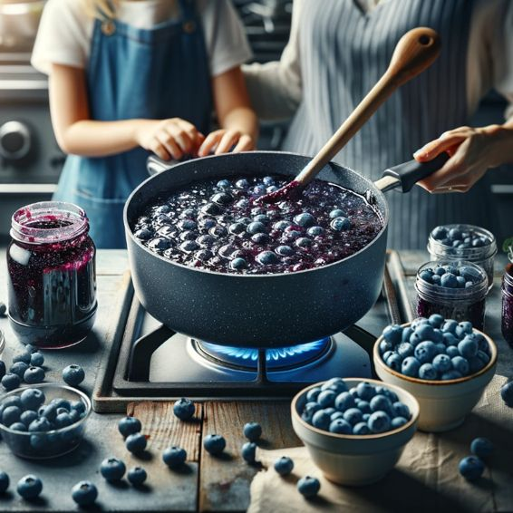
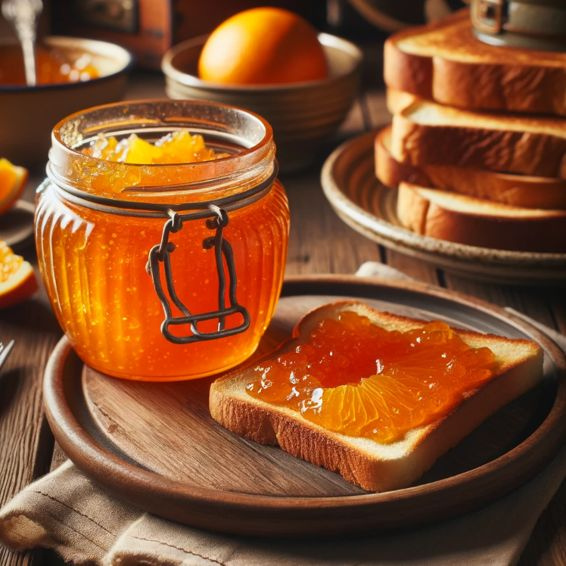

Chapter 1
Choosing the Right Homestead

THE
COUNTRY
LIVING BIBLE
5 in 1
The Definitive Homesteading Guide for Preppers to Live & Thrive Off the Grid | Including Survival Skills to Stay Independent, Safe & Healthy Even in Uncertain Times
Jake L. Bryan
© Copyright Jake L. Bryan 2024 - All rights reserved.
The content contained within this book may not be reproduced, duplicated, or transmitted without direct written permission from the author or the publisher.
Under no circumstances will any blame or legal responsibility be held against the publisher, or author, for any damages, reparation, or monetary loss due to the information contained within this book. Either directly or indirectly.
Legal Notice:
This book is copyright protected. This book is only for personal use. You cannot amend, distribute, sell, use, quote, or paraphrase any part, or the content within this book, without the consent of the author or publisher.
Disclaimer Notice:
Please note the information contained within this document is for educational and entertainment purposes only. All effort has been executed to present accurate, up-to-date, and reliable, complete information. No warranties of any kind are declared or implied. Readers acknowledge that the author is not engaging in the rendering of legal, financial, medical, or professional advice. The content within this book has been derived from various sources. Please consult a licensed professional before attempting any techniques outlined in this book.
By reading this document, the reader agrees that under no circumstances is the author responsible for any losses, direct or indirect, which are incurred as a result of the use of the information contained within this document, including, but not limited to, — errors, omissions, or inaccuracies.
Table of Contents
Part 1: Homesteading Essentials
Chapter 1: Choosing the Right Homestead
Chapter 2: Building a Sustainable Home
Chapter 3: Growing Your Own Food
Part 2: Survival Skills for Preppers
Chapter 4: Emergency Preparedness
Chapter 5: Mastering Basic Survival Skills
Chapter 6: Food Preservation and Storage
Part 3: Independence Through Self-Sufficiency
Chapter 7: Off-Grid Energy Solutions
Chapter 9: DIY Home Maintenance and Repairs
Chapter 10: Defending Your Homestead
Chapter 11: Communication Strategies
Part 5: Nurturing Physical and Mental Health
Chapter 12: Holistic Health Practices
Chapter 13: Natural Living and Alternative Medicine
Glossary of Homesteading and Survival Terms
Bonus 1: Baofeng Radio Essential Guide
Bonus 2: 25 Easy Canning & Preserving Recipes
Bonus 3: The Survival Herbal Medicine Handbook
Born out of my own pursuit of a simpler existence, this work encapsulates my family's transition from the hustle and bustle of city life to the tranquil embrace of a homestead in the heart of Montana. Surrounded by the rugged beauty of the great outdoors, my wife, our two young daughters, and our faithful German Shepherds, we have embarked on a path that has not only allowed us to live more sustainably but has also enriched our lives in ways we never could have imagined.
With a background in environmental science, I have long been passionate about preserving our planet's precious resources and promoting eco-friendly practices. However, it was not until we made the decision to embrace the homesteading lifestyle that I truly understood the profound impact it could have on our well-being and preparedness for uncertain times.
The Country Living Bible is a comprehensive guide that aims to empower readers to take control of their lives and achieve a level of self-sufficiency that many can only dream of. Within its pages, you will find a wealth of knowledge that spans a wide array of topics, from choosing the perfect homestead location and constructing an energy-efficient home to mastering essential survival skills and implementing off-grid energy solutions.
One of the core tenets of this book is the importance of diversifying food sources and achieving food independence. I firmly believe that by growing our own produce, raising livestock, and exploring innovative techniques such as aquaponics and hydroponics, we can not only ensure a reliable supply of fresh, nutritious food but also reduce our carbon footprint and contribute to a more sustainable future.
As we navigate an increasingly uncertain world, the need for emergency preparedness has never been more crucial. Through this book, I aim to equip readers with the knowledge and skills necessary to create a comprehensive emergency plan, stockpile essentials, and develop a strong understanding of first aid, psychological preparedness, and stress management.
Mastering basic survival skills is another cornerstone of this guide. From shelter building and fire-starting techniques to navigation, wilderness foraging, and outdoor cooking, these time-honored practices will not only enhance your connection with nature but also provide you with the tools to thrive in even the most challenging circumstances.
However, true self-sufficiency extends far beyond mere survival. It encompasses the ability to generate your own energy, maintain a reliable water supply, and possess the skills to perform essential home maintenance and repairs. From solar power systems and rainwater harvesting to basic carpentry, plumbing, and welding, this book will guide you through the steps to achieve a level of independence that many can only dream of.
In an era where safety and security are paramount concerns, The Country Living Bible offers invaluable insights into defending your homestead, implementing home security measures, and fostering a strong sense of community. Whether through defensive landscaping, firearm safety, or establishing communication networks, this book will empower you to protect what matters most.
Lastly, I firmly believe that true self-sufficiency is not merely a physical endeavor but a holistic journey that encompasses mental and spiritual well-being. Through the exploration of holistic health practices, herbal medicine, mindfulness, and traditional healing practices, this book will guide you towards a more balanced and harmonious existence, one that nurtures both body and mind.
Throughout my own journey, I have been constantly reminded of the profound impact that a connection with nature can have on our lives. It is my sincere hope that through The Country Living Bible, I can inspire others to embark on a path towards self-reliance, resilience, and a deeper understanding of the world around us.
Part 1
Homesteading Essentials
Chapter 1
When evaluating potential homestead locations, one of the first factors to look at is the climate and growing zone. Selecting a site with a climate that allows for year-round, productive growing seasons for your desired crops and livestock will be crucial. Research annual rainfall, seasonal temperatures, typical weather patterns, and the average last frost dates to ensure the zone is suitable for what you want to produce. Visiting the location in person across different seasons can provide further insight that research alone cannot. Matching the growing zone and microclimates on the property with your planned agricultural endeavors will allow for stable, abundant harvests.
Consider current climate trends and forecasts as well to choose an area less prone to extreme weather events. Prioritize locations that are projected to be more insulated from climate change impacts. While no land is immune to shifts in weather patterns, choosing a historically stable zone can help mitigate risk. Evaluate options in different regions to compare and contrast climate resiliency. Do not assume historical averages will remain steady, but do use the data to assess relative stability. With climate as a key priority early in your search, you give yourself the best odds of situating your homestead where the land can nourish you long-term.
Availability of freshwater sources is another critical factor for any homestead. Whether planning to live off wells, rainwater collection, streams, or springs, ensure access to adequate water for your household, agricultural, and livestock needs before committing to a property. Understand the water rights that come with the land and restrictions in your jurisdiction so your plans align with the allowed water uses.
If relying on rainwater catchment, carefully calculate harvesting potential based on average rainfall, roof collection area, and storage capacity. Adequately sized cisterns are an expensive but often necessary investment. If pumping from a well, verify through testing that the water quantity and quality are sufficient. Enough water must be available year-round, even in drier periods. Examine the health of on-site springs, streams, or ponds as well. Check for signs of contamination and know flow rates during wet and dry seasons. Consider adding a backup water source as a redundancy. With this due diligence, you can feel confident your homestead has the water supply required to thrive.
When researching potential properties, closely evaluate the acreage or hectares offered. The appropriate homestead size depends on your plans, but extensive land allows for greater self-sufficiency and buffer space from neighbors. Even smaller plots of 5-10 acres can work in some cases, but anticipate needing more if planning significant livestock grazing or crop cultivation. If land prices are high in your target area, get creative in maximizing use of a smaller parcel. Also study the topography and landscape to ensure enough arable, flat land for gardens and orchards, assuming those are part of your intentions. Hilly, uneven ground presents challenges versus gently sloping or flat spaces. While beautiful views add charm to a homestead, prioritize accessibility and formability in your topography analysis. With size and terrain thoroughly vetted, you can make realistic plans matched to the site's capacity.
Deciding just how remote or close to an existing town or community you want to establish your homestead is another key consideration. More isolated locations allow for greater self-reliance but less convenience. Proximity to others provides opportunities for bartering, socializing, and accessing any supplies not grown or made on-site. Reflect realistically on your desire for interaction, resources, potential income sources, and your self-sufficiency skills when weighing remoteness. Due diligence on factors like emergency access is also essential for more isolated spots. There are rewards and trade-offs to both settings, so choose thoughtfully based on your lifestyle vision. Visiting potential sites can provide helpful perspective before deciding on this factor. Get clarity on the remoteness level at which you will feel happiest and most secure.
Give careful thought to how you will provide power to your off-grid homestead. Solar, wind, hydroelectric, generators, or a hybrid system are common options. Assess the renewable energy potential of the site, like average wind speeds or solar exposure. Factor in energy needs for your home, agricultural activities, and business if applicable. Larger properties with greater power demands may benefit from a diversified system leveraging several sources. Prepare by budgeting for significant upfront investments in renewable infrastructure. Regardless of resources available, emphasize energy efficiency in all aspects of operations. Setting your homestead up with adequate renewable power from the start provides consistent energy without ongoing costs.
When evaluating prospective homestead locations, research any potential risks for natural disasters. Consider the history of events like wildfires, floods, tornadoes, hurricanes, earthquakes, and severe storms in the area. While no region is immune to natural catastrophes, some areas have statistically higher incidence rates. Weigh this objectively along with climate resiliency projections. Develop emergency preparedness plans and infrastructure investments appropriate for the level of risk. For example, steel storm shelters, broader fire breaks, and deep water well pumps as backup. Managing the unique risks of a location leads to better protection. Do not let perceived charm outweigh diligent assessment of disaster potential. Your safety depends profoundly on the continued habitability of your homestead land.
Get to know the resources, services, economy and job opportunities near prospective homestead sites as well. While the goal is self-sufficiency, understand options in the community for any needs the homestead cannot fulfill. Research businesses, service providers, social events, farmers markets and more. Consider how you could benefit from or contribute to the local economy through bartering, services or products. Understand major industries and employers, as well as job markets that could provide supplemental income if desired. Valuable knowledge comes from interacting with locals and getting a sense of the culture. While not determinative, gaining a well-rounded view of the surrounding area can shape plans.
Research what fish and wildlife are native to the habitat around potential homestead locations. Abundant wild game and fish provide a sustainable source of food if you plan to supplement through hunting and angling. Check regulations in the area to understand what is allowed. Some properties have more restrictions than public lands. If hunting is an important part of your self-sufficiency plans, choose locations with healthy ecosystems and species populations to support this efficiently. Be realistic about costs and effort required to travel farther if wildlife is scarce near your homestead site. Those with experience hunting locally can provide helpful insight on game availability on or near a property as well.
Once you have researched promising regions and properties that fit your climate, water, size, and remoteness priorities, it's time to evaluate specific land parcels in greater depth. One of the most important assessments is testing the soil. Determine soil types, nutrient levels, pH, drainage capacity, and other attributes that will impact your ability to cultivate crops. Field tests through your local agricultural extension provide the most accurate insights for actively managed land versus remote forested acreage. If current or prior owners grew productive gardens and orchards, that is a positive sign. Analyze soil samples from different sections of the property, as quality can vary across the landscape. Understand any improvements required, like adding lime to balance overly acidic soils. Soil deficiencies can be corrected, but having naturally fertile ground makes establishing gardens and other plants much easier.
It is wise to have a professional land survey done before purchasing any property. Ensure the acreage matches listings and that boundaries are clearly delineated. This can prevent major headaches from boundary line disputes down the road. Look for encroachments from neighboring properties as well. Surveyors can also identify the ideal home and infrastructure site, considering topography, drainage, solar exposure, privacy, and other factors. Having an accurate map of the surveyed land provides a helpful reference point for planning. Checking for survey pins around the perimeter also establishes a baseline you can easily re-reference if boundaries get obscured by vegetation over time. Take time to walk the property lines specified in the survey to familiarize yourself with the land.
Assess the infrastructure and any existing structures or development on the property. Determining what is already established can inform plans and investments going forward. Note condition and maintenance needs for current buildings, fencing, roads, power and plumbing systems, or other assets. If purchasing raw land, identify needs like access roads, utilities, building sites, and more. Evaluate options for power like solar, hydroelectric, wind, or generators. Review any covenants or restrictions on additions and site development as well. Formulating initial infrastructure plans and costs prevents surprises post purchase. With due diligence, you can factor investments into your plans and budget accurately.
If planning to operate a commercially viable farm or homestead business, evaluate income potential from the land before purchase. Not all small acreages are suitable for running a profitable farm, so be realistic in assessing its capability. Location, existing infrastructure, soil and water resources, and market access can dictate what is feasible. Zoning laws also play a role, explored in the next section. Get creative in identifying opportunities like farm stays, niche crops, value-added products, CSAs, online sales, and agritourism. Should you decide purchasing a separate business property makes more sense, look for homesteading parcels allowing some small-scale commercial activity. Strike the right balance between personal use and income opportunity in your property selection.
Research whether any easements for access, utilities, or other uses exist on or through the property you are evaluating. Understand the associated restrictions and contacts for the easement holders. For example, power line rights of way may limit structures or plantings within a certain zone. Shared driveways or private road access through other parcels is common in rural areas as well. Review legal documents to see if any limitations are in place. Ensure you will have reliable, year-round physical access and utilities access to the site. Properties that are physically challenging to access require more preparation and self-reliance.
Assess the drainage and any erosion issues on the land before purchase. Improper drainage can damage structures, ruin access roads, and make planting areas flooded or unsuitable for cultivation. Look for signs of standing water, gullies, moveable soil, or excess runoff flow during wet periods. Understand the impact of topography and soil types on drainage. Some wetness can be managed through swales, French drains, conservation terraces, and wise site selection. But major pre-existing issues are best to avoid. Erosion from poor past land management can also limit farmable areas. Check for conditions conducive to erosion like steep banks, sparse ground cover, and soil compaction. While erosion control steps can be taken, prevention is more effective.
When examining a potential homestead parcel, research who holds the mineral and water rights. This is important to understand before purchasing. The landowner may not necessarily hold all associated mineral or groundwater rights in a given jurisdiction. There could be existing leases, extraction activity, or potential for others to claim rights you are unaware of. Sometimes rights can be purchased separately if not automatically included in the sale. But it is ideal to avoid property with fractured rights or existing claims staking holders. Water rights are especially essential for homesteads to control. Your attorney can help investigate and clarify ownership of all rights attached to a property during due diligence.
After identifying one or more promising properties, investigate local zoning laws and building codes thoroughly before committing. In more rural areas, agricultural zoning may be in place that supports homesteading activities. Other locations may have restrictions on livestock, structures, businesses, or development. Issues like minimum house sizes, occupancy limits, water rights, and more may apply. Study regulations for your jurisdiction to avoid headaches after purchase. Rezoning requests can be made but are not guaranteed. Consulting with local government planning departments provides guidance on what is allowed or may require special permitting on a given property. Consider zoning a make-or-break factor; while codes can sometimes be navigated, prohibited uses are best to avoid through careful due diligence.
Depending on your plans, investigate what permits or approvals may be needed even in agriculturally zoned areas. Items like larger outbuildings, certain farm structures, additional dwellings, or businesses often require permits. There may be costs, inspections, and conditions involved. Understand these upfront for smooth sailing later. If the land is part of a homeowners association, carefully review covenants, restrictions, and fees you would be signing onto as well. While associations maintain standards, their rules do not always align with homesteading goals. Weigh if the benefits outweigh potential headaches before buying into community associations. Get informed on permitting and governance early so you can make land use plans accordingly.
Ensure you have guaranteed legal access to any property before purchasing. Do not assume a current road or path will remain if not formally deeded. Review access easements and public records to understand your rights. For parcels joining public lands, any access crossing federal ground requires permits and strict rules. Failure to properly establish legal access early on can undermine your entire homestead later. No matter how ideal the property appears otherwise, guaranteed legal access is essential. Consult with real estate attorneys to investigate and resolve any concerns related to physical entry routes. Saving money by not thoroughly checking access often costs more in the long run. Do not be caught off guard if prior owners made informal arrangements that carry no legal standing.
Take time to research potential tax benefits and consequences of owning your chosen homestead land. In many areas, agricultural exemptions or discounts are available on property taxes and assessments. However, these often come with obligations like mandated minimum farm product sales. Understand qualifications and reporting requirements. If planning commercial operations, clarify business, income, and employment tax obligations. Cooperative farming communities need to structure agreements carefully. Consulting with an accountant experienced in homesteads and farms allows you to optimize taxes. Budget for annual accounting fees as well. With credible tax guidance, you can focus on your homesteading goals rather than unexpected tax burdens.
Consider steps to mitigate your legal liability risk while homesteading. This provides protection should any accident or incident occur on your property. Start by reviewing your insurance coverage, especially if planning agricultural production or agritourism ventures. Many policies limit or exclude common farm activities. Investing in tailored, adequate liability insurance right away is wise. Post clear signage on roads, fences, pens, and buildings to warn visitors of inherent risks and set expectations. Also consider forming an LLC to legally separate and shield your personal assets. Work with an attorney to put sound business structures in place. While not overreacting, prudent legal and insurance preparations give peace of mind if a lawsuit ever arises.
Research any government conservation programs or agricultural incentives in your target location, like those from the USDA. Often programs provide resources, cost-sharing or tax benefits for implementing certain conservation practices on farms and homesteads. For example, establishing riparian buffers, building rainwater harvesting structures, or creating wildlife habitat may qualify. If your plans align, taking advantage of programs can offset costs while still fulfilling your vision. Grants or loans may also be available for installing renewable energy systems. Knowing your options allows you to potentially benefit. Just be cautious of overly restrictive contracts or loss of decision-making power over your property.
Once you own a homestead property, extensive field soil analysis provides detailed insights to shape plans. While initial tests may have been done, on-site work allows you to target specific areas. Field tools like probe rods let you assess sub-layer compaction or issues that may not surface in lab samples alone. Test different sections, noting variations between wind-sheltered lowlands and exposed ridges. Check for healthy worm populations, beneficial fungi, and microorganisms. Send multiple samples to labs as well for comparison. With data from your actual site, you can address needs through the following soil improvement techniques. Do not assume even good topsoil extends far below the surface. Diligently examine soil profiles.
Incorporate quality compost and aged manure to improve soil nutrition, organic matter, moisture retention, and microbial activity. When sourced locally, this mimics natural nutrient cycling. Plan composting operations to re-use plant waste, manures, and food scraps from your homestead. Pile locations should allow runoff collection from nearby roads or structures. Turn and monitor temperature to optimize useful heat and rotting. Well-finished compost introduces an array of beneficial microbes versus raw materials. Apply 1-3 inches annually, concentrating in growing areas. Adding organic matter also increases water retention, reducing irrigation needs in dry periods. Improving soil health takes time, but rewards the effort.
Strategically planting cover crops, green manures, and rotational fallow periods enhances soil structure and nutrients between main crops. The increased year-round plant growth and diversity boosts organic matter. Deep taproots break up compacted layers while extensive root systems add channels for air and water. Legumes fix nitrogen. Allowing decomposition in place further enriches the site. Structure improvements last years after short cover crops. Mindfully rotate main crop plant families across sections and seasons to prevent pest and disease buildup. Intentionally cycling land use maximizes benefits over exclusively extracting yields. Let sections fully rejuvenate while focusing crops elsewhere.
Excessive compaction impedes root growth, drainage and soil life. Avoid working land when wet to prevent compressing soil layers. Use low-pressure equipment, tracking tools, and designated paths to limit wide compaction. Aeration by mechanical tillers or simply poking holes relieves compaction. However, tilling also destroys beneficial fungal networks and structure. Focus on building soil layers through minimal disturbance. Plant deep rooting species to naturally fracture compacted areas. Compost additions will lighten overly dense zones over time. If managing significant compaction, calmly undo the damage through occasional, targeted aeration rather than aggressively tilling whole areas.
Test soil pH across the homestead to identify any imbalances needing correction. Most plants thrive with a slightly acidic pH between 6-7, though some prefer more alkaline conditions. If pH is too low or high, nutrient availability suffers. Lime or wood ash raises pH in acidic soils. Sulfur lowers pH in alkaline soils. When possible, make adjustments in smaller increments over multiple seasons, allowing soil organisms to adapt. Rush changes shock the microbial ecosystem. Once in the ideal range, maintain pH through ongoing organic matter additions. Keep records to track changes over future tests. With mindful management, soil pH provides a positive foundation for plant growth rather than a barrier.
Quality soil absorbs and infiltrates rainfall readily, while degraded soil increases runoff flow. To improve infiltration, reduce compacted layers through the prior methods discussed. Expand organic matter which acts like a sponge to hold more moisture. Incorporate sand to create more space between soil particles if drainage is very poor. Establish permanent cover crops and minimal tilling since bare ground erodes faster. Contour plowing directs water downward into the soil. Building healthy soil and preventing erosion allows the land to capture rainwater while reducing flooding, aquifer depletion, and drought vulnerability.
If industrial or chemical contamination from prior land use exists, take steps to remediate and heal the soil. First understand the type, location and severity of contaminants through lab testing. Options include physically removing and properly disposing of contaminated soil, intensive leaching to dissolve toxins, or on-site bioremediation using microbes. Phytoremediation uses specific plants to absorb toxins gradually over time. Most bioremediation processes require repeated applications and monitoring over years. Be very cautious about consuming crops from once-contaminated areas. While challenging, restoring abused soil to health provides great satisfaction.
Continually observe and interact with your landscape to deepen soil understanding. Track changes through the seasons, making notes on drainage, emergence patterns, challenges and successes in each area. Recognize connections between factors like irrigation, fertility amendments, and resulting plant vigor or pest pressures. Notice distribution of soil organisms, paying close attention to earthworms and beneficial fungi. Spend time tuning into the land until you can read the soil as well as any report. Let your field wisdom guide enhancements and problem solving. Soil health requires persistent, attentive care.
A robust survey of existing wildlife and habitat should be part of your property assessment process. Document the species supported by forests, fields, wetlands, waterways or other ecosystem types found on your land. Note signs like game trails, nests, scat, rubs, burrows and more to map activity areas. Identify any threatened or endangered species that rely on the habitat so these sensitive zones can be protected. Educating yourself on present plant communities and animals provides the baseline understanding needed to be a good steward.
Encourage biodiversity by providing varied habitat structures through your land management choices. Preserve wilderness buffer zones in addition to managing fields and croplands. Cluster plantings of native species favored by wildlife rather than clearing or altering large monoculture blocks. Maintain hedgerows, shrublands, hollow dead trees, and other transition habitats between ecosystem types. Time land clearing outside of nesting seasons. Connect fragmented habitat through corridors. The more diversity you support, the more balanced the ecosystem. This attracts beneficial pollinators while limiting pest or predator takeovers. Find harmony integrating homestead needs and wildlife.
If harvesting wild game on your property, develop a conscientious hunting plan that sustains populations year after year. Follow all regulations on required licenses and season lengths. Focus harvests on abundant males of mature age, allowing females and young to propagate the next generation. Only take what is truly needed for your family’s use rather than overharvesting. Rotate hunting zones on a 3-5 year schedule to prevent pressuring isolated areas. Purposely allow sanctuary zones where animals remain undisturbed. Supplement with hay or crops in tough winters with low natural forage. Ethically balancing hunting with preservation ensures the continued renewal of this food source.
Expect to share habitat with native predator species that help balance the ecosystem. Take preventative steps like guardian animals, reinforced enclosures and removal of brush concealing approaches to protect livestock and pets. Provide shelter for smaller prey animals. Utilize non-lethal deterrents first if conflicts arise. Avoid leaving any food or waste that could attract predators near buildings. With caution and common sense, even potentially dangerous wild animals can be safely integrated on a homestead through smart coexistence strategies. Peacefully fostering natural checks and balances reduces problem species populations long-term.
If your property contains wetlands, ponds, lakes or streams, steward aquatic health in addition to terrestrial systems. Prevent nutrient runoff from fields and roads flowing directly into waterways through vegetated buffers and berms that allow filtration. Limit shoreline vegetation removal and dock construction that degrades water and riparian habitat quality. Sustainably manage stormwater, irrigation and household water flows to maintain waterway volumes, especially in dry periods. your land ethically by considering impacts to connected water resources. Healthy aquatic habitats support diverse life both on and off your homestead property.
Do your part to combat invasive plants, animals, fish, and insects that can take over native ecosystems. Learn identification and life cycles of priority invasives in your bioregion. Implement early detection and rapid control tactics before populations explode. Use extreme caution importing non-native species. Prevent seed transmission through cleaning equipment moved between properties. Contain invasives using natural barriers like hedgerows to limit spread. Monitor borders vigilantly. Foster native species that occupy the same niche through holistic land management. Staying informed and taking action against biological invasions protects biodiversity.
Develop detailed emergency action plans for likely natural disaster scenarios based on your location’s history. Write out step-by-step instructions for events like wildfires, floods, storms, and drought contingency. Keep copies in protected, accessible sites across the property. Specify evacuation procedures if needed, identifying at what point thresholds are met. Designate aftermath roles and assign tasks for damage assessment, repairs, animal relocation, etc. Run practice drills. Make agreements with neighboring landowners for refuge if necessary. While we cannot control disasters, thorough readiness makes survival and recovery more likely. Hope for the best while planning prudently.
Chapter 2
When building an off-grid home, the first decision is what type of structure best suits the homesteaders' needs and lifestyle. Off-grid homes run the gamut from simple temporary shelters to intricate earth-integrated architecture. Choosing the right home design is a balance of factors including climate, budget, skills, and desired comfort level. This section will overview popular options for off-grid homes.
Yurts are a classic low-cost and low-impact housing option for off-grid living. These circular tent-like dwellings originated in Central Asia but have become popular around the world. Yurts are made of a wooden lattice frame covered in fabric, felt, or skins. They can be easily assembled, disassembled, and transported, making them a good choice for impermanent or nomadic homesteads. Yurts are spacious, with high ceilings that allow hot air to rise in summer and cold air to settle in winter. Kits are available for purchase, or homesteaders can build their own lattice frame from scratch. While yurts do not provide as much insulation or weatherproofing as permanent dwellings, they can be an affordable and satisfying off-grid shelter.
Tiny homes have become a trendy compact living option. These very small eco-friendly homes are typically between 100 to 400 square feet. They offer an inexpensive and minimalist housing solution. Tiny homes can be built on trailers for mobility or mounted on foundations. Building one is relatively simple and fast. Homesteaders seeking a small carbon footprint would do well to consider going tiny. The main challenges are fitting all necessities into a small space and ensuring proper insulation. Tiny homes work best in mild climates or when paired with a separate kitchen, bathroom, and storage spaces. Overall, they enable off-grid living with little cost and land impact.
Park model homes, also called recreational park trailers, offer a mid-range permanent housing option. Park models are small homes, typically 400 square feet or less, constructed on a trailer chassis. This allows them to be towed to locations and parked. Park models have living facilities and amenities like full kitchens, bathrooms, bedrooms, and laundry. They are larger than tiny homes, giving more living space. High-quality models are insulated and rugged enough for year-round off-grid living. Hooking up utilities takes some effort, as does fortifying them to withstand weather. But park model homes can give homesteaders affordable permanent housing without a major build.
Shipping containers, also called sea cans, provide a uniquely durable and modular building material. Containers are weather-resistant steel boxes built to withstand ocean transport. Constructing a home from one or more stacked containers has become popular. This method allows speedy assembly and flexibility in design. Containers can be insulated and outfitted with doors, windows, and utilities. Homesteaders just need the equipment to deliver and maneuver the heavy containers. Multi-container homes also require significant welding and steel work. Overall, container homes offer customizable housing with modern industrial chic. They work best in warmer climates given the challenges of insulation. But they are an intriguing eco-friendly option.
Straw bale homes involve building walls from stacked bales of straw, then plastering the exterior for protection from weather. The thick straw provides excellent insulation for energy efficiency. Straw bale homes have a low carbon footprint because straw is plentiful agricultural waste needing reuse. The construction process is simple and low-tech, accessible to homesteaders. Designs range from modern to whimsical. Disadvantages include the large space needed for thick walls, uneven settling, and vulnerability to moisture. Extra care is needed during construction to build durable, lasting straw bale walls. Overall, this ancient building style combines sustainability and rustic beauty for a unique hand-crafted home.
Earthbag building uses bags, tubes, or cylinders filled with minimally processed natural materials such as earth, sand, gravel, and straw. The flexible bags stack and interlock easily into free-form structures. Barbed wire between layers secures the bags. Once complete, earthbag walls are plastered inside and out. This creates thick protective walls at low cost from readily available local natural materials. Labor is the primary build expense. Homesteaders enjoy creative freedom in designing earthbag homes ranging from domes to vaults and more. Disadvantages include vulnerability to moisture and earthquakes. When built properly, earthbags are a sustainable, resilient, and economical housing option.
Earthships are passive solar earth-sheltered homes built from natural and recycled materials. Earthship architecture focuses on off-grid functionality including harvesting rainwater, solar energy, and heat from the sun and earth. Signature design elements include south-facing sloped glass walls for sun exposure, thick berm-covered walls for insulation, indoor greenhouse space, and graywater reuse through constructed wetlands. While fascinating in concept, earthships require significant expertise to construct properly. They perform best in warm sunny climates with limited rainfall. Done right, earthships merge cutting-edge green technology with ancient techniques to create extraordinarily sustainable off-grid shelters.
Energy self-sufficiency is a key goal of off-grid homesteads. Careful planning is needed so the home generates its own power sustainably. This section covers passive solar design concepts, active solar power systems, and other strategies to maximize energy efficiency. Following these guiding principles in home design helps minimize the amount of electricity that must be generated on-site. An energy-wise homestead home will be more comfortable, cost-effective, and eco-friendly.
Passive solar home design takes advantage of sunlight for natural lighting, heat, and ventilation. The goal is to capture solar energy passively through deliberate design and building orientation. Key elements include large south-facing windows, thermal mass like stone or concrete floors to store heat, window overhangs that block summer sun but allow in winter sun, and good insulation. Passive solar homes require strategic roof overhangs, improved sealing, and energy-efficient windows and doors. When done properly, passive solar homes can remain comfortable year-round with little need for backup heating or cooling. This greatly reduces energy demand. Homesteaders will reap huge efficiency gains simply by optimizing their home's passive solar design.
Beyond passive solar, homesteads can generate electricity actively via photovoltaic solar panels or concentrated solar power systems. Photovoltaic (PV) panels made of silicon directly convert sunlight into electricity through the photovoltaic effect. They require no moving parts and minimal maintenance. PV systems include panels, mounts, wiring, batteries, power inverters, and controllers. Panels mount on roofs, racks, or trackers to optimize sun exposure. Concentrated solar power focuses sunlight through mirrors onto a receiver holding a heat-transfer fluid. The superheated fluid produces steam to spin turbines for generating electricity, like traditional power plants. Active solar power systems require equipment investments but provide clean renewable energy. When sized properly for the home's needs, they enable reliable off-grid living.
Embodied energy refers to the total energy needed to produce and build a home, including extracting, processing, manufacturing, and transporting building materials. Using natural, local, and recycled materials significantly reduces a home's embodied energy. Other tactics are minimizing square footage, opting for multifunctional space, and choosing lightweight materials requiring less structural support. Streamlined plumbing and electrical systems also cut down on materials. Designing the home with low embodied energy lessens its overall life cycle energy burden. This complements making the home energy-efficient to operate. Together, these steps minimize the home's creation and operational energy costs—both key sustainability goals.
Proper air sealing and insulation are twin pillars of energy-efficient construction. Air sealing addresses all the cracks, gaps, and joints in the building envelope where air leaks occur. Vigilant sealing maintains indoor climate control and prevents moisture issues. Insulation provides resistance to heat flow and improves soundproofing. The energy code sets recommended insulation levels for roofs, walls, and foundations based on climate. Combining an airtight barrier with thick insulation yields huge energy savings.
Pre-Construction Sealing
Comprehensive air sealing starts before construction even begins. The ground-contact area under the footprint should be graded and sealed to prevent moisture infiltration. Polyethylene sheeting, rigid foam boards, or spray-applied sealing compounds work well. All service and utility penetrations through the subfloor must be completely sealed using caulking, expanding foam, or rigid blocking. Prefabricated advanced framing panel systems integrate insulation, blocking, and an air barrier into wall and roof components before assembly. Using advanced framing panels accelerates quality sealing and insulation. Taking these pre-construction sealing steps creates an intact air and thermal boundary even before the walls and roof go up.
Pre-construction sealing lays the groundwork for an airtight building envelope. Proper grading and sealing under the home prevents moisture from seeping up from the ground over time. This averts catastrophic damage from rot, fungi, and pests. Sealing all subfloor utility openings maintains the air barrier created by the subfloor. Advanced framing panels integrate sealing, insulation and structure in one easy-to-install component. Overall, meticulous pre-construction sealing saves huge hassle and expense down the line. It establishes a contiguous thermal and air barrier before construction begins so the home is efficient from the get-go.
Whole-House Air Sealing
Continual diligence is needed when constructing walls, windows, doors, and roofing to maintain proper whole-house air sealing. All junctions between building components should be sealed with caulk, foam, or durable tape designed for the purpose. The exterior water-resistive barrier should be integrated with interior air sealing strategies like taped sheathing panels. Rim joists, attic hatches, joints around windows and doors, wiring penetrations, fireplace inserts, plumbing stacks, and all other joints must be meticulously sealed as well. Whole-house ventilation systems balance fresh air intake with stale air outtake while retaining energy efficiency. Tight construction coupled with mechanical ventilation provides an optimally sealed home.
Careful whole-house air sealing is essential because heat flows through every unsealed crack and gap. Air leakage accounts for up to 40% of heating and cooling costs. Proper sealing also buffers indoor air quality and prevents structural issues from moisture infiltration. Each potential air leak and joint must be identified and properly sealed during framing and construction. High-performance caulk, spray foam, and tapes specially engineered for sealing and insulation are worth the investment. Homeowners can even do blower door tests when finished to detect any remaining leaks. With diligence and the right materials, the home can achieve a continuous thermal and air envelope.
Insulation Installation and Specs
Insulation complements air sealing by resisting conductive and convective heat flow. Proper insulation levels keep interiors comfortably cool in summer and warm in winter with minimal artificial heating and cooling. The DOE and building code prescribe exact R-value specifications for insulation based on the home's climate zone. Typically R-30 to R-60 insulation is recommended for roofs, R-15 to R-30 for walls, and R-15 to R-25 for foundations. Many types of insulation exist including fiberglass, mineral wool, cellulose, and spray foam. Each insulation material has different properties and installation requirements that must be followed. Continuous insulation coverage is critical—any gaps or compression dramatically lowers its effectiveness. With diligent installation of ample insulation to code, the home will gain thermal efficiency and comfort.
Insulation works hand in hand with air sealing to maximize energy efficiency. The insulation slows heat conduction through roof, walls, and foundation while the air sealing stops leakage through cracks. Referencing climate zone insulation codes ensures suitable thermal resistance for local conditions. The chosen insulation material also matters for properties like vapor permeability and fire resistance. But most importantly, insulation must be installed without any gaps, compression, or settling to perform as rated. The insulation and air sealing together create an enveloping barrier keeping interior warmth in during winter and outdoor heat out in summer. This provides comfort and energy savings.
High-Performance Windows and Doors
Windows and doors are crucial yet challenging components to seal and insulate properly. High-performance options provide stellar insulation, solar heat gain management, weather and air sealing, durability, and sometimes even energy generation. For example, triple-glazed windows with low-emissivity coatings and reinforced frames insulate extremely well. Strategically sized roof windows optimize natural light and passive solar gain. Energy-generating solar windows and doors have integrated photovoltaic cells. When selecting doors, fiberglass and steel insulated models offer durability, efficiency, and air-tightness. Investing in top-tier windows and doors pays dividends in home performance and comfort.
The right windows and doors keep interior air in and outdoor temperatures out, lowering energy demand. High tech glazings, multiple panes, insulating frames, and thermal break technologies are worth the investment. They make the home pleasant and livable year-round. Solar components actively harvest energy while also serving as windows or doors. Beyond efficiency, placement matters too—large south-facing windows maximize solar gain in winter. Solar shading structures and overhangs prevent overheating from too much sun in summer. With both smart component selection and strategic orientation, windows and doors can work in harmony with the sun and climate. This optimizes their contribution to an energy-efficient home.
Quality Installation and Maintenance
Even the highest performing insulation, air sealing, and HVAC equipment will underperform if not properly installed and maintained. Professional-grade installation is key, as minor gaps or compression can greatly reduce efficiency. Seams, penetrations, and junctions with other building systems require meticulous execution. Regular inspection, testing, and maintenance helps spot issues like air leaks, insulation settling, and HVAC performance drifts over time. Tuning up and repairing problems prevents energy waste and saves money. Investing in durable materials installed by skilled professionals, coupled with vigilant maintenance, ensures maximum long-term efficiency.
Insulation, air barriers, and HVAC equipment represent major home investments that require professional installation and maintenance. Even small installation flaws make them vastly underperform—for example, supposedly R-30 ceiling insulation that gets compressed to R-18. Ongoing monitoring through home energy ratings, blower door testing, and infrared imaging reveal issues over time. Tackling problems early keeps efficiency high. Tasks like re-caulking gaps, adding insulation, cleaning HVAC coils, and filter changes extend system lifespans. Prioritizing quality installation plus periodic maintenance gives the best performance and comfort from these critical home components.
Off-grid living requires innovative solutions for supplying water as well as processing any wastewater and sewage without municipal infrastructure. Careful planning must ensure the homestead has sufficient clean water available for household needs while responsibly containing and recycling all outflow. Graywater, blackwater, and solid waste management are essential for an eco-friendly home. This section covers various options for off-grid water supply and septic requirements. With the right systems in place, the homestead can be self-contained and low-impact.
Rainwater harvesting provides an independent water supply by capturing, diverting, and storing rainwater from the home's roof. System components include gutters, downspouts, filtration, storage tanks, and distribution plumbing to end uses like irrigation. Design considerations are the home's roof collection area, average rainfall, and water demands. Storage tanks size depends on household occupancy and water needs. If rainwater is for drinking, rigorous filtration and disinfection are critical. For non-potable uses like laundry and landscaping, basic filtration suffices. Rainwater harvesting conserves groundwater and gives homesteads more control over their water supply.
Drilling a well gives access to groundwater reservoirs beneath the homestead. Wells can be shallow or deep depending on geology. Well depth, pump strength, and storage capacity must align with water demand. Licensed well drilling contractors determine optimal siting and borehole depth. Submersible pumps bring water to the surface. Storage tanks buffer usage peaks and provide pressure. Water must be tested for potability, and treatment systems added if needed. Wells require maintenance like periodic inspection and shock chlorination. Regulations govern well construction and usage. Done properly, a well provides a reliable, independent off-grid water source. But wells are a major upfront investment, and usage requires careful stewardship of the groundwater resources.
Composting toilets allow water-free and ecological waste processing. Different designs exist, but all rely on aerobic decomposition of excrement into fertile compost. With proper use, composting toilets are odorless and generate usable soil amendment. They use no water and avoid costly septic systems. Batch design toilets collect waste in chambers beneath the toilet seat. Mixed and moved chambers produce finished compost over 6-12 months. Continuous composting toilets continually aerate and slowly rotate wastes through a drum, faster producing compost. Composting toilet use requires some habit training, but they sustainably process humanure into a valuable asset without wasting water.
Conventional septic systems filter and process home wastewater onsite. A septic tank settles out solids while bacteria treat liquid effluent. Clarified effluent disperses through an underground leach field allowing further filtration by soil. Complex regulations govern septic system design and installation based on factors like soil type, lot size, and home occupancy. Professional expertise is required to site, size, and install code-compliant septic systems. Homeowners must diligently maintain the septic tank, leach field, and associated pipes and pumps. Malfunctioning systems endanger home and environmental health. When functioning properly, septic systems adequately process home sewage off-grid. But they require significant initial investment and ongoing care.
Greywater systems extract reusable wastewater from sources like showers, sinks, laundry, and dishwashers. Collection plumbing separates greywater from toilet water. After settling to remove solids, greywater distributes through subsurface irrigation pipes. Plants filter and uptake the water and nutrients. Simple systems use manual switching between irrigation and sewer lines. More advanced automated systems filter greywater and split flows. Greywater must only use plant-friendly soaps. Reusing wastewater cuts environmental impact, but codes restrict allowable sources. With smart design, greywater systems conserve water, recycle nutrients, and reduce septic/sewer loads.
Engineered wetlands offer an ecological approach to processing home wastewater. Wetland plants and microbes naturally filter and digest organic matter, sediments, and pollutants. Effluent flows through subsurface gravel beds planted densely with wetland vegetation. Pathogens, nutrients, and suspended solids gradually remove through physical, chemical, and biological processes. Wetlands also sequester carbon and provide wildlife habitat. But they require large land areas and regular harvesting of plant matter. When designed, constructed, and maintained properly, constructed wetlands sustainably treat homestead wastewater and return clean water to the environment.
When it comes to building a truly sustainable and off-grid home, the choice of materials and construction techniques is paramount. In this chapter, we will delve into the intricacies of creating a dwelling that not only provides shelter but also harmonizes with the natural environment, minimizes its ecological footprint, and offers long-term durability and resilience.
Before we begin, it is crucial to understand that sustainable home construction is not a one-size-fits-all endeavor. The materials and techniques employed will vary depending on your location, climate, available resources, and personal preferences. However, the overarching principles of eco-friendliness, energy efficiency, and integration with the surrounding landscape should remain at the forefront of your decision-making process.
One of the cornerstones of sustainable construction is the use of natural and renewable materials. These resources not only have a lower environmental impact but also offer superior insulation properties and breathability, creating a healthier indoor environment.
1. Timber and Wood Products
Timber and wood products are sourced from trees and are among the most traditional building materials used worldwide. Their versatility allows them to be used in various aspects of construction, including framing, flooring, siding, and as structural components such as beams and trusses. Wood's natural insulating properties contribute to energy efficiency, making it an excellent choice for off-grid living.
In the context of off-grid homes, timber can be employed in traditional framing techniques, post-and-beam construction, or even in more innovative methods like timber frame with straw bale insulation. For durability, wood should be treated or naturally resistant to decay and pests. Using wood in combination with passive solar design and super-insulation strategies enhances its thermal performance.
Sustainable timber can be sourced from certified forests that adhere to responsible forest management practices. In the United States, look for certifications like the Forest Stewardship Council (FSC) label. Reclaimed wood, an eco-friendly alternative, can be found at salvage yards, reclaimed lumber companies, and through specialized online marketplaces. Additionally, local sawmills may offer locally sourced timber, providing an opportunity to support local economies and reduce transportation emissions.
2. Earth-based Materials
Earth-based materials like rammed earth, adobe, and cob are made from natural earth, clay, sand, and organic fibers. These materials are celebrated for their thermal mass, which helps regulate indoor temperatures, keeping homes cooler in the summer and warmer in the winter. Their use reduces the reliance on mechanical heating and cooling systems, ideal for off-grid living.
Adobe and cob can be used for constructing walls by forming the material into bricks (adobe) or by sculpting it directly (cob). Rammed earth walls are created by compacting a damp mixture of soil, clay, and gravel between temporary formworks. These techniques require some skill, and it's beneficial for beginners to participate in workshops or work with experienced builders to learn the craft.
The primary ingredients for earth-based materials are often sourced directly from the building site or nearby locations, minimizing the environmental impact associated with transportation. For more specialized components like stabilizers or natural fibers, local building supply stores, agricultural supply stores, or online retailers that specialize in sustainable building materials can be valuable resources. Communities focused on sustainable living or local natural building groups can also provide insights and resources for sourcing materials.
3. Bamboo
Bamboo is a fast-growing, sustainable grass that possesses strength and flexibility comparable to many hardwoods, making it an excellent choice for construction. It's used in a variety of applications, including structural elements, flooring, paneling, and furniture. Bamboo's rapid growth cycle makes it a highly renewable resource, and its use in building contributes to carbon sequestration.
Bamboo can be used in structural applications, such as framing and as a replacement for traditional lumber. It also excels in finish work, offering a unique aesthetic for flooring, wall paneling, and cabinetry. When used structurally, it's important to consider treatment against pests and decay to ensure longevity.
Bamboo materials can be sourced from specialty building suppliers and through online marketplaces that focus on sustainable construction materials. Some home improvement stores may carry bamboo products, particularly for flooring and decorative purposes. For those looking to use bamboo structurally, it's worth researching suppliers that specialize in construction-grade bamboo and can provide guidance on the best species and treatments for building applications. As bamboo becomes more popular in sustainable building circles, its availability is increasing, making it more accessible for off-grid projects across the USA.
Embracing the principles of reduce, reuse, and recycle, incorporating recycled and repurposed materials into your home construction can significantly lower your environmental impact while adding character and uniqueness to your dwelling.
1. Reclaimed Wood
Reclaimed wood is salvaged from a variety of sources, including old barns, decommissioned factories, dismantled ships, and used shipping pallets. This wood often comes from old-growth trees and has characteristics that are hard to find in new lumber, such as unique grain patterns, natural weathering, and a patina that adds warmth and character to interiors.
Reclaimed wood can be creatively incorporated into off-grid homes in many ways. It's ideal for flooring, offering a unique aesthetic and history that new materials can't match. It can also be used for siding, providing a naturally weathered exterior that blends well with natural surroundings. Inside, reclaimed wood makes excellent decorative accents, furniture, and even structural beams, adding a touch of rustic charm and warmth to the space. When using reclaimed wood, it's important to ensure it's free from pests and properly treated, if necessary, to preserve its beauty and structural integrity.
In the United States, reclaimed wood can be sourced from specialized salvage yards, reclaimed lumber companies, and through online marketplaces dedicated to used and vintage materials. Additionally, local classified ads, community boards, and social media groups focused on DIY and sustainable living can be excellent resources for finding reclaimed wood. Some companies specialize in deconstructing old buildings and carefully salvaging materials, offering another avenue to explore for sourcing reclaimed wood.
2. Recycled Plastic and Composite Materials

Recycled plastic and composite materials are made by combining post-consumer plastic waste with other materials, such as wood fibers, to create durable, low-maintenance building materials. These composites are designed to reduce the consumption of virgin resources and manage plastic waste effectively.
These materials are incredibly versatile and can be used in various applications within off-grid homes. For outdoor applications, recycled plastic decking and siding offer durability, resistance to rot and pests, and minimal maintenance, making them ideal for harsh environments. Inside, these materials can be used for cabinetry, paneling, and even as structural components in some cases. Their resistance to moisture also makes them suitable for use in kitchens and bathrooms.
Recycled plastic and composite materials are becoming more widely available due to the growing demand for sustainable building products. Many home improvement stores and specialized building supply stores offer a range of recycled composite materials suitable for both interior and exterior applications. Online retailers and manufacturers also provide direct access to these products, often with detailed information about their composition, usage, and environmental benefits.
3. Salvaged Materials
Salvaged materials are items that have been saved from demolished or renovated buildings and repurposed for new construction. These can include vintage windows, doors, bricks, stones, fixtures, and even plumbing components. Salvaging these materials not only reduces waste but also preserves a piece of history and adds unique character to a home.
Salvaged materials can be incorporated throughout an off-grid home to add a sense of history and uniqueness. Vintage windows and doors can become statement pieces that also contribute to the home's natural light and ventilation. Repurposed bricks and stones are perfect for fireplaces, patios, and walkways, adding durability and timeless charm. Even smaller items like fixtures and hardware can add delightful accents and continuity in design themes.
Salvaged materials can be found at architectural salvage yards, second-hand stores, and through online marketplaces specializing in vintage and used building materials. Additionally, local demolition projects, estate sales, and flea markets can be unexpected sources for finding unique salvaged items. Networking with contractors, architects, and designers who focus on sustainable and historic preservation projects can also lead to valuable leads for sourcing salvaged materials.
In addition to natural and recycled materials, there are several sustainable and low-impact options that can contribute to a more environmentally responsible home construction.
1. Structural Insulated Panels (SIPs)
Structural Insulated Panels (SIPs) are high-performance building panels used in floors, walls, and roofs for residential and light commercial buildings. The panels consist of an insulating foam core sandwiched between two structural facings, typically made of oriented strand board (OSB). This innovative construction method offers several benefits, including superior insulation, airtightness, and structural integrity.
SIPs are used to create a building envelope that is highly energy-efficient and sturdy. Their prefabricated nature allows for quicker construction times, reducing labor costs and construction waste. The panels are designed to fit together tightly, minimizing thermal bridging and air leaks, which leads to significant energy savings. When planning to use SIPs, it's important to work with a knowledgeable designer or architect familiar with SIP construction to optimize the design for energy efficiency and structural performance.
SIPs are widely available through manufacturers and distributors across the United States. Many companies specialize in SIP production and can custom-fabricate panels to fit specific project designs. These companies often provide technical support and can recommend experienced contractors familiar with SIP installation. A directory of SIP manufacturers and distributors can be found through industry associations such as the Structural Insulated Panel Association (SIPA).
2. Insulating Concrete Forms (ICFs)
Insulating Concrete Forms (ICFs) are formwork for concrete that stays in place as a permanent part of the wall assembly. The forms, made of foam insulation, are either interlocking modular units that are dry-stacked (without mortar) and filled with concrete or individual planks that are tied together with plastic or metal ties and then filled with concrete. The result is a building system that is extremely strong, energy-efficient, and resilient.
ICFs are primarily used for exterior walls but can also be used for foundations. The blocks or panels are stacked to create the form of the walls; steel reinforcement is added before the concrete pour to provide structural integrity. Once the concrete has cured, the foam forms remain in place to serve as insulation. This method is well-suited for off-grid homes due to its high thermal mass and insulation values, which make for a highly energy-efficient building envelope.
ICF products are available from a variety of manufacturers and suppliers throughout the country. Most suppliers offer complete systems, including the forms, fasteners, and waterproofing materials, and can provide technical support and training for builders and contractors. The Insulating Concrete Forms Manufacturers Association (ICFMA) and other industry organizations can provide lists of suppliers and certified installers.
3. Eco-friendly Insulation Materials
\
Eco-friendly insulation materials offer a sustainable alternative to conventional insulation products. These materials include cellulose, which is made from recycled paper and treated for fire and pest resistance; sheep's wool, which is natural, renewable, and offers excellent thermal and moisture-regulating properties; and plant-based spray foams, which are derived from renewable sources and contain no harmful chemicals or pollutants.
Eco-friendly insulation materials can be used in the same applications as traditional insulation, such as in walls, roofs, and floors. Cellulose insulation is typically blown into cavities or laid as loose fill. Sheep's wool comes in batts that can be cut to fit between studs and joists, similar to fiberglass insulation but without the irritation. Plant-based spray foams are applied wet and expand to fill cavities, creating an airtight seal.
These sustainable insulation materials are increasingly available through building supply stores, specialty retailers, and online marketplaces dedicated to green building products.
1. Passive Solar Design
Passive Solar Design is a method of using the sun's energy for heating and lighting homes by taking advantage of the local climate. The key components include proper orientation, window placement, thermal mass, and shading strategies. By maximizing solar gain in the winter and minimizing it in the summer, passive solar design can significantly reduce the need for auxiliary heating and cooling.
Follow these steps to use this technique:
2. Proper Insulation and Air Sealing
Insulation and air sealing are critical to maintaining energy efficiency by keeping warm air in during the winter and out during the summer. Proper insulation reduces the amount of heat that flows out of the house in winter and into the house in summer, while air sealing eliminates unwanted drafts and air leaks.
Follow these steps to use this technique:
3. Natural Ventilation and Cooling
Natural ventilation utilizes the natural forces of wind and thermal buoyancy to cool buildings and enhance indoor air quality. By strategically placing windows, vents, and other openings, you can create airflow patterns that help to cool the home and reduce reliance on mechanical systems.
Follow these steps to use this technique:
Efficient heating and cooling systems are vital for maintaining comfort, reducing energy consumption, and minimizing environmental impact in off-grid homes. These systems should be selected based on the specific climate, home design, and energy availability.
1. Geothermal Heat Pumps
Geothermal heat pumps are highly efficient and sustainable heating and cooling systems that leverage the stable temperature of the earth. By installing a geothermal heat pump, you can significantly reduce your energy consumption and carbon footprint, making it an ideal choice for off-grid living.
Materials Needed:
Instructions:
Step 1: Conduct Load Calculations
Step 2: Design the Ground Loop System
There are two main types of ground loop systems:
1. Horizontal Loop System:
2. Vertical Loop System:
Step 3: Install the Heat Pump Unit
Once the ground loop system is in place, you can proceed with installing the geothermal heat pump unit itself.
Step 4: Integrate with Off-Grid Power Source
As an off-grid homeowner, you'll need to integrate your geothermal heat pump with a reliable power source, such as a solar PV system or a backup generator.
Step 5: Commission and Maintain the System
2. Radiant Heating and Cooling Systems
Radiant heating and cooling systems offer an efficient and comfortable way to maintain a consistent indoor temperature in your off-grid home. These systems work by directly heating or cooling the living spaces, rather than relying on forced air systems, resulting in more even temperature distribution and improved energy efficiency.
Materials Needed:
Instructions:
Step 1: Determine the Heating/Cooling Load
Step 2: Choose the Radiant System Type
There are two main types of radiant systems: hydronic (water-based) and electric.
Hydronic Systems:
Electric Systems:
Step 3: Install the Radiant System
Depending on the type of system, the installation process may vary. For hydronic systems, the tubing is typically installed in a concrete slab or underneath the subfloor. For electric systems, the cables or mats are installed directly beneath the finished flooring.
Step 4: Integrate with Off-Grid Power Source
You'll need to integrate your radiant heating and cooling system with a reliable power source, such as a solar PV system, generator, or battery bank.
Step 5: Install Insulation and Flooring (if applicable)
Step 6: Commission and Maintain the System
3. Solar Thermal Systems
Solar thermal systems use solar collectors, usually mounted on the roof, to absorb heat from the sun. This heat is then used to warm water for domestic use or space heating. The system typically includes solar collectors, a heat exchanger, a storage tank, and a backup heating source.
Follow these steps to use this technique:
Homesteaders can save money and reduce environmental impact by repurposing salvaged goods and discards. Upcycling waste into useful items for the home and garden aligns with homesteading principles. This section explores ideas for furnishing and equipping the homestead using recycled and freely available resources.
Chapter 3
Careful planning and design of your vegetable garden, fruit orchards, and livestock areas is crucial for developing a successful and abundant homestead. When laying out these spaces, here are some of the most important factors to consider:
Most fruits, vegetables, herbs, and flowers need at least 6-8 hours of direct sunlight daily to thrive and produce the best yields. Study the path of the sun across your property during different seasons and select a site that will receive sunlight for the majority of daylight hours. South-facing areas are ideal in most regions to ensure the maximum amount of sun exposure. Also ensure the space is completely open with no shading from buildings, trees, or other vegetation that could block the sunlight. For plants that prefer partial shade or filtered sunlight, choose an area on the east or west side of larger objects like barns, fences or tree lines that will provide shade for at least part of the day.
Getting the sunlight and exposure right is critical for nearly all plants to grow vigorously and reach their full production potential. Placing vegetable gardens, orchards, and garden beds in the optimum sunlight patterns will help boost productivity and provide higher yields.

The soil is the foundation of any garden or agricultural endeavor, so it's important to understand and optimize its properties through testing and amendments. Use standard home soil testing kits to determine the pH balance, nutrient levels, and texture. Most vegetable plants grow best in slightly acidic soil with a pH between 6.0-6.5. If the soil is too acidic or alkaline, add lime or sulfur respectively to adjust it to the target range. Test drainage by digging a hole 12 inches deep and filling it with water to see how quickly it drains. It should drain at a rate of 1-2 inches per hour for adequate infiltration and air circulation. Improve water retention in sandy soils with added organic material like compost. Test regularly and add amendments like compost, manure, bone meal as needed to maintain healthy, fertile soil.
Getting your soil into great shape by understanding its nutrient profile and making adjustments sets the stage for bigger, more nutritious yields from all your fruit and vegetable crops. Don't underestimate the importance of soil quality.
Ensure your garden site and livestock areas have access to an on-site water source for convenient irrigation and animal needs. Take note of the distance from potential garden locations to spigots, streams, ponds or rain barrel collection systems, which will determine the needed lengths of hoses, pipes and water lines. Installing a drip irrigation system or sprinklers that can effectively reach all areas of the garden will make watering far more efficient, but proximity to water will determine how easily this can be accomplished. If planning to haul water in buckets, a nearby water source will save considerable time and labor. In arid climates, consider rain catchment systems and cisterns to harvest seasonal precipitation for use during dry spells.
Having a water source close by makes tending both plants and animals much less laborious. Plan your garden and livestock layout accordingly.
Building a raised bed garden is an excellent way to start gardening, particularly for beginners or those with less-than-ideal soil conditions. Raised beds improve drainage, reduce soil compaction, provide ease of access, and can help protect your plants from pests. Here's a detailed guide on how to build a simple raised bed:
Planning Your Raised Bed
Choose a spot that receives at least 6 to 8 hours of sunlight daily. Avoid areas under large trees or close to tall structures that could cast shade.
A common size for a raised bed is 4 feet by 8 feet, allowing easy access to the center from both sides. The height can range from 6 inches to 3 feet, but 1 to 2 feet is typical and provides ample depth for most vegetables. Untreated cedar, redwood, or composite lumber are durable and safe choices for building the frame. Avoid treated lumber from before 2003 and railroad ties, as they may contain harmful chemicals.
Materials Needed
Instructions:
Rotating plant families through different beds over a 3-4 year cycle is a vital practice to maintain soil nutrition, prevent disease build up, and deter pests. When laying out beds, make a plan for which varieties will occupy which spaces each season. Group beds according to plant families that deplete soils similarly and be sure to rotate them accordingly. For example, heavy feeders like corn and lighter feeders like root vegetables should have separate beds that are rotated. The same goes for nitrogen-fixing legumes like beans and peas. Beds used for cover crops to boost nutrition should be rotated like any others.
Thinking through crop rotations as you plan will make this soil-enhancing practice effortless to maintain yearly.
Installing an irrigation system in a raised bed garden can greatly improve the efficiency of water use and ensure that your plants receive consistent moisture, which is essential for their growth. Here's a detailed guide on how to install a drip irrigation system, a popular choice for raised beds due to its water-saving capabilities and precision:
Planning Your Irrigation System
Materials Needed
Installation Steps:
1. Connect to Water Source:
2. Lay Out the Tubing:
3. Test and Adjust:
4. Mulch and Plant:
When selecting which fruits and vegetables to grow, it's critical to understand your local climate conditions and microclimates on your property. Most crops need a minimum of 3-4 months of temperatures averaging between 60-75 F to yield well. Be sure to choose plant varieties suited to your region's growing season and stagger plantings accordingly. In cooler climates, use season extending techniques such as cold frames, greenhouses and fabric row covers. In arid climates, focus on drought tolerant varieties and have ample irrigation capacity in place. On your property, take note of any microclimates that differ from the norm, for instance areas that get afternoon shade or are more prone to frost. Plan your layout accordingly.
Tailoring plant choices and layouts specifically for your climate results in far greater success rates and productivity.
Crop rotation and companion planting are key organic gardening techniques that can greatly enhance the health and productivity of your garden beds and plants. Rotating crops annually improves soil nutrition while companion planting helps naturally deter pests, attract beneficial insects, and create symbiotic relationships between plants. Learning how to properly utilize these methods will result in far better plant growth and yield.
The simplest crop rotation divides the garden into quadrants or 4 separate plots. Crops are rotated through each plot on a 3-4 year cycle. This ensures no crop occupies the same space consecutively. There are some general rotational groups and rules to follow:
Avoid planting heavy feeding crops after heavy feeders in the same plot. Also, refrain from following crops immediately with others in the same plant family. Leguminous nitrogen fixers should precede heavy feeding crops to make use of their available nitrogen. Let some plots lay fallow in each cycle to allow the soil to rest and rebuild.
Here's a crop rotation table for a raised bed garden with four plots, designed for off-grid preppers.
Crop Rotation Table
Year |
Plot A |
Plot B |
Plot C |
Plot D |
Year 1 |
Heavy Feeders (e.g., corn, broccoli, potatoes) |
Light Feeders (e.g., lettuce, onions, spinach) |
Legumes (e.g., beans, peas) |
Heavy Nitrogen Givers (e.g., clover, alfalfa) |
Year 2 |
Light Feeders |
Legumes |
Heavy Nitrogen Givers |
Heavy Feeders |
Year 3 |
Legumes |
Heavy Nitrogen Givers |
Heavy Feeders |
Light Feeders |
Year 4 |
Heavy Feeders |
Light Feeders |
Legumes |
Heavy Nitrogen Givers |
Notes:
Crop rotation can also be practiced by interplanting companion crops together in beds or rows and rotating them the following season. For instance, alternating rows of corn and pole beans still provides the soil nitrogen benefits to corn while both crops get rotated out of that plot the next year.
These refers to crops grown when a plot would otherwise be bare to boost soil nutrition and fertility. Examples include clover, buckwheat, winter rye, legumes, alfalfa. These are tilled under before the next crop is planted, adding organic material, accumulating minerals, and fixing nitrogen in the soil.
Companion planting is strategically locating different plants together in close proximity so they can benefit each other's growth and productivity. Doing this creates symbiotic mini-ecosystems right in the garden beds. Benefits of companion planting include:
Here are some classic companion plant matchups that have proven benefits:
Do thorough research to find beneficial combinations that serve your unique garden layout and favored crops. Observe interpolating’s over time and adjust matches as needed.
Trap cropping utilizes specific plants that attract and divert insect pests away from your primary crops. For example, nasturtiums strategically planted can draw aphids away from your intended plants. Oregano and mustard greens can be used to lure tomato hornworms. Clover draws troublesome lygus bugs. You must learn which varieties work best as trap crops for the particular pests most prevalent in your area. Once you know which plants the problematic insects are most attracted to, interplant the trap crops around the perimeter of the plot you are trying to protect. This will lure the insects away from your main crops. The trap crops essentially act as a sacrificial decoy.
This technique pairs fast-growing annual crops together with slower growing seedlings to temporarily provide shade, moisture retention and wind protection while the main crop matures. For example, quick-growing onions can shelter small carrot seedlings. Arugula can provide cover for late season plantings of spinach. The key is choosing a fast-growing annual variety that will be harvested first, leaving adequate room and resources for the intended main crop to fill out the bed and reach optimal production. The harvested nurse crop has essentially given the slower-growing plant a protected head start.
Raising livestock is a rewarding component of living off-grid, providing a source of food, labor, and companionship. However, it requires careful planning, commitment, and learning. For beginners, starting with smaller, more manageable animals can be a practical approach. Here's a guide to get you started:
When considering raising livestock as a beginner, especially in an off-grid setting, it's crucial to start by assessing your needs and capabilities. Firstly, clarify the purpose behind your desire to raise livestock. This could range from wanting to secure a personal food supply, such as meat, eggs, and milk, to utilizing animals for labor purposes like plowing and transportation, or perhaps you're interested in producing wool or hides. For some, the motivation might simply be the companionship that animals offer.
Once your purpose is clear, take stock of your available resources. This involves evaluating the adequacy of your land for grazing or roaming, the availability of water sources to meet your animals' hydration needs, and the shelter options you can provide to protect them from harsh weather conditions. Additionally, it's essential to familiarize yourself with local ordinances and zoning regulations related to keeping livestock on your property, as these can vary significantly from one area to another and could impact your plans.
For beginners, certain types of livestock are more forgiving and require less intensive management. Consider starting with one or more of the following:
Beekeeping is an essential skill for off-grid living, providing not only a source of natural sweetener but also contributing to the overall health and productivity of your homestead. As a beekeeper, you will play a vital role in supporting pollination, which is crucial for the growth of fruits, vegetables, and other crops. This comprehensive guide will equip you with the knowledge and techniques necessary to embark on a successful beekeeping journey.
A honeybee colony revolves around the queen, the sole egg-layer responsible for producing the colony's workforce and potential successors. Worker bees, all sterile females, undertake crucial roles such as brood care, comb construction, and foraging for sustenance, in addition to defending the hive. The drones, male bees, exist purely for mating with the queen, a task after which they usually perish.
The colony's dynamics shift with the seasons: expanding and stockpiling honey in spring, peaking in activity and honey production in summer, preparing for winter by downsizing and conserving food in fall, and huddling together to survive the cold months on their honey reserves in winter. Communication within the hive is sophisticated; for instance, the waggle dance, a unique behavior where bees convey the location of resources to each other. Swarming occurs when the hive becomes too crowded, leading to the formation of a new colony. Moreover, their defensive actions, like stinging threats and releasing warning pheromones, underscore their complex social interactions and survival strategies.
When setting up your apiary, it's crucial to select an optimal site that balances sunlight exposure with protection. A location that offers morning sunlight yet shields from harsh afternoon heat and strong winds creates an ideal environment for your bees. Accessibility is key for routine hive inspections and the eventual harvest of honey, so ensure the site is easily approachable. Nearby water sources, like a shallow dish or a pond, are essential for the bees' hydration, yet it's equally important to consider the apiary's proximity to neighbors to avoid disturbances.
As for hive placement, orienting hive entrances towards the east or southeast capitalizes on the morning sun, stimulating early activity among the bees. Adequate spacing between hives, about 3 to 6 feet apart, allows for unobstructed flight and landing, reducing the risk of bees entering the wrong hive. Additionally, elevating the hives off the ground not only deters moisture-related issues but also facilitates easier access during inspections, ensuring a healthy and productive apiary setup.
1. Purchasing a Nucleus Colony (Nuc):
2. Capturing a Swarm:
3. Purchasing a Package of Bees:
1. Regular Hive Inspections:
2. Swarm Prevention and Management:
3. Honey Harvesting:
4. Winter Preparation:
5. Pest and Disease Management:
Aquaponics and hydroponics are innovative and sustainable food production systems that can be incorporated into off-grid living. These systems allow you to grow a wide variety of plants without the need for traditional soil-based agriculture, making them ideal for areas with limited arable land or challenging growing conditions. In this section, I will provide you with detailed instructions on how to build and maintain these systems for your off-grid home.
Aquaponics is an innovative and sustainable method of agriculture that combines aquaculture (the raising of aquatic animals such as fish, snails, or prawns in tanks) with hydroponics (the cultivation of plants in water without soil) in a symbiotic environment. In an aquaponic system, water from the aquatic animal enclosure is pumped into a plant grow bed. Here, beneficial bacteria break down the byproducts from the aquatic animals into nutrients that are usable by the plants. The plants, in turn, absorb these nutrients, effectively filtering and purifying the water, which is then recirculated back into the aquatic animal environment.
This closed-loop system mimics natural water ecosystems, resulting in efficient resource utilization and reduced waste production. Aquaponics systems can be set up in various scales, from small indoor setups to large commercial operations, and are capable of growing a wide range of crops, from leafy greens and herbs to more substantial plants, alongside the breeding of various fish species.
Step 1: Set up the Fish Tank or Pond
Step 2: Construct the Grow Bed(s)
Step 3: Install the Plumbing System
Step 4: Introduce Fish and Plants
Step 5: Maintain and Monitor the System
Hydroponics is a soil-less cultivation technique where plants are grown in a nutrient-rich water solution, allowing for efficient and controlled plant growth. The roots of the plants are supported by inert mediums such as Rockwool, clay pellets, peat moss, or perlite to provide physical support while still permitting access to the nutrient-laden water. This method allows for precise control over various growth factors, including nutrient concentration, pH levels, and moisture, leading to faster growth rates and higher yields compared to traditional soil-based gardening.
Hydroponic systems can vary from simple setups, like the wick system, to more advanced systems such as the nutrient film technique (NFT), deep water culture (DWC), and aeroponics. By eliminating soil, hydroponics reduces the risk of soil-borne diseases and pests, and significantly conserves water usage, making it an ideal choice for urban agriculture, indoor gardening, and areas with arid climates or poor soil conditions.
Step 1: Set up the Growing Containers or Trays
Step 2: Prepare the Growing Medium
Step 3: Install the Plumbing and Nutrient Delivery System
Step 4: Mix and Monitor the Nutrient Solution
Step 5: Introduce Plants and Grow Lights (if necessary)
Step 6: Monitor and Maintain the System
By following these detailed instructions, you can successfully build and maintain aquaponics and hydroponics systems for your off-grid home. These sustainable food production methods not only provide fresh, nutrient-dense produce but also contribute to water conservation and environmental stewardship.
Part 2
Survival Skills for Preppers
Chapter 4
A well-designed emergency plan is the foundation of preparedness. It provides a strategy for responding to diverse crises, from natural disasters to injuries to civil unrest. This section outlines the key components of an effective emergency plan tailored for off-grid living.
Some potential emergencies that homesteaders may encounter include fires, floods, storms, medical emergencies, venomous animal bites, violent intruders, and more. When making an emergency plan, thoroughly analyze your property, location, and lifestyle to identify situations that could arise. Consider both likely and unlikely events. Consulting with neighbors and emergency management agencies can provide additional insights into potential crises.
To accurately assess emergency risks, research details such as your area's history of natural disasters, crime rates, prevalence of venomous wildlife, vulnerability to civil unrest, and more. Look for any gaps or weaknesses in your property's defenses. Also, anticipate emergencies that could result from your way of life, such as livestock accidents, agricultural injuries, food storage failures, and homesteading mishaps. While individual emergencies can't always be predicted, understanding the possibilities allows for better preparation.
When an emergency strikes, the top priority is always protecting human life. Emergency plans should focus first on evacuation to safety when warranted, followed by first aid and medical assistance. Develop clear, step-by-step procedures for emergency evacuation from your homestead, including multiple exit routes and designated meeting places. Stock protective gear and medical supplies for responding after the initial evacuation. Fires, floods, storms, and venomous wildlife all require swift action to preserve life safety before other concerns.
After life safety, securing vital resources is the next priority. This includes food, water, medicine, fuel, supplies for livestock, and other essentials. Emergency plans should identify steps to protect these resources in place or mobilize them for evacuation. Consider how to access vital resources if main storage areas are compromised. Have backup equipment for necessities like power, lighting, and communication. Secure important documents/data and irreplaceable keepsakes. If evacuation is not required, plans should focus on sheltering in place with sufficient provisions.
Emergency response requires close coordination between family members plus two-way communication with outside support. Make plans for communication if normal channels are disrupted. Options include two-way radios, satellite phones, signal mirrors, flares, and messenger systems. Assign each person specific coordination roles and communication duties in different disasters. Ensure everyone knows evacuation protocols, rally points, medical skills, relevant contacts, and contingency plans. Practice regularly to test and refine your emergency communication strategy.
Beyond general preparedness, develop highly detailed procedures for specialized emergencies relevant to your homestead. These may cover fires, severe injuries, venomous snake bites, violent intruders, livestock containment failures, crop blights, and more. Each procedure should provide step-by-step instructions for response, containment, and recovery. Include guidance on how and when to request outside emergency support if needed. Cross-train homestead residents in any necessary technical skills. Run regular drills to keep these specialized procedures fresh.
Emergency preparedness depends on having adequate stockpiles of essential supplies. Off-grid homesteads must maintain sufficient reserves of food, water, medical items, energy sources, and other critical provisions. This section offers guidance on stockpiling the supplies necessary to survive disruptions from natural disasters, infrastructure failure, civil unrest, and other crises.
Food and water are the most vital stockpile items for emergency survival. Experts recommend keeping at least a 30 day supply, but more extended reserves are preferable for off-grid homesteaders who may face extended isolation. Choose nutritious, non-perishable foods like rice, beans, canned goods, honey, and more. Include comfort foods to lift morale. Rotate stock regularly to avoid spoilage. Store at least 1 gallon of water per person per day, ideally with water collection and filtration systems as backup. Augment supplies with fishing, foraging, hunting, and home food production.
Medical preparedness is crucial. Stockpile first aid kits, antibiotics, prescription meds, sanitation supplies, over-the-counter remedies, and specialized gear for likely injuries and conditions. Obtain training to handle medical emergencies when professional care is unavailable. Have supplies for triage, wound treatment, immobilization, CPR, infection control, childbirth, and chronic illness management. Bolster your supplies based on your family's needs. Rotate stock to keep medications current.
Maintain ample fuel reserves for backup generators and conventional energy needs like cooking, heating, and transportation. Stockpile propane, gasoline, diesel, kerosene, wood, and any other key power sources. Invest in renewable energy systems with battery banks. Have candles, fuel lamps, propane lanterns, and crank flashlights for lighting. Retain extra batteries, wicks, mantles, and other critical parts. Practice cooking with alternative fuels and outdoor methods.
Tailor stockpiles to seasonal needs, including warm clothing, blankets, and cold weather gear for winter. Stock sun protection items, hydrating beverages, and cooling methods for summer heat. Make sure to store any specialty supplies needed for infants, the elderly, pets, livestock, or disabled residents. Rotate seasonal items as weather shifts. Provide entertainment and educational materials for extended sheltering. Boost morale with games, books, musical instruments, and more.
Never overlook sanitation and hygiene supply needs, as disease can swiftly arise when systems break down. Keep ample reserves of soaps, detergent, toilet paper, feminine products, diapers, and related items. Maintain disposal systems and backups for sewage, garbage, and solid waste. Store bleach, disinfectants, nitrile gloves, and other infection control supplies. Plan for laundering, extended outhouse usage, and contingency sanitation methods if water or sewer service is lost.
Round out stockpiles with hand tools, work gloves, chainsaws, axes, shovels, and rugged equipment for response and recovery operations. Keep key spare parts for critical infrastructure like well pumps, generators, and plumbing systems. Store materials for emergency repairs like lumber, nails, tarps, sandbags, pipe, and wire. Ensure adequate fuel for power tools and work vehicles. Having robust repair items prevents complete dependency on outside help.
When professional medical care is delayed or unavailable, homestead residents must provide emergency first aid and long-term care during crises. This requires thorough training, well-equipped medical kits, operational medical rooms, contingency care strategies, and plans to access external help when needed. Homestead medical preparedness is essential for preserving life and preventing permanent disability or complications when health emergencies arise.
All homestead residents should undergo CPR and first aid classes focused on stabilizing patients, controlling bleeding, treating wounds, managing infection, providing pain relief, and responding to various traumatic injuries and medical episodes. Training should cover splinting broken bones, responding to burns, handling childbirth, using AEDs, and more. Schedule recurrent refresher courses and drills. Maintain quick reference materials. Learn how and when to move patients. Understand your limits and develop plans for seeking more advanced care when required.
Equip each building and vehicle with a first aid kit stocked with medical gloves, trauma supplies, bandages, wound care items, splints, cold packs, rescue blankets, medical tools like tweezers and scissors, over-the-counter medications, antibiotic and anti-itch ointments, thermometers, rescue breathing barriers, instant cold packs, burn dressings, electrolyte solutions, sterile saline, and instruction manuals. Tailor kits to likely medical scenarios like snake bites, livestock injuries, agricultural accidents, and more.
Check contents monthly and replenish any depleted items. Rotate stock to keep medications up to date. Maintain a detailed inventory list inside each kit. Familiarize all family members with kit locations and contents. Keep kits readily accessible but secure from unauthorized use. For vehicle kits, use heavy duty cases that can withstand weather extremes. Have portable kits for away missions. Include basic survival items like fire starters, flashlights, rescue signals, and shelter components.
Kits designed for home use can be more expansive. Consider adding suture kits, battlefield dressings, medical-grade scissors and scalpels, irrigation syringes, hemostatic agents, arm/leg splints, cervical collars, advanced wound care supplies, sterile IV start kits, disposable thermometers, glucometers, absorbent underpads, and quick clotting agents. For prescription meds, antibiotics, local anesthetics, and IV fluids/hydration, obtain proper licensing and training or establish access avenues through local doctors, dentists, or veterinarians.
Despite best efforts, some medical emergencies will exceed a homestead's treatment capabilities. In such cases, prepare contingency plans for accessing professional emergency care. Identify routes and methods to reach the closest hospital, clinic, or emergency responders, accounting for diverse disruption scenarios. Maintain backup transportation options like ATVs, horses, and stretchers. Consider sheltering local EMTs during community crises.
Build relationships and make agreements with off-site doctors, dentists, and veterinarians who could provide phone/radio consultations or continued care for serious conditions after transport of patients. This may require prepayment or retainer agreements. Ask about the possibility of temporary medical facility access in emergencies that require capabilities beyond basic first aid but less than hospital intensive care. Plan how to best contact and rendezvous with external emergency medical assets while keeping your homestead location secure if needed.
Prescription medications present unique preparedness challenges, as supply interruptions can be life threatening. Discuss emergency medication reserves with your doctor. Request extra refills when permissible to establish a surplus, and rotate stock to prevent expiration. For refrigerated meds, have reliable cold storage and temperature monitors.
Learn if any prescriptions could be substituted with equivalent over-the-counter formulations in a crisis. Obtain comprehensive allergy information for your family and document all current prescriptions/dosages. Research tapering schedules for drugs that must be gradually reduced versus abruptly stopped. Understand the shelf lives and proper storage of each medication. Set reminders for refills and expiration dates. Confirm dosing for children’s weight-based medications.
If possible, have injectable epinephrine, narcotic pain relievers, anti-anxiety drugs, steroids, medications for seizures or anaphylaxis, insulin, and other critical medications that may be urgently needed without time to get external help. Only obtain these under the guidance of licensed professionals. Coordinate with neighbors to pool and rotate common prescription needs. Make plans to shelter local pharmacists during community disasters if feasible. Storing medications properly and avoiding abrupt discontinuation gives the best chance of bridging gaps until external medical replenishment.
Despite all precautions, some disasters will require evacuation from the homestead, either temporarily or permanently. Wildfires, flooding, storms, hazardous spills, and other threats may simply make some properties unsafe for a period of time. Homesteaders should create evacuation plans that address likely risks in their region.
Define specific evacuation triggers for your homestead based on known threats like flood stages, storm warnings, and wildfire encroachment notices. Identify primary and alternate escape routes accounting for potential road/bridge washouts, downed trees, etc. Know which family members require extra assistance like infants, the disabled, and the elderly. Appoint evacuation wranglers. Create simple checklists so essential steps and items aren't overlooked in the rush to exit.
Maintain dedicated evacuation kits packed with essential supplies, including food, water, first aid items, tools, emergency documents, cash, radios, lighting, maps, shelter components, and other basics you may need while away from the homestead without access to resources. Keep kits stowed in easy-to-grab locations. Have spare fuel for vehicles and equipment. Equip each transport with emergency tools, tow chains, winches, medical supplies, etc. Obtain protective clothing and gear for specific threats.
Before evacuating, secure the homestead as much as safety allows. Shut off utilities, water lines, propane tanks, and fuel stores. Move flammable/hazardous materials to safest possible locations. Back up computer files and data off-site. Photograph/video document property and possessions. Shut off HVAC systems and clean out refrigerators. Close/lock all gates, doors, and windows. Leave notes informing when and where you've evacuated. If time allows, harvest garden produce and preserve via canning.
Don't wait until the last minute to address safe evacuation of livestock, pets, and other animals. Scout locations to shelter them well in advance. Draw up species-specific loading and handling plans. Have crates, trailers, handlers, and supplies ready to go. Make sure identification and vaccination records are up to date and stored in evacuation kits. Pre-coordinate with fairgrounds, equestrian centers, friends, family, or community members willing to provide refuge. Some temporary accommodations may require fees or contracts.
Beyond physical considerations, emergency preparedness requires training the mind to handle fear, anxiety, grief, trauma, and diminished life quality that often accompany disasters. From active threats to long-term aftermaths, developing resilience and contingency coping skills before crises occur gives the best chance of preserving mental health through tumultuous events.
Begin practicing optimism, adaptability, calm under pressure, and confidence in your emergency preparations now, before adversity arrives. Work through current anxieties and study techniques to reframe worrying thoughts and maintain motivation and hope. Strengthen family and community bonds through shared meaning and purpose. Seek inspiration in philosophy and spirituality. Commit to exercising and spending time outdoors; maintain hobbies that bring enjoyment. Nurturing positivity and inner strength makes coping much easier when things become difficult.
Mentally rehearse likely emergency scenarios and visualize yourself responding calmly, competently, and successfully. Envision following evacuation drills, administering first aid, cooperating and communicating under stress, and accessing your courage and training when it matters most. Imagine getting through challenges and finding solutions. There is real value in repeatedly visualizing yourself overcoming crises through focused action. This primes confidence and resilience when faced with real challenges.
Stress inoculation training uses graduated exposure to moderately stressful practice scenarios to build tolerance and skills for remaining calm and thinking clearly under real-world adversity. With training, the body and mind learn to moderate the fight-flight-freeze response and access higher planning even when alarmed. Practice emergency response tasks under time pressure. Do drills at night and in bad weather. Learn techniques for quickly regaining composure after frights. The more inoculation training you do now, the better you'll perform if those stressors become real.
Make plans for adequate rest periods and recovery time after stressful response efforts. Don't overdo it. Allow time for processing experiences and emotions after traumatic events before expecting individuals to be fully functional again. Provide simple healthy foods that don't require much preparation. Have resources on hand for healing practices like prayer, counseling, creating art/music, observing memorial rituals, or anything else your family finds comforting.
Look for volunteer assistance if your own reserves are depleted. Be sensitive to anniversary reactions and difficult milestones. For children, allow expression through play, art, and observation without insisting on verbal discussion before they are ready. Your emergency preparations should include supplies and protocols for restorative rest and healing. Difficult events take time to work through.
Chapter 5
In survival situations, especially in off-grid or wilderness settings, building a shelter is crucial to protect yourself from the elements and maintain body temperature. Here are detailed guides for constructing three types of survival shelters: the Lean-To Shelter, the Debris Hut Shelter, and the Wickiup Shelter.
The Lean-To Shelter is one of the simplest and most effective structures you can build with limited materials and time.
1. Site Selection
2. Constructing the Ridgepole
3. Adding Ribs
4. Covering the Structure
5. Ground Insulation
The Debris Hut is like a natural sleeping bag, ideal for a single person needing minimal protection from the elements.
1. Framework Construction
2. Adding the Ribs
3. Insulating the Shelter
4. Creating Bedding
A Wickiup is a more permanent, dome-shaped structure, providing better protection from the elements.
1. Creating a Circular Base
2. Constructing the Frame
3. Reinforcing the Structure
4. Applying the Covering
5. Sealing Gaps and Creating an Entrance
Mastering methods for starting fire is one of the most vital skills for surviving and thriving off the grid. Fire provides light, heat for warmth, a means to purify water, a way to signal for help and enables cooking food. Yet summoning fire without the ease of lighters, matches or stoves can be challenging. This section covers techniques for producing flames using natural and improvised resources. With practice, you can become adept at making fire whenever needed.
One of the most primal fire-starting methods is creating friction between sticks. By vigorously rubbing two pieces of wood together, enough heat builds up to ignite tinder. The most common techniques are bow drill, hand drill and fire plow.
For bow drill, a hardwood spindle is spun quickly while pressed into a fireboard containing a carved notch. The bow helps rapidly spin the spindle. The friction heats up powdered wood dust in the notch, eventually creating an ember. You'll need a socket stone to put on top of the spindle to apply downward pressure, and a bow (can use paracord, shoelace, etc.) to loop around the spindle and move it back and forth. Practice choosing the right spindle and fireboard wood combinations, carving the notchshape, and mastering proper spinning technique to generate maximum friction andheat.
Hand drill follows the same principle but without the bow. The spindle is rolled between palms to turn it while bearing down. This requires greater skill and endurance in your hands and arms to maintain the drilling speed and pressure. But no bow is needed so it's an option if resources are limited. You'll still need a good socket stone and well-fitting woods to produce enough heat. Both hands must be used in tandem for alternating pressure and spinning. Wrist strength and calluses will increase with practice. Don't let hands slip while drilling as it can cause skin burns. While more physically demanding, hand drill can still quickly produce hot embers once proficient.
The fire plow works by sawing a hardwood spindle back and forth inside a groove on the fireboard, generating friction and heat. Steadily drag the spindle down the full length of the groove while maintaining downward pressure. Use your hands for pushing and pulling. Fire plow requires less precision and dexterity than other friction methods but demands endurance. You need a deep, straight groove carved into the board and a spindle that fits snugly within it. Aim to keep up forceful plowing motions even as arm fatigue sets in. Eventually the wood dust will begin smoldering. Have tinder ready to transfer the ember into once generated through plowing. While tiring, the fire plow reliably gets the job done with less finesse needed. Just takes determination.
These age-old friction techniques turn sticks, strong hands and determination into fire. They demand practice and perseverance but reward you with the ability to create flames on demand using just natural materials. With mastery, you hold immense power in your hands.
From ancient times until the 1800s, flint and steel were the go-to for reliant fire-starting. Sparking flint stones against high-carbon steel blades generates ignition energy. Vigorously strike steel against the flint at an acute angle. This shaves off tiny molten metal particles that are exposed to air and oxidize, creating extreme heat. Catch the sparks with charcloth, charred punky wood, jute or other highly combustible tinder pressed against the flint.
Repeated strong strikes aimed at the same point on the flint will produce dense showers of sparks to build up heat. Use charcloth to catch the sparks and begin slowly smoldering. Then place the glowing ember into a bird's nest of tinder and gently blow to create flame.
Flint and steel provide reliability even in damp conditions once you get the technique down. Choose flints with good hard edges that give off large sparks. Quartz, agates, jasper or chert all work. Look for high-carbon steel in items like horseshoe rasps, truck leaf springs or large files. Angle steel shallowly and strike firmly and steadily in the same spot on the flint.
Flint and steel let you summon flames on demand once skilled. They kept fires burning for centuries and are still viable today. With practice, you can become proficient at catching sparks for ignition. Stash a compact flint and steel kit to conjure flame magic anywhere.
The fire plow produces flames through friction but on a larger scale by plowing a piece of wood down a track. To construct one, cut a 2ft groove in a 6ft log angled slightly upwards. Have a plowing stake that fits snugly in the groove. Rub the stake quickly down the track, using your body weight and hands to bear down.
You'll need to apply 40lbs of downward force while maintaining speed. This compressed, rapid friction builds intense heat in the wood dust. Have fine tinder ready in a notch to catch the glowing ember. Then transfer it gently to a fire pit as the ember is delicate initially. The plowing/sawing motion demands endurance in your arms, back and legs. But the constant friction ensures an ember will emerge eventually.
For even greater efficiency, add a rope and pulley system to drag the stake down mechanically. This amplifies force and speed. Another enhancement is tapering the end of the stake slightly for concentrated friction. Just avoid making the stake too sharp as this can split the fireboard. Select dense wood for durability and snug fit between the plow stake and groove walls.
The fire plow reliably produces hot embers for ignition, albeit with physical effort. With mechanization, the friction action is intensified. It demonstrates that sheer force and persistence can ignite a blaze. In survival, determination to succeed trumps all. Where there's a will, there's fire.
In wilderness and survival scenarios, having competent navigation skills can make the difference between life or death. Without smartphones or GPS to rely on, you'll need to know how to find your way using maps, compasses, celestial objects and natural landmarks. Learning navigation methods boosts confidence when traversing off-trail regions. This section covers core concepts and techniques for orienting yourself and reaching desired destinations by the most optimal routes.
Maps and magnetic compasses provide the traditional means for navigation. Study your map thoroughly before setting out so you understand terrain features, topography, distances and landmarks. Choose durable, waterproof maps made specifically for hiking and orienteering.
Use a baseplate compass to take bearing measurements between your starting point, desired destination and landmarks. Triangulate at least three reference points. Plot your bearing lines on the map. Follow this bearing using your compass to stay on course and match terrain to landmarks. Adjust your path according to obstacles.
Know how to read your compass dial and set declination properly. Take frequent sightings along the bearing line. Identify major contour lines on the map to anticipate elevation changes. Use pacing to approximate distance traveled. Navigate tricky areas one section at a time between reference points. With diligence, maps and compasses reliably guide on land and water routes.
Mastering map and compass together provides independence and flexibility in the wilderness. But it requires practice. Take a navigation course to build proficiency. Refresh skills periodically as both mental competency and equipment functionality are crucial. With applied learning, maps and compasses unlock passage through remote places.
Celestial navigation uses the stars, sun and moon to determine direction. The North Star (Polaris) aligns nearly with true north and provides fixed nighttime orientation. Ursa Major's "Big Dipper" points toward Polaris for locating it. In the Southern Hemisphere, look to the Southern Cross constellation.
The sun always rises exactly east and sets west. Note landmarks that fall under its arc across the sky. At solar noon, make a stick shadow compass - a straight stick or branch will cast a west-pointing shadow. The crescent moon's orientation can also indicate rough east-west alignment.
Learn constellations for your hemisphere, plus the seasonal paths of the sun. Study moon phases and how they shift night references over 28 days. Accurately orienting yourself relative to these celestial markers takes practice but offers reliable off-grid navigation. Combine with shadow-stick methods to maintain direction when the stars, sun or moon are obscured.
Celestial techniques turn nature's skyward cycles into a giant navigation device. By day and night, be oriented through understanding the heavens' clockwork-like movements. Let the cosmos guide you even when all else is lost.
Nature provides an abundance of cues to help stay oriented if you understand their subtle guidance. Wind direction can be read from flags, windsocks and the sway of treetops or grasses. Ant mounds tend to face south with the sun in the Northern Hemisphere. Growth patterns on shady versus sunny sides of trees indicate east and west.
Moss favors the north side of trees and rocks in the woods. If lost, follow downhill watercourses which eventually reach civilization. Animal trails typically lead to water sources. Mark natural patterns like notches or stacks of stones to confirm if you've traveled in circles. Use the sun's shadow-stick trick to maintain orientation.
Sharpen awareness to nature's flow and signals. Granular details like slope inclination, moss location and insect movements each unveil geographic logic when carefully observed. Evaluate clues in totality to deduce true north. Where maps fail, the outdoors still guides those who learn its language.
With immersive attention, the land itself imparts direction like following a sage. View nature as a mentor full of quiet wisdom. Blend scientific knowledge with senses tuned to its whispers. Let intuition complement intellect to find your true bearing.
Foraging for wild edible plants provides sustenance when camping and critical nutrition during emergencies. But positively identifying safe, non-toxic plants takes diligent study and experience. Misidentification can have dangerous, even deadly consequences. This section covers foraging fundamentals including ethics, plant parts, identification tips and common edible/medicinal species.
When foraging plants, know which parts are edible and nutrient-dense versus toxic. Leafy greens, shoots, buds and flowers pack vitamins and minerals. Select young, tender leaves and the tips of shoots when possible. Removing side shoots spurs further bushy growth.
Taproots, tubers, rhizomes, corms and bulbs offer carbohydrates for energy. Dig these up selectively and replant top sections. Peel bark from saplings and twigs for nutritious cambium layers. Fruits and berries provide essential vitamins plus sugars for quick energy. Only eat fruits that are ripe to avoid toxicity.
Seeds and nuts are calorie-dense and non-perishable when dried fully. Time harvesting with when they ripen and fall. Stems and stalks of many plants also have edible inner pith. Just avoid any milky saps which tend to be poisonous. Always do thorough research before ingesting new plant parts. When in doubt, perform an edibility test by first touching a piece to your lips and waiting several hours to confirm no reaction before consuming more.
Target the most nutritious edible portions of wild plants while leaving critical regenerative organs intact. With knowledge and care, edible plants can be sustainably harvested almost indefinitely. Link survival to stewardship of the land’s wild bounty.
Correctly identifying edible, medicinal and toxic plants takes meticulous study and field experience. Invest in reputable foraging references covering your region. Master recognizable features like leaf shapes. Edges, veins and stalk attachments can differentiate lookalikes.
Learn local toxic plants to actively avoid and habitat niches edibles favor. Study seasonal changes in plants as some only emerge briefly. Join an expert-led foraging walk to build skills examining specimens closely. Start with easy beginner plants before attempting ones with poisonous lookalikes.
Use multiple traits like aromas, textures and tastes along with visual cues for confirming identities. For example, crush a mint leaf and smell for its distinct aroma before ingesting. Positive identification hinges on using many senses together along with reference cross-checks.
Forage at first only with an expert guide as mentor. Be conservative initially and build knowledge gradually after field experience with species. Misidentification can quickly turn foraging fatal. But precautions reward you with nature's diverse wild bounty.
Some wild plants provide essential vitamins or nutrition and can be found widely across North America:
Common medicinal plants include:
Start with recognizable, easily identified edibles. Learn medicinals gradually after certifying identities. Regularly review foraging references to sharpen memory and skills. Soon the landscape transforms into a living pantry and pharmacy.
When away from civilization, obtaining food takes creativity and skill. Whether camping or in survival mode, you'll need techniques for procuring meat through hunting or trapping as well as cooking outdoors without modern appliances. This section covers fundamental methods for getting nutrition from the landscape using minimal equipment. Become competent at these basics and you gain reliable self-reliance.
Cooking with only natural materials requires mastering a range of primitive skills. Boiling food in watertight containers is possible simply by dropping in heated rocks, but avoid rocks with trapped moisture that can explode. For direct boiling, use bark woven into a basket and fill with water.
Meats and vegetables can be skewered or placed on sticks over an open fire. Lean fish against flames to cook evenly. Bake in clay, mud or sand encasements buried beside coals. You can fry on hot flat rocks - smear oils to prevent sticking. Cover meats in large leaves, then place in a pit lined with heated stones before burying to "steam" cook.
Grilling over an adjustable frame with multiple height tiers enables simultaneously cooking different foods as needed. Reflectors placed around fires intensify the heat. Rotisseries made from branches allow slow rotation of skewered food for even cooking. The options are endless with experimenting using nature's raw elements.
Getting inventive with bare essential cooking gives you sustenance and satisfaction. While challenging at first, mastery brings resourcefulness and connection to ancestral ways. The land's inherent provisions nourish you.
One method for procuring meat is trapping animals using snares. Effective snaring requires choosing locations along trails where prey frequents and incorporating natural funnel features to channel target species through.
Use flexible wire, cordage, vines or string to fashion circular noose loops anchored to bent saplings so they pull tight. Funnel animals through via natural V-shaped terrain formations with the snare placed in the narrow gap. For added guidance, build funnel walls with sticks or rocks angled in toward the trap. Use baits, lures or bait sticks to attract prey inside.
Set multiple snares to improve odds. Check and reset them frequently as leaving rotting carcasses harms the environment. Dispatch trapped animals ethically and make full use of meat and hides to honor the animal's sacrifice. Learning safe, selective snaring takes time but provides sustenance.
Another trap option is a weighted deadfall, where prey gets crushed under a heavy rock or log when triggering bait. Balance the weight at the edge of a drop-off and slightly prop it up with a stick hooked to the bait. Once nibbled, the prop is released, dropping the weight down.
Position deadfalls along foraging trails or near logjams where small mammals tend to gather. Use hefty rocks or massive tree trunks that deal certain crushing force. Bait the trigger stick or cord with enticing foods. Camouflage the trap setup and always pinpoint targets ethically.
Check frequently as leaving crushed animals in traps is inhumane. Reset deadfalls in new locations if unsuccessful for too long. When done properly, deadfall traps provide a bushcrafter's "passive hunter-gatherer" existence - setting natural forces in motion that yield sustenance.
For direct hunting of wild game, bow and arrow is a self-reliant primitive technology. Handcrafted bows made of saplings or wooden staves can be strung with twisted bark fibers. Arrows are carved from straight woods like ash or maple, fletched and tipped with stone points or sharpened bone.
Stalk like a predator downwind of grazing deer, elk or other game. Study their patterns. Get inside 30 yards undetected. Master your customized bow through extensive target practice before attempting hunting. Aim for vitals and avoid needlessly injurious shots. Use every bit of meat and hide with reverence.
Learning traditional bowmaking and archery connects you to hunter-gatherer roots. With skill and wisdom, land and tribe were sustained. Though nature constantly evolves, this symbiosis can always provide.
Ancient peoples worldwide used hand foraged spears to skillfully fish lakes and rivers. The shaft can be wood, with sharpened stone or bone lashed to the tip with bindings. Fire-hardening the point makes it more durable. For added velocity, craft a spear thrower tool like an atlatl from a carved branch fitted with a hook or shallow groove to hold the spear butt and propel it with more force.
Stalk stream banks slowly and remain low, using rocks or vegetation as cover. Scan the water for signs of movement. Aim for larger slower fish near the surface. Thrust powerfully in quick jabs, pinning fish to the bottom. Consider barbed points that prevent escape once speared. Be ready to catch flopping fish quickly.
Spearfishing demands stealth, perfect timing and accurate aiming. But proficiency feeds tribe and self. Atlatls boosted power and revolutionized hunting success. In harmony with nature, human ingenuity helps provide.
Mastering basic primitive technology empowers self-reliance. With knife blades, fire, cordage and stone tools, shelter, clothing and sustenance emerge directly from the land. Furnishings and utensils can be carved from wood using stone chisels and scrapers. Friction-based fire kits enable cooking.
Weaving plant fibers makes everything from fishing nets to baskets, mats and traps. Bone tools like needles and fish hooks expand options. Knapping makes customized stone cutting, scraping and drilling tools. Clay allows forming pottery and storing goods. Ingenuity transforms every resource into living aids.
Primitive skills reveal the deep resourcefulness within us all. Make inventive use of everything available, waste nothing and live lightly. In self-reliance, develop gratitude. In equilibrium with nature lies humanity's path forward.
Chapter 6
Canning and fermentation are time-tested techniques for preserving fresh foods at their peak of ripeness and flavor. Canning relies on high heat to destroy bacteria and seal food in sterile jars, while fermentation uses beneficial microbes to create lactic acid and prevent spoilage. Though the processes differ, both allow you to enjoy homegrown produce, meat, and more for months after harvest.
Water bath canning is the simplest way to preserve high-acid foods like fruits, pickles, jams, juices, and tomatoes. Food is packed into sterilized jars, covered in hot syrup, juice or water, then processed in a large pot of simmering water for a specified time to seal and sterilize. Follow tested recipes carefully to ensure safety. Only use Mason-type jars made for home canning.
Always use new lids and check jars and bands for defects before use. Wash and sterilize jars in hot, soapy water, then submerge in a boiling water bath before filling. Fill jars leaving proper headspace, release air bubbles and wipe rims clean before securing lids and bands. Process filled jars in a canner filled with enough hot water to cover jars by 1-2 inches. Refer to recipes for specific processing times. After processing, allow jars to seal and cool undisturbed for 12-24 hours. Check seals, then store properly.
Pressure canning allows you to safely preserve low-acid foods like vegetables, meats, stocks and soups that cannot be safely processed through water bath canning. A pressurized environment allows the jars to reach higher temperatures needed to kill bacteria. Only use tested recipes and a dial-gauge or weighted-gauge pressure canner in good working order.
Prepare jars and food as described above. Place rack and 2-3 inches of hot water in canner. Place filled jars in canner and lock lid. Vent for 10 minutes before closing vent or putting on weighted gauge. Process at required pressure and time based on your altitude. Don't lower pressure quickly after processing. Allow canner to depressurize naturally and cool completely before removing jars. Check seals and process any unsealed jars again with new lids.
Pickling preserves foods like cucumbers, vegetables and fruits in a brine of vinegar, salt, spices and sometimes sugar. The acidity and salt inhibit bacteria while adding flavor. Prepare a pickling solution according to recipes. Pack washed produce into sterilized jars, covering with hot brine leaving proper headspace. Wipe rims, seal lids and process through water bath canning. For quick refrigerator pickles, skip processing and store sealed jars in fridge 2-3 weeks.
Fermented pickles like sauerkraut undergo lactic acid fermentation before being packed in brine. Cabbage or other vegetables are salted, weighted and left to ferment 4-6 weeks before use. The fermentation process yields probiotics, B vitamins and a tangy flavor. Refrigerate after opening for longest shelf life.
Preserving soft fruits, berries and juice into jams, jellies, conserves, marmalades and butters allows you to enjoy their sweet flavor all year. These spreads require significant sugar and acid to inhibit microbial growth.
To prepare, use ripe, fresh fruits at their peak. Wash and crush fruit, then combine with sugar and lemon juice in a large pot. Bring to a boil, then reduce heat and cook until it reaches the gel point. To test, dip a spoon in and run a finger through - it should leave a clear trail that stays separated. Once ready, ladle into sterilized jars leaving 1/4 inch headspace. Wipe rims, seal lids and process through a water bath canner for 10-15 minutes based on altitude. Store in a cool, dark place up to 1 year. Refrigerate after opening.
Fermenting vegetables like cabbage, cucumbers, carrots and more preserves texture and nutrients while generating healthy probiotics. Grate or slice vegetables and pack tightly into a sterilized mason jar, pressing out air bubbles. Top with filtered water and add salt to 2-3% salinity. Seal the jar and leave at room temperature 3-10 days to ferment. Check daily and release pressure if needed. When desired flavor and sourness is reached, transfer to cold storage. Fermented vegetables keep 6-8 months refrigerated or 2-3 months at cool room temperatures.
Dehydrating and smoking are time-tested preservation methods that concentrate flavors and extend the shelf life of foods by removing moisture. Dehydration involves applying low, sustained heat to slowly remove water and inhibit bacterial growth. Smoking infuses food with flavorful smoke compounds while partially dehydrating. Both create portable, non-perishable foods perfect for homestead pantries and camping.
An electric dehydrator offers the most precise way to dehydrate produce without cooking it. Wash fruits or vegetables, then slice uniformly thin, about 1/4 inch thick. Arrange in single layers on trays, without overlapping or crowding pieces. Set the thermostat between 95-155°F, depending on the item. Check periodically until pieces are dried through but not brittle.
Oven drying requires more monitoring but works in a pinch. Cut produce as above. Arrange on mesh racks set over rimmed baking sheets. Keep oven door slightly ajar and maintain temperature under 145°F. It may take 6-12 hours; check periodically.
No matter the method, condition dried food by cooling completely, then sealing in air-tight containers. Store in a cool, dark place up to 1 year. Rehydrate by simmering in water before eating.
Jerky is a tasty way to preserve meat through low-temperature dehydrating. Choose lean cuts of beef, venison, poultry or fish. Trim off excess fat and connective tissue. Cut meat with the grain into long 1/4 inch thick strips. Marinate overnight in a salty, flavorful marinade. Pat dry and arrange evenly on dehydrator trays. Dry 4-8 hours at 145-155°F until chewy-dry. Test pieces to ensure the inside is fully dry. Remove from trays and allow to cool completely. Store in an airtight container up to 2 months without refrigeration.
Smoking infuses foods with a delicious, savory flavor while dehydrating the exterior to aid in preservation. Curing meats with salt, sugar, and nitrates also inhibits bacteria. There are two methods: cold smoking and hot smoking.
Cold smoking is done between 70-100°F without cooking the food. It flavors and dries the outside while leaving the interior raw. Meat must be cured through brining or dry rub before cold smoking. Fish can be smoked without curing. Allow 1 hour smoking per 1 pound of meat.
Hot smoking cooks the food between 120-180°F. Poultry and fish can be hot smoked without curing. For meat, cure larger cuts with a brine and smaller cuts with a dry rub. Smoke until the internal temperature reaches 145°F. After smoking, store properly refrigerated or frozen.
For centuries root cellars and cold storage rooms have allowed homesteaders to keep vegetables, fruits, eggs and dairy fresh for months post-harvest. By taking advantage of cool, dark spaces and stable temperatures near 32°F, you can greatly extend the shelf life of perishable foods without electricity. Some considerations when storing food this way include selecting only blemish-free produce at optimal ripeness, checking regularly for spoilage, and maintaining proper humidity and air circulation.
Root cellars can be as simple as a dirt hole in the ground or a carefully constructed underground room. Choose a site on high ground away from flooding with good drainage. Dig a hole or excavate a room 3-8 feet below ground. Install proper structural supports to reinforce walls and ceiling. The house foundation can often provide one wall. Install ventilation pipes, insulating doors and waterproofing like plastic sheeting, clay, concrete or wood. Maintain temperatures just above freezing in winter by ventilating on cool days.
Ideal materials for root cellar construction include concrete, stone, brick or cinder block as they maintain cool temps and provide insulation. Wood can also be used but may allow more temperature fluctuations. Choose a north-facing location and slope if possible. Install drainage, waterproofing and a high-volume ventilation system. Insulate above ground portions sufficiently. The entrance should be multi-layered to maintain consistent temps; a small anteroom is ideal. Include some shelving, but mainly use open floors to spread out produce without crowding. Clean thoroughly each year.
Proper cold storage slows respiration and ripening to keep fruits and vegetables fresh for months post-harvest. Sort produce, discarding any with bruises, cuts or rot. Leave 2 inches of stem on some vegetables. Do not wash before storing. Chill produce for 2-4 weeks at 32-40° before transfer to root cellar. Maintain high humidity around 90%. Store in bins or crates, spaced out in a single layer without crowding or stacking. Apples and pears keep 2-8 months this way. Potatoes, turnips, onions and garlic last through winter into spring. Squash, cabbage and Brussels sprouts also overwinter well in cold storage.
Farm fresh eggs can be preserved 2-3 months by storing in a root cellar or other location kept between 35-40°F with 70-80% humidity. Choose the freshest eggs possible with clean, uncracked shells. Do not wash eggs before storage as this removes their protective bloom. Place eggs small-end down in egg cartons. Cartons allow air circulation while preventing contact between eggs. Turn cartons weekly. Discard any eggs that crack, freeze or smell bad.
Butter, cheese and other dairy fare well with cold storage in the root cellar. Butter keeps 2-3 months refrigerated. Wrap tightly in waxed paper inside a sealed crock. Hard cheeses like cheddar or Colby last 2-3 months or longer. Softer cheeses don't store as long - use within 2 weeks. Wrap all cheese tightly in wax paper then aluminum foil. Store milk 2 weeks maximum at coldest spot in the cellar. Keep cheese and milk away from strong-smelling produce.
Hunting, fishing and trapping wild game provide an excellent source of meat for the homestead when done responsibly within regulations. Whether large game like deer and elk or small game like rabbit, bird and fish, knowing proper harvesting, dressing, preserving and cooking techniques allows you to utilize nature's bounty fully. We'll cover key guidelines for ethical, sustainable hunting and fishing as well as strategies for getting the most use from wild-caught animals.
Deer, elk, moose and other hooved mammals provide hundreds of pounds of meat from a single animal. Choose your target carefully and aim for a clean, humane kill. Field dress immediately by safely removing entrails and preserving the meat. Skin, portion and chill the carcass as soon as possible. Use the organ meats first. Freeze or can meat you can't use within 3-4 days. Consider making pet food from scraps. Share any excess meat with family and friends. Know your target, limits and habitat to help sustain wildlife populations.
Rabbit, squirrel, raccoon, bird and other small game require similar ethical practices. Use appropriate firearms or traps and aim for a clean, killing shot. Field dress promptly. Skin animals starting from the back feet; remove glands from rabbit and raccoon. Soak in saltwater 1 hour to draw out blood. Rinse, pat dry and refrigerate 1-2 days aging. Freeze or preserve excess you can't consume promptly. Save scraps for pets. Know limits and habitats. Share surplus meat.
Catch and release fishing allows enjoying the sport while sustaining fish populations. Use barbless hooks, handle fish gently with wet hands. Don't remove fish from water, even for photos. Carefully remove hooks or cut lines close if too deep. Revive fish by holding upright in water and gently moving back and forth until it swims off strongly. If legal, keep some smaller panfish for eating. Know regulations for each body of water and follow size, catch and possession limits.
Keep only what you will eat. Use an ice-filled cooler to chill fish immediately after catching. Use safe handling procedures to process fish at home. Scale, gut and rinse. Refrigerate fresh fish 1-2 days before freezing. Canned fish in quart jars retains texture and flavor. Smoking infuses delicious flavor; follow safety guidelines. Only keep as much as you can eat fresh. Compost unusable parts. Follow all fishing regulations and limits.
Trapping wild game requires expertise and commitment to ethics. Only trap species you intend to eat like rabbit, waterfowl, squirrel and raccoon. Set traps in areas with abundant sign of target species. Use cage-type live traps or lethal body grip traps for a humane kill. Check traps daily and promptly dispatch or free animals. Give live animals shelter, food and water. Salvage all usable meat. Know trapper education requirements and follow all trapping and snaring regulations.

Beyond basic canning and freezing, get creative with recipes for preserved foods your family will love. Value-added products like sauces, soups, pickled condiments and baked goods allow you to showcase your garden harvest. Wrapping veggies, fruits, meat and fish in a delicious preserved package makes for tasty eating all winter long. Stock your pantry with unique recipes you won't find in stores.
Pesto is an easy way to preserve abundant herbs and greens at their peak. Blend spinach, kale, arugula, parsley, cilantro or other fresh leafy greens with olive oil, nuts, garlic, citrus and Parmesan cheese. Play with options like avocado, sun dried tomatoes or olives. Spoon into ice cube trays and freeze. Pop out cubes to toss into pasta, smear on bread or blend into dips all year. Small jars of pesto also can well.
Whip up a spicy blend to use on eggs, sandwiches, beans and more. Sauté aromatics like onion and garlic. Add fresh diced chili peppers and simmer until softened. Purée with vinegar and seasonings. Pour into sterilized jars and process in a water bath canner. For a smoky flavor, roast peppers and tomatoes first. Customize your sauce with cumin, cilantro, cacao and other personalized spices.
Preserve the sweet flavor of summer berries, stone fruits and more into fruit spreads. Peach jam, plum butter and mixed berry compotes make decadent toppings for toast, pancakes and ice cream. Cook chopped fruit with sugar and lemon juice until thickened. For a chunky spread, purée just half the fruit. Season with spices like cinnamon, cardamom or ginger. Spoon into small sterilized jars and process 10 minutes in a water bath canner.
Mixed vegetable pickles add bite and crunch to sandwiches. Chop cauliflower, carrots, bell peppers, onions and asparagus into bite-size pieces. Pack snugly into jars. Bring vinegar, salt, sugar and spices to a boil. Pour over vegetables leaving 1/2 inch headspace. Remove bubble, seal, and process 10 minutes in a water bath canner. For chewy half-sour pickles, soak cucumbers in brine 3-5 days before jarring.
Homemade stock and garden vegetables transform into shelf-stable hearty soups with a pressure canner. Prepare soup including meat and grains if desired. Leave chunky or purée smooth. Pack hot soup into jars leaving 1 inch space. Wipe rims clean. Process at 10-11 PSI for time indicated by recipe, adjusting for altitude. Quick weeknight dinner is as easy as cracking open a jar and gently reheating this winter.
Enjoy the tastes of summer by canning fruit pies, cobblers, breads and cakes. Bake fully until completely set throughout. Allow to fully cool. Cut into jars if needed, leaving 1 inch headspace. Pour syrup, juice or water over top to cover. Remove bubble and wipe rims before sealing. Process at 10 PSI for time dictated by recipe. Store at room temp up to 1 year for fresh-baked flavor anytime. Exercise caution when reheating to avoid burns.
Part 3
Independence Through Self-Sufficiency
Chapter 7
Solar power harnesses the sun's energy using photovoltaic (PV) solar panels or solar thermal collectors. PV panels convert sunlight directly into electricity through solar cells made of silicon semiconductors. The photons in sunlight knock electrons loose in the solar cells, creating an electric current. This direct current (DC) is then sent to charge batteries or converted to alternating current (AC) for everyday use.
Solar thermal collectors absorb the sun's heat energy to warm air or water. Often solar thermal systems are used for heating pools, ventilation air, or domestic hot water.
Solar power is an abundant, renewable energy source. And improvements in solar technology have made it a practical, cost-effective option for off-grid living. Homesteads with proper solar exposure can potentially generate most or all of their energy needs from the sun.
The first step in going solar is to assess your site's solar resources. Ideally, you need a location with full sun exposure throughout the day, especially during peak daylight hours. If you have trees or buildings shading parts of your property, consider clearing obstructions for panel placement.
You'll also want to look at your regional solar maps. Areas in the southwestern U.S. tend to have the highest solar radiation. But even northern climates can produce adequate solar power with proper planning. Know your average sunlight hours and solar intensity to determine what's feasible.
Tracking down weather data for your site is also worthwhile. Solar systems work year-round, even in winter. But snow, cloud cover, and storms will impact your solar productivity. Crunch the numbers on solar output during both peak and off-peak times.
Armed with your site-specific solar data, you can realistically project how much power a homestead solar array can provide. This will help size your system properly.
A complete solar power system consists of several key components:
Solar panels are the heart of the system. Their size and number depend on your power needs. Grid-connected net-metering systems use smaller panels. But for off-grid use, you'll likely need an array with several large panels.
The charge controller regulates the electric current coming from the panels to safely charge your batteries. It prevents overcharging and damage.
Deep-cycle batteries store the solar electricity produced during sunny times. This reserves power for use at night or during cloudy weather. For off-grid living, you need sufficient battery storage capacity.
An inverter converts the DC output from the panels and batteries into the AC electricity used for home appliances and wiring. Grid-tie inverters sync the AC current with main utility voltage and cycles. Off-grid inverters create standalone AC power as needed.
Racking, mounting poles, and hardware securely connect all system components. Electrical safety disconnects are also required between panels, batteries, and inverters.
Your solar array size depends on your location, electricity usage, and budget. Conduct an energy audit first to determine your typical daily and seasonal power needs. Tally the wattage ratings for lights, appliances, and other electrical loads you plan to run.
Then use PV sizing calculators or consult solar professionals to recommend a system size. Add at least 20% extra capacity for future expansion and appliances. Grid-connected systems can be smaller since they draw supplemental power from the utility grid. But for fully off-grid living, solar arrays are typically large, often starting at 3-5 kilowatts or more.
Battery banks should offer 3-5 days of storage capacity to weather cloudy periods. You can start smaller and add more panels and batteries over time as needs and budgets allow. Prioritize essential loads first when right-sizing your solar system.
A homestead DIY solar installation is possible for the handy. But solar systems have serious electrical hazards and code requirements. Consider hiring a qualified solar contractor, especially for off-grid projects.
The installer will assess your site, design a system, obtain permits, and manage component acquisition. They'll also do the physical installation, usually in the following steps:
For a basic off-grid solar setup, you may spend $15,000-$30,000 or more, based on your power needs, system components selected, and professional installation costs. While not cheap, solar systems are long-lasting investments that provide free renewable energy for decades. And there are often rebates, tax credits, and incentives available to offset purchase costs.
Wind energy converts the kinetic motion of moving air into mechanical power or electricity. Wind turns the blades on a turbine, which spins a shaft connected to a generator to produce usable energy.
Wind power has fueled sailing ships, pumps, and mills for centuries. Today's advanced wind turbines generate clean renewable electricity. Wind is free and abundant worldwide. And it's a great complement to solar energy, filling power gaps when sunlight is low.
Home wind turbines typically range from 400 watts to 10 kilowatts. Your specific wind system size depends on your electricity needs and available wind resources.
Several key factors determine whether your site can effectively harness wind power:
Consult wind maps to identify promising regions. Install a measurement mast to assess your specific wind speeds and patterns firsthand over a full year, if possible. This helps determine expected energy production.
Choose the appropriate size turbine for your site's wind resource, power needs, and budget. Tower height also affects output. As you go up in elevation, wind speed increases substantially.
Towers are either freestanding or guyed. Turbine rotors can have vertical or horizontal axis orientation, 2 to 3 blades, and various sweep diameters from 8 feet up.
Proper wind turbine installation involves:
Most small wind projects require a certified installer or engineer. The tower base and foundation in particular must be engineered to specifications. And hoisting turbine components into place safely takes special skills and machinery.
Poor installation can lead to turbine failure or collapse. Work with experienced wind contractors to have your system properly sited and mounted.
Once running, residential wind turbines require periodic maintenance. Tasks include:
Ideally turbines run unattended for long periods. But budget for annual expert technician servicing as well. Proper care ensures maximum turbine lifespan.
Have spare parts like generator brushes, fuses, lightning arrestors, and bearings on hand for repairs. And take turbines offline immediately at the first sign of trouble until inspected.
With routine upkeep, quality wind turbines can provide 20+ years of valuable energy for off-grid homes.
Micro-hydro systems harness the movement of water to generate electricity. They divert flow from a spring, creek, or small river to spin a turbine connected to a generator.
This renewable power source is ideal for rural properties with consistent downhill water resources. Though limited in overall capacity, micro-hydro can meet basic electricity needs, especially in conjunction with other off-grid energy.
Several factors determine micro-hydro potential:
Micro-hydro systems contain:
Proper siting and sizing of all components is critical for optimum micro-hydro output.
Have a qualified hydroelectric contractor handle your micro-hydro build. The penstock pipe route and siting takes careful planning. Permits and environmental studies may be required for water diversions.
The civil construction involved is also specialized. The intake and headgate must be sized and engineered robustly. Penstock pipes often need trenches or structural supports along steep terrain. And the turbine mounting requires precision.
For maintenance, monitor your system closely in the first year of operation. Address any pipeline, water hammer, or leakage issues promptly. Inspect system components and lubricate or repair the turbine as needed. Adjust water flow rates seasonally based on available stream volumes.
With minimal upkeep, micro-hydro provides lasting off-grid power generation with the sound of rushing water.
Switching to LED lighting is one of the most effective ways to reduce your off-grid energy usage. LED bulbs use at least 75% less power than incandescent lighting.
Choose Energy Efficient LED Bulbs
When selecting LEDs, look for the Energy Star rating to ensure you get the most efficient models. Choose bulbs with a color temperature of 2700K-3000K to match the warm glow of incandescents. Pick name brands for the best quality and longevity.
Use Task Lighting
Install LED task lamps or under-cabinet lighting to illuminate just specific work areas. Avoid brightly lighting an entire room when focused light will suffice. Directional task bulbs concentrate light right where you need it without energy waste.
Strategically Place Lights
Carefully consider where you position light fixtures and lamps. Mount them only where needed in frequently used areas and for safety. Use occupancy sensors and timers to automatically turn lights on and off based on usage.
One of the simplest ways to conserve off-grid energy is to maximize natural sunlight during the day. Strategically using daylight can dramatically reduce your lighting demands.
Open Window Coverings
Open blinds, curtains, and shades to let sunlight in through windows. Clean them regularly so dust and grime don't obstruct light transmission. Only close coverings at night or for privacy when needed during the day.
Install Skylights
Add skylights or light tubes to introduce more natural light into inner rooms. Place them to align with the sun's trajectory for illumination morning to evening. Look for skylights with insulation to prevent heat gain in warm months.
Situate Workspaces by Windows
Arrange office and hobby areas adjacent to windows to take advantage of daylight. Position desks, tables, and reading nooks to benefit from ambient solar light. Paint surrounding walls light colors to diffuse and reflect sunlight deeper into the space.
Use Reflective Surfaces
Strategically place mirrors and light-colored surfaces to reflect and spread daylight around living spaces. Bounce sunlight into darker corners to reduce the need for artificial lighting.
Appliances account for a significant portion of home energy loads. Choosing efficient models greatly reduces off-grid power demands.
Buy Energy Star Rated Appliances
Look for the Energy Star logo when purchasing any new appliance, especially fridges, washers, and freezers. Energy Star models meet strict efficiency standards that translate into substantial energy savings over conventional appliances.
Choose Propane Refrigeration
Propane-powered refrigerators are extremely energy efficient alternatives ideally suited for off-grid living. Models with better insulation, heat exchange systems, and controllers use minimal propane to maintain cool temperatures.
Opt for Separate Freezers
Rather than large combined refrigerator-freezers, use a smaller fridge plus one or more separate chest freezers. Place freezers in cool basement or porch areas to reduce workload. Unplug an extra unit seasonally when less freezing capacity is needed.
Preventing unwanted air leakage and heat transfer is paramount for energy-efficient off-grid homes. But sufficient fresh air ventilation must also be ensured.
Insulate Thoroughly
Install ample insulation levels in walls, attics, crawlspaces, and basements per regional codes. This drastically reduces heating and cooling loads. Prioritize insulating around ducts and piping to minimize system losses.
Find and Seal Air Leaks
Use caulk, spray foam, and weather stripping to seal all cracks, gaps, and openings throughout the home. This stops drafts and wasted energy from air infiltration. Blower door tests help identify problem areas.
Ventilate with Fresh Air
While sealing the home's envelope, still allow for controlled ventilation. Open windows when outdoor conditions permit natural cooling. Install Energy Recovery Ventilators (ERVs) to efficiently exchange indoor and outdoor air.
Heating water consumes considerable energy. Reducing hot water usage conserves your limited off-grid supply.
Install Efficient Fixtures
Replace old showerheads and faucets with low-flow models that use less water. Insulate all hot water pipes to minimize standby heat losses. Fix any leaky faucets promptly to avoid wasted hot water flow.
Take Shorter Showers
Bathing more efficiently saves water heating and water itself. Set a shower timer and try to limit showers to 5 minutes or less. Install a low-flow showerhead if you don't already have one.
Wash Clothes in Cold Water
Clothes get just as clean in cold water, so wash clothes in cold instead of hot. Only do full laundry loads instead of partial ones. And use clothes lines for air drying rather than electric or gas dryers.
Staggering appliance usage and running them at optimal times allows efficient off-grid energy use.
Avoid Peak Period Overloads
Try not to use multiple high-draw appliances concurrently. This overloads your power system when generation is limited. Schedule tasks that require heavy loads for midday when solar production peaks.
Stagger Operation
Spread out appliance use over time rather than having everything switch on at once. Manually control equipment rather than automating. For example, stagger cooking appliances and dishwasher cycles.
Fully Turn Off Devices
Ensure appliances and electronics are completely off when not in use rather than leaving them in standby mode. Any indicator or status lights signify wasted power draw.
One of the simplest solar ovens can be constructed using just cardboard, aluminum foil, and plastic wrap. This provides a free cooking alternative on sunny days with no electric or fuel requirements.
To build the solar oven, you will need:
Cut Box Flaps
Line Box Interior
Attach Plexiglass
Create Fold-Down Lid
Add Reflectors
Using Your Solar Oven
To use your DIY solar oven:
Building a parabolic solar cooker can be an engaging project that yields a powerful cooking device, harnessing the sun's rays for high-temperature cooking. Here's a detailed guide to help beginners construct their own parabolic solar cooker.
Constructing the Parabolic Dish
Applying the Reflective Surface
Mounting the Dish
Positioning the Cooking Stand
Cooking with Your Parabolic Solar Cooker
Wood Stoves
Wood stoves allow cooking with renewable wood fuel during overcast periods when solar options don't work. Models certified for indoor use provide space heating as well.
Freestanding Wood Cookstoves
Freestanding wood cookstoves offer versatile stovetop cooking and oven baking. They come in classic cast iron and enamel finishes, as well as modern stainless steel designs. Integrated water heaters are also available.
Wood Cooktops
Wood-fired cooktops contain just the stovetop surface for heating pots and pans. This modular design pairs with existing ovens and ventilation. Portable models suit outdoor cooking.
Masonry Stoves
Masonry stoves are engineered brickmasses that efficiently burn wood and radiate residual heat over long periods. They use far less fuel than metal stoves and keep interiors warm for hours after cooking.
Pellet Stoves
Pellet stoves burn compressed wood or biomass pellets fed from a storage hopper automatically. Pellet fuels are very concentrated so stoves need only small combustion chambers.
Safety Tips
Setting up a gasoline generator is a practical approach to ensure power availability during emergencies or in off-grid settings. Here’s a step-by-step guide to help beginners establish a safe and efficient gasoline generator system.
Selecting the Generator:
Setup Location:
Fuel Management:
Operation:
After every use, inspect the generator for any signs of wear, leaks, or damage. Perform oil changes according to the manufacturer's recommended intervals, typically after the first few hours of initial use and then every 50-100 hours. Clean or replace the air filter regularly to ensure efficient operation.
Setting up a battery backup power system is a robust solution for ensuring energy availability during outages or for off-grid living. Here's a detailed guide to creating a functional battery backup system.
System Sizing:
Battery Bank Setup:
Inverter Installation:
Integrating Charge Controller and Solar Panels:
Check connections for corrosion or wear. Tighten any loose connections and replace damaged components as needed. For batteries that require it, check water levels and top up with distilled water. For maintenance-free batteries, monitor the state of charge and ensure they're not consistently undercharged or overcharged. Keep solar panels clean and free of debris to maintain optimal performance. Dust and
Home biogas digesters convert organic waste into biogas and fertilizer, providing a renewable energy source for cooking, heating, or generating electricity.
1. Preparing Your Containers:
2. Creating the Inlet and Outlet:
3. Installing the Gas Collection System:
4. Setting Up the Gas Holder:
5. Making the Slurry:
6. Starting the Digestion Process:
7. Managing and Using the Biogas:
Chapter 8
Rainwater harvesting involves capturing, diverting and storing rainwater for later use. It is one of the simplest and most affordable methods for establishing an independent water supply. With proper planning and equipment, rainwater can meet all or most water needs on a homestead. This section covers considerations for designing and implementing an effective rainwater harvesting system.
The amount of rainfall in your region and the size of your roof's catchment area determine how much water can be captured. Before installing a system, evaluate average monthly and annual rainfall using historical weather data for your location. Estimate the square footage of roofing that will funnel rain into your tanks. The larger the catchment area, the more rainwater you can harvest. Most homes have 1500-3000 ft2 of rooftop, which can yield significant water if rainfall is adequate. Consider collecting from multiple structures to maximize catchment area.
To store captured rainwater, you will need one or more storage tanks. The tank size and type should be chosen based on factors like family size, water usage, climate and budget. Larger tanks hold more water but cost more. Typical tank sizes for homes range from 2,500-10,000 gallons. Tanks can be made from materials like polyethylene, concrete, steel, wood or ferrock. Poly tanks are lightweight, affordable and easy to install. Concrete tanks are heavy but durable. Steel and wood also works well. Choose UV-resistant opaque tanks to limit algae growth. Install sensors to monitor water level. Overflow pipes direct excess water away from the foundation.
Leaf screens, first flush diverters and roof washers filter debris as water enters the tank. However, the water may still require treatment. Sediment filters, activated carbon filters, UV light systems, slow sand filters or other methods can be used to remove contaminants and pathogens for potable uses. Test harvested rainwater periodically for safety. Store drinking water separately from water for irrigation or cleaning.
You will need pumps, pipes and potentially a pressure tank to deliver harvested rainwater where it is needed. Submersible or external pumps send water from the tank through pipes to facilities, taps, irrigation lines, etc. For pressurized plumbing, add a pressure tank and pressure switch. Use only food-grade plastic pipes rated for potable water. Properly sized pipes reduce friction losses. Install valves for shutting off sections of the system.
For clean water, the catchment roof and gutters must be kept free of debris like leaves, sticks and bird droppings. Inspect and clean the roof before rainfall if possible. Line gutters with a leaf guard screen. Direct downspouts to drain away from the foundation. Clean out gutters at least twice per year. Perform roof repairs promptly to prevent leaks.
For homesteads without sufficient rainwater, drilling a well can provide access to groundwater for household use and irrigation. Manual well digging is labor intensive but low cost. Hiring a well drilling contractor with machinery is pricier but faster. This section covers key considerations for well installation and maintenance to provide a reliable water source.
The first step is assessing if groundwater is accessible on your property. The depth at which adequate water is found determines how deep you must drill and what drilling method to use. Water tables vary greatly by topography and location. In some areas it may be 100 ft down or more. Consult local well drillers on typical depths in your area and look at neighbors' well depths.
The soil composition on your land also impacts the feasibility and design of a well. Sandy soils allow more water to accumulate in empty spaces between particles. A dug well or narrow drilled well can be effective here. In clay or shale, you need a larger diameter bored well to access groundwater stored in cracks and fissures. Bedrock may block drilling beyond a shallow depth.
For relatively shallow water tables, hand dug wells up to ~30 ft deep are an option. This involves manually excavating a pit lined with bricks, stones, concrete culvert rings or other material to prevent collapse. A dug well provides minimally filtered groundwater, so additional treatment is advised. Location must be uphill from contamination sources. Dug wells have a high risk of running dry in droughts.
For deeper groundwater, mechanically drilling is required. A 4-8 inch diameter borehole is drilled by either percussion (hammering) or rotary drilling machines mounted on trucks. Drilling costs typically range from $10-$30 per foot depending on depth and geology. Most small homestead wells are 100-300 ft deep but could be up to 1000 ft in some areas. Deeper wells with larger casings cost more but provide higher yields.
Once the borehole reaches the desired depth, a steel or plastic well casing pipe lined with slotted screening is inserted to prevent collapse while allowing water to enter through openings. Sand and gravel pack the space around the screen, providing a natural filter that blocks sediment. The casing rises above ground level with an attached well cap to prevent contamination.
Submersible pumps positioned at the bottom of the well bore draw water to the surface through piping. Above ground, install a pressure tank and pressure switch to maintain pressurization. Use food grade plastic pipes to deliver water to facilities. An electrical panel, wiring and float switches are also needed to control and monitor the system. The pump, piping and fittings must be sized for optimal efficiency.
Raw well water should be tested annually for contaminants like bacteria, nitrates, arsenic and acids. Turbidity should also be checked. Based on results, filtration and disinfection systems may be required. Chlorine, UV light, ozone, slow sand filters or reverse osmosis can be used to make well water potable. Consult your health department on water testing and treatment requirements in your area.
To maximize longevity, keep surface debris away from the well head. Inspect well components for corrosion and have the pump serviced regularly. Monitor water levels in the well - declining levels indicate a problem. Shock chlorination or acid treatment can remove mineral buildup in the casing. Follow local regulations for well abandonment if drilling a new well.
Whether using rainwater, well water or other raw sources, purification is critical for drinking water safety and palatability. This section outlines various water treatment methods that can be applied on the homestead, allowing you to turn untreated water into clean, potable water for family use.
Sedimentation uses gravity to remove suspended solids like dirt, silt and organic debris from water. Allowing water to sit in a quiescent tank or basin allows particles to settle out. Pre-filtration through cloth, sand or gravel traps larger sediments. Time requirements vary based on particle sizes - from 30 minutes up to several hours. Turbidity measurements confirm when sediment removal is sufficient.
Vigorously boiling water kills disease-causing pathogens like bacteria, viruses, protozoa and parasites. At sea level, bringing water to a rolling boil for 1-3 minutes is sufficient. At higher altitudes where boiling temperature is lower, boiling time should be increased to 5-10 minutes. Boiling can be energy intensive however and does not remove minerals or improve taste.
Distillation mimics the natural water cycle, evaporating water and condensing the steam to purify it. Water is boiled in one chamber, while the steam condenses into a collection container after passing through a cooled coil. Since most impurities remain behind with the original liquid, distilled water is highly purified. However, beneficial minerals are also removed. Systems can be basic stovetop units or more complex electrical distillers.
Reverse osmosis (RO) forces water through a semipermeable membrane that blocks contaminants while allowing purified water through. Feed water is pressurized against the RO membrane using a pump. Pure product water emerges from the other side while contaminants concentrate in a waste stream. RO removes minerals, microbes, salts, metals and other impurities larger than water molecules. Pre-filtration is required to protect the delicate membrane.
Activated carbon adsorbs contaminants onto a porous surface rather than blocking them with a membrane. As water passes through, pollutants bind to the carbon substrate via chemical attraction. The high surface area of activated carbon removes diverse contaminants including organic chemicals, chlorine, pesticides, bad taste and odors. Carbon filters need regular replacement when saturated.
Ion exchange resins substitute undesirable ions in water with more desirable ones. Most often, sodium ions replace calcium and magnesium ions, softening hard water. The opposite exchange can also be done. Resins are regenerated with salt solutions. Ion exchange effectively removes heavy metals like lead, copper, aluminum and arsenic. It does not filter sediments or microorganisms.
A UV water purifier uses short-wave ultraviolet light to damage the DNA and RNA of microorganisms like bacteria, viruses, protozoa and fungi, rendering them unable to reproduce. A UV bulb shines through a transparent chamber as water flows through. Turbidity and solid particles can interfere with UV effectiveness, so pre-filtration is recommended. UV does not remove minerals or chemicals.
In slow sand filtration, water slowly gravitates through a bed of sand, allowing impurities to filter out. As particles build up on the sand surface, a bacteriological purification zone develops that consumes disease-causing microbes. The water level is kept below the sand surface. Flow rates are slow, but a large filter size provides substantial quantities of water.
Ozone gas (O3) is a powerful oxidizing agent that destroys microorganisms and neutralizes organic and inorganic contaminants through oxidation. Water is exposed to ozone gas which must be generated on-site. Ozonation leaves no chemical residual, but requires high concentrations and contact time for effectiveness. Pre-filtration is recommended.
Greywater is gently used water from bathroom sinks, showers, tubs, washing machines and other sources that can be recycled for non-potable uses. Reusing greywater conserves fresh water while reducing pollution. With proper treatment, greywater can be safely used for irrigation, toilet flushing, cleaning and other purposes. This section examines greywater recycling systems for the homestead.
Greywater makes up 50-80% of residential wastewater. Identify which sources produce the most greywater on your homestead. Bathrooms and laundry generate large volumes suitable for reuse. Kitchen sink water has higher contaminant levels and may require separation. Consider plumbing to keep greywater streams segregated by type and purity.
Greywater is collected via a separate plumbing system that diverts it from sewers/septic for storage and distribution. This dual-plumbing retrofit involves installing a parallel network of pipes, valves and pumps. Storage tanks buffer volumes between supply and demand. The water is then pumped to points of end use around the homestead when needed.
Greywater must be filtered and treated to remove solids, pathogens, oils and chemicals before reuse. Coarse filtration gets rid of hair, food and debris. Biofilters like constructed wetlands, green walls and composters allow microbes to digest organics. Sand filters, activated carbon, and UV or chlorine disinfection can further clean greywater if needed for the application.
Typical uses for greywater include: underground irrigation for trees, shrubs and ornamentals; toilet flushing; washing machines; hose-end cleaning of outdoor surfaces, equipment and structures; livestock watering. Always use soaps/detergents labeled “greywater safe” to avoid contamination. Similarly, avoid products with boron, sodium, or chlorine.
Follow local codes for greywater installation and use. Ensure greywater does not contaminate potable water. Minimal contact with humans is recommended. Do not grow food crops with greywater that has not been thoroughly treated and disinfected. Monitor for odors or color changes. Use proper signage on separate greywater plumbing.
During times of drought, water usage for irrigation can be reduced through smart landscaping choices that rely on drought-tolerant native plants. By converting traditional lawns and thirsty ornamentals into water-wise yards containing specialized plants, significant water savings can be achieved. This section provides guidance on designing landscapes optimized for low water usage.
Lush turf grass has high watering needs. Minimize lawns and use drought-resistant turf varieties only in small play or gathering areas. Instead, increase mulched beds and borders filled with low-water ornamental grasses, perennials, succulents and shrubs. Hardscaping like patios, decks and footpaths also reduces water-needy areas.
Xeriscaping landscaping principles reduce irrigation needs: Planning/design for water conservation; limiting turf areas; using mulch to retain moisture; irrigating plants in hydrozones by similar water needs; selecting native drought-tolerant plants; using efficient irrigation methods.
Choose native plants with natural drought adaptations like succulents and aromatic shrubs like lavender and rosemary. Evergreen oaks, bush anemone, stonecrop sedums, blue fescue grass and yarrow are other good options. Avoid exotic high-water species unsuited to local climate. Group plants by light and irrigation needs.
Where irrigation is needed, use efficient methods like drip irrigation and soaker hoses that apply water directly to plant roots rather than sprinklers which waste water through evaporation and overspray. Set up zones based on plant water needs. Use moisture sensors to water only when soil is dry.
Chapter 9
Carpentry refers to the construction and repairs of buildings, furniture, and other objects using wood. For rural living, basic carpentry skills allow you to maintain and improve your homestead buildings and create useful items from wood. Even if you have no prior experience, you can learn fundamental carpentry techniques to handle routine maintenance and basic projects.
Having a well-stocked toolkit and understanding basic carpentry principles will enable you to complete many tasks yourself. Common repairs include fixing loose boards on walls or floors, replacing rotten wood, constructing shelves or workbenches, and assembling furniture. With practice and study, you can also take on more complex projects like adding rooms, repairing roofs, and building outbuildings.
Knowing carpentry empowers you to rely on your own skills rather than having to call in expensive professionals for minor issues. It also allows you to customize storage solutions, make furniture fitted to your space, and expand or renovate buildings as needed. For the self-sufficient homesteader, carpentry is an invaluable skillset.
The first step in any carpentry project is selecting suitable materials. For most indoor projects, you will want a softwood like pine, fir, or cedar which is relatively lightweight and easy to work with. Hardwoods like oak and maple are stronger and more durable but require more skill to work with. Pressure-treated lumber is ideal for outdoor projects as it resists rot, warping, and insect damage.
Plywood offers strength and stability for projects like shelves, while boards are suitable for framing and siding. Consider the size, grade, and type of wood needed for the specific application. Purchase good quality materials from reliable suppliers to avoid defects which can undermine the integrity of buildings. Properly stored and handled, quality wood will last for many years on the homestead.
Having a good selection of hand and power tools will make carpentry tasks much easier. Start with basic hand tools like hammers, saws, levels, squares, clamps, and pry bars. Invest in quality tools that will last. As skills improve, add power tools like circular saws, power drills, routers, and nail guns to work more efficiently. Renting specialty tools can save money for occasional use. Maintain tools well by cleaning after use and keeping cutting edges sharp.
Work safely by wearing eye and ear protection and follow all manufacturer's instructions. A sturdy, well-lit workbench provides needed workspace for carpentry. Have a stepladder or scaffolding for working at height. Consider investing in workhorses or sawhorses to hold materials steady for cutting and drilling. Keep first aid supplies on hand for minor injuries. Never use damaged or defective tools and properly store tools when not in use.
With quality tools in hand, you can now learn fundamental carpentry techniques which form the basis for most projects:
Accurately measuring and marking materials ensures proper sizing and fit. Keep a steel tape measure, folding ruler, protractor, and carpenter's pencil on hand. Carefully measure twice and mark cutting lines before making any cuts. Use squares and levels to ensure straight, plumb cuts. Transfer measurements accurately and double check before cutting.
Skillfully cutting materials to size is central to most carpentry work. For straight cuts along boards, a circular saw is fastest while a miter saw makes angled cuts. Use a jigsaw for curves and openings. Chisels and planes shape and smooth edges. Make relief cuts when cutting curved lines. Clamp workpiece securely and go slowly for best control.
Connecting pieces of wood is fundamental for furniture and framing. Nails provide a basic fastening method. For stronger joints, use screws, bolts, dowels, or adhesives like wood glue. Biscuits and pocket screws join boards inconspicuously. For advanced joinery, cut interlocking wood joints. Allow adhesive and fasteners to fully cure before stressing joints. Follow recommended techniques for best results.

Proper sanding and finishing gives projects a professional look. Use coarse sandpaper to remove saw marks, then fine sandpaper for a smooth finish. Wipe away dust and apply stain, paint, polyurethane, or other finish for protection and aesthetics. Allow finish to fully dry then lightly sand and reapply additional coats. Add paintable caulk to hide imperfections. Follow directions for timing and application methods.
Having basic plumbing skills is essential for rural living, where professional help may not always be readily available. Knowing how to maintain and repair home plumbing allows you to quickly address leaks, clogs, and other common issues. With study and practice, you can even install new plumbing elements like sinks, toilets, and water heaters. This section covers fundamental plumbing concepts and techniques for the homesteader.
Plumbing refers to the system of pipes, valves, fittings, and fixtures that deliver water throughout a home and dispose of waste. Understanding basic plumbing allows you to install and maintain water supply, drainage, and sewage lines along with appliances like sinks and toilets. While complex plumbing is best left to professionals, most minor repairs involve fairly simple procedures a homeowner can learn.
Having plumbing knowledge and the right tools allows you to troubleshoot and fix drips, clogs, leaks, and other common problems without waiting days for a plumber. Installation of basic new fixtures is also within reach after practicing key techniques. When issues arise, methodically diagnose the problem, identify solutions, and carefully make repairs. Know when to call a pro for major structural repairs. With study and practice, you can handle plumbing crises confidently.
Equipping your homestead with a set of basic plumbing tools will prepare you to take on most minor repairs:
Also useful are a flashlight, bucket, safety goggles, work gloves, and water pump pliers. Wrap pipes with towels when tightening to prevent scratches. Invest in quality tools and keep them stored together in a toolbox for quick access when needed.
With a properly equipped toolbox, you can tackle many basic plumbing issues:
Follow manufacturer's instructions during repairs. Have buckets ready to catch water. Be patient and work methodically when diagnosing problems. Anticipate complications like stuck parts that may take time to free. Seek help for complex repairs.
With some plumbing experience, you can try installing new sinks, faucets and other fixtures. Follow these key steps:
Follow all manufacturer's instructions when installing new plumbing fixtures. Having an extra set of hands helps align fixtures and tighten fittings. Be prepared for complications like stuck fittings or unusual pipe configurations beneath sinks and toilets. Patience and proper techniques will lead to success.
For toilets, turn off water supply, flush to empty tank and sponge remaining water from the bowl. Disconnect and remove old toilet. Install new wax ring seal and seat toilet on flange stubs. Secure with bolts before attaching water line. Ensure bowl refills and flushes properly.
For sinks, shut off water lines and disconnect supply tubes and drain pipes. Unfasten from below then lift out old sink. Set new sink in place and reconnect supplies, drain and traps using slip-joint fittings. Seal with plumber's putty and test for leaks. Install new faucet according to instructions.
With practice, you can handle installing common plumbing fixtures needed around the homestead. Do your homework, gather tools and supplies, and tackle installation methodically. Be ready to problem-solve minor issues like uneven floors or difficult access. Take on more complex projects like new water heaters as skills improve. With dedication, you can become self-sufficient in essential plumbing skills.
For rural properties using septic systems, maintenance is essential to prevent backups and ensure proper wastewater disposal. Follow these guidelines:
With routine care, your septic system can provide dependable, environmentally-safe waste disposal for your homestead.
Having the ability to diagnose and repair basic electrical problems is crucial for rural living where professional electricians may not be readily accessible. With proper training and precaution, a homesteader can safely handle many electrical repairs. This section provides an introduction to troubleshooting common electrical issues yourself.
Understanding how electrical power reaches your home is helpful when problems arise. Electricity is generated at plants and routed through transformers that reduce high voltage current to lower levels suitable for consumers. Wires then carry electricity to homes through distribution lines. Your main electrical service panel routes power to branch circuit breaker panels distributing electricity throughout the residence.
Circuits controlled by breakers supply power to lighting, outlets and appliances. Electrical current returns through neutral wires to complete the loop. Outlets are often wired in parallel with multiple outlets on the same circuit. Fuses and GFCI outlets provide overcurrent protection. Knowing this basic wiring scheme will aid troubleshooting.
Electricity poses serious shock and fire hazards if improperly handled. Use extreme caution and adhere to safety procedures when working with electrical systems:
Having an experienced electrician show proper techniques or taking a class is wise to work safely before attempting repairs yourself. Proceed cautiously and stop immediately if you have any doubts or feel unsafe. Safety must be the top priority.
With safety foremost in mind, you can troubleshoot many basic electrical issues by methodically working through possible causes:
Work systematically through inspection, testing and repair until finding the source of the electrical issue. Know when to call an electrician if problems persist or are beyond your skill level.
Once the underlying issue is identified, common electrical repairs include:
Before attempting any electrical repairs, ensure the power is turned off at the breaker box to avoid electric shock. Use a voltage tester on the wires you'll be working with to confirm they're not live. Wear rubber-soled shoes and use insulated tools for an extra layer of protection.
The ability to work with metal allows the rural homesteader to make repairs, create useful items, and save money. Learning basic techniques for cutting, shaping, welding, and finishing metal enables you to tackle projects and fix machinery yourself. With proper equipment and training, metalworking is a manageable skill for motivated do-it-yourselfers.
Having quality metalworking tools makes projects easier, safer and more precise:
Buy quality tools and maintain them well. Continually expand your capabilities by acquiring tools as needed for new projects. Proper equipment makes metalworking much easier.
Cutting forms metal pieces to required sizes and shapes. Hand tools like hacksaws and files allow basic metal cutting. Power tools speed up cutting significantly:
For clean straight cuts, properly secure the metal in a vise or clamp. Mark cut lines clearly. Make relief cuts for tight curves. Allow blades to cut without forcing. Use jigs where possible for repetitive cuts. With practice, you can accurately and efficiently cut metal for your projects.
Basic welding at home can be a rewarding skill to learn, enabling you to undertake a variety of DIY projects and repairs. For beginners, one of the most accessible welding methods is MIG (Metal Inert Gas) welding, also known as Gas Metal Arc Welding (GMAW). It's versatile, relatively easy to learn, and suitable for a wide range of applications.
1. Safety First:
2. Setting Up Your Welder:
3. Preparing the Metal:
4. Gas Flow:
5. Practice Runs:
6. Welding Technique:
7. Inspecting Your Weld:
8. Cooling and Cleaning:
Owning and maintaining vehicles is essential for rural life. With vast distances between destinations, you need personal transportation that is dependable. Learning basic auto repair and maintenance skills will keep your vehicles running well, prevent breakdowns, and save on mechanic bills. This section provides an introduction to essential auto care for country living.
The first step is choosing sturdy, proven vehicles designed for rugged use, easily serviced, and suited to rural travel. Used 4x4 pickup trucks and SUVs offer cargo space, off-road capability, and hauling power. Look for simple mechanics, readily available parts, and solid construction. Avoid complex computerized vehicles.
Research models with reputations for durability and longevity. Test drive and inspect closely. Have a mechanic conduct pre-purchase inspection to identify any issues requiring repair. Invest in high-quality all-terrain tires suitable for rough backcountry roads. Choose reliable vehicles to form your rural fleet.
Establish a routine maintenance plan to keep vehicles in prime operating condition:
Promptly address any mechanical problems, leaks, strange noises or other anomalies to prevent cascading failures. Avoid deferred maintenance leading to expensive repairs. With diligent preventative care, vehicles will deliver years of reliable rural service.
Having basic mechanical skills allows you to troubleshoot issues, make repairs, and avoid waiting days for a shop appointment:
Acquire quality tools like impacts, scanners, jacks and shop equipment to work efficiently. Use online guides to tackle more complex repairs. Know your limits on repairs and when to seek professional help. With dedication, you can handle most basic auto work needed for rural life.
Part 4
Safety and Security
Chapter 10
Rural homesteads have different security needs than suburban or urban homes. Their remote locations, large properties, and distance from emergency services require homeowners to take active measures for self-protection. Implementing various home security practices tailored to your unique risks and resources can help safeguard your off-grid sanctuary.
Creating physical barriers around your homestead establishes a clear boundary and first line of defense against intruders. Visible barriers like fencing, gates, and signage act as deterrents while impacting the ability to access your property undetected.
Installing perimeter fencing around your entire property sends a clear message that your land is private and protected. Choose robust fencing materials like wood, chain link, or wire mesh that cannot easily be compromised. Minimum fence height should be 6 feet, with barbed wire or security mesh added to the top for extra prevention. Clear vegetation away from fencing regularly to maintain its integrity. Secure all gates with quality locks, and limit access points onto your property for better control.
Gates across your driveway or access road obstruct direct travel to your home while remaining quick to open as needed. Locked gates signal that visitors are not welcome without permission. Post highly visible "No Trespassing" and security warning signs as further deterrents. Motion-activated alerts on gates can notify you of arriving vehicles.
Monitoring systems provide vital awareness of any activity occurring on and around your homestead. Investing in a mix of detection tools attuned to possible threats gives you the upper hand for prevention and rapid response.
Install security cameras at multiple exterior locations to monitor all access points on your property. Choose camera systems with night vision, motion activation, and real-time smartphone viewing. Place cameras near gates, barns, and home entrances for complete visibility. Check camera footage regularly to spot any unusual occurrences.
Alarm systems with door/window sensors, motion detectors, and video surveillance create a web of detection on your homestead. Monitor buildings and equipment via alarms that alert your phone of any activity. Audible alarms can scare off intruders if triggered on your property.
Safe rooms provide a secure space to retreat in the event of an emergency like a home invasion or tornado. Equipping your homestead with safe rooms tailored to likely risks gives your family an impenetrable shield of safety when needed most.
Upgrading exterior doors and windows with reinforced framing, high-security locks, and impact-resistant glass protects your home from forced entry. Steel exterior doors with lengthy slide bolts, deadbolts, and hinge covers offer robust security suited to rural life. Laminated safety glass windows prevent easy break-ins.
Constructing a dedicated safe room creates an isolated inner sanctuary secured against all threats. Choose a central, ground floor room to retrofit into a virtual bunker with reinforced walls/ceiling, steel door, communications gear, emergency rations, and survival necessities. Keep safe room ready to shelter your family at a moment's notice.
Your homestead's natural landscape can provide protective benefits aligned with your security strategy. Tactical landscaping techniques help keep threats at a distance from your home by impeding movement, limiting concealment, and allowing you to better spot intruders. Defensive landscaping integrates seamlessly with the rural aesthetics you already enjoy.
Maximize visibility around structures and frequently used areas on your property. Clear sight lines give you the advantage for seeing approaching risks sooner.
Prune lower tree limbs up to 8 feet off the ground to eliminate concealment from view. This allows for better visibility beneath trees and removes climbing aids. Avoid plantings that can conceal trespassers near gates, fences, or buildings when mature.
Keep all brush, thickets, and groundcover away from your home and outbuildings. Dense vegetation blocks lines of sight and provides hiding spots for intruders to occupy undetected. Maintain a cleared perimeter of at least 30 feet from structures.
Directing how visitors approach your home allows you to control and monitor access. Guide foot traffic into visible open areas instead of near buildings or dense vegetation.
Planting dense, thorny hedges along likely access paths deters passage near your home. Long hedges of honey locust, hawthorn, or blackberry create prickly barriers that are unpleasant to maneuver through. Position hedges adjacent to fences or yards.
Installing gravel or stone walkways from your driveway to home entry points shepherds visitors into plain view. Avoid direct approaches flanked by concealment. The crunching sound of gravel also alerts you to activity. Expand walkways to surround your whole home for an access control buffer.
Firearms serve as essential home defense tools in rural areas where law enforcement response can be delayed. With proper training in safe handling, storage, and use, firearms empower you to actively protect yourself, your loved ones, and property. Hands-on practice builds the proficiency to use firearms effectively in emergency situations.
Responsible firearms ownership begins with safe storage methods that protect against theft or accidents. Store guns unloaded in secure, anchored locking cases or safes. Choose quality storage with reliable locks, strong exteriors, and bolt-down capability. Never leave firearms unattended outside storage.
Keep firearms in a basement, closet, or master bedroom for quick emergency access. Avoid obvious spots like coat closets or under beds. Never store guns anywhere children could gain unsupervised access. Tell only trusted household members the storage location.
Invest in heavy-duty, fireproof gun safes to securely contain your home defense firearms. Safes with digital keypads allow fast access for authorized adults. Store ammunition separately from firearms inside locked cases or boxes. Bolt large safes to basement floors for maximum security.
Practice regularly with your home defense firearms to build proficiency. Take formal training classes focused on emergency preparedness scenarios like home intrusions. Learn safe handling, shooting stance, use of sights, clearing jams, and tactical movements.
Visit shooting ranges often for target practice with your selected home defense firearms. Shoot from increasing distances and practice firing quickly from cover while aiming accurately. Work on magazine changes and malfunction drills. Start with .22LR firearms to build fundamental skills.
Seek out dedicated defensive handgun/shotgun courses for scenario-based training. Learn how to investigate suspicious noises, safely clear rooms, and challenge/engage multiple targets. Include low/no light drills. Complete basic first aid training to respond to injuries.
Uniting with your rural neighbors for mutual security through a community watch program leverages shared vigilance and rapid communication. When homesteaders work cooperatively to guard against threats, the entire area benefits. A robust watch program is an invaluable line of defense.
Reliable communication networks allow community members to alert each other of potential dangers, suspicious activity, or emergencies in real-time. Choose redundant communication options.
Creating a community phone tree lists neighbors to call for disseminating urgent news rapidly. Distribute the call list so all members can activate the tree. Make calls if you spot threats near anyone's homestead.
Set up a shared radio frequency for neighbors to communicate emergency alerts or suspicious activity via handy talkies or base stations. This allows real-time updates from anywhere on your properties. Choose FRS/GMRS radios with good range. Practice routine check-ins.
A collaborative approach to security surveillance establishes a network of vigilance across the community. Monitoring zones, access points, and one another's properties amplifies awareness and protection.
Encourage neighbors to share real-time video camera feeds with each other to expand visual coverage of the area. Monitor feeds from neighboring homestead entry points and perimeter zones to assist.
Conduct regular joint patrols where neighbors take turns walking/driving the perimeter of each other's lands checking for any concerning activity. Vary patrol times for better coverage. Report anything unusual to the property owner.
Forming community response groups trained to react to emergencies provides critical on-site support until law enforcement arrives. Response teams ready to help safeguard homesteads in the area are a proven deterrent against criminal threats.
Assemble a community emergency response team prepared to respond to calls for help from neighbors if under threat. Create a call signal like a unique siren or horn blast. Equip team members for challenges through training.
Establish neighborhood watch patrols that keep eyes on the area and investigate anything suspicious. Patrols armed with radios, flashlights, and signage provide visible deterrence against criminal activity targeting homesteads.
Rural homestead living comes with proximity to wildlife, insects, and rodents that may threaten your family's health and safety. Responsible precautions and control methods allow you to minimize risks from dangerous pests and wild animals on your property.
Prevent conflicts with wildlife through proactive deterrents and securing tempting resources like food waste and pet food. Exclude animals from structures using fencing and denying access.
Install tall wildlife fencing or electric fence strands around chicken coops, small livestock enclosures, gardens, and other areas prone to animal raids. Bury fencing to prevent digging underneath. Check often for breaches.
Store all human/pet food and waste in sealed bear-proof containers to avoid attracting bears near your home. Clean grills and wipe down outdoor cooking spaces after use. Never leave edible items unsecured outside.
Managing pest populations like rodents, mosquitos, and venomous insects protects you from diseases and contamination related to infestations while reducing risks from bites/stings.
Use humane live traps to catch rodents around structures for release away from your homestead. Bait traps with peanut butter and oats. Dispose of any diseased specimens properly. Trap regularly to suppress numbers.
Apply natural mosquito/tick repellents like garlic or citronella around gathering spaces. Remove standing water sources and trim vegetation that harbors ticks. Conduct tick checks after being outdoors. Consider treated netting in sleeping areas.
Chapter 11
Amateur or ham radio operation is a time-tested method for establishing communications without reliance on telephone systems, cell networks, or the internet. With the right equipment and knowledge, ham radio allows you to send and receive messages over radio waves. It is a versatile tool for keeping in touch over long distances. Learning ham radio operations takes some technical skill, but is highly valuable for off-grid communications.
To get started with ham radios, first decide what type of station you want to establish. A simple stationary station in your homestead main building only requires a transceiver, antenna, and power source. For more flexibility, you can create mobile stations in vehicles or temporary portable stations to take on the go. Choose equipment like antennas and transceivers suited for your purposes. You will also need to obtain an amateur radio license from the FCC by taking a technical exam at an approved testing site.
To maximize the range of your ham radio station, install an antenna as high up as possible. The ideal location is on top of a hill or tree to clear obstacles. Connect the transceiver to a reliable power source like a generator or solar panels. Make sure to ground your station against lightning strikes. Organize your equipment neatly so multiple users can operate the station. Finally, log your station with the FCC by obtaining a unique call sign to identify your transmissions.
Familiarize yourself with protocols for exchanging information over amateur radio. Listen first to get a feel for the patterns of conversation. Use your call sign to identify yourself then ask if the frequency is in use before transmitting. Be brief, clear and courteous. Avoid profanity or offensive language. Take turns by saying “Over” when you finish speaking and saying your call sign at the end of conversations. Follow any instructions from other parties about when to transmit. With practice, proper protocols will become second nature.
Sometimes spoken communication is impossible, like across long distances or when silence is necessary. Signaling techniques allow you to convey information through visual cues, sounds, flags or light. Developing reliable signaling methods ensures your homestead can share vital messages without being overheard and warn of danger. Signaling is an overlooked skill that deserves practice.
One of the oldest forms of signaling is smoke signals. To send a smoke signal, build a fire with wet leaves or grass to generate copious smoke. Then place a blanket or tarp over the fire, letting smoke escape through holes punched in the fabric. The size, frequency and pattern of smoke puffs encode the message which can be observed from miles away. Develop a standard code for common messages like “gather”, “danger” or “all clear.” Keep smoke signals simple, since complex messages are hard to discern.
Hand signals are useful for short-distance silent communication within line of sight. Come up with hand motions and arm gestures to convey common messages among your group. Signals for “stop”, “go back” and “get down” are essential. Also create signals for directions, calling someone over, and counting numbers. Use broad simple arm and hand motions that are easy to interpret from afar. Have everyone on your homestead practice these hand signals until they become instinctive.
Flashes of light make excellent attention-getting signals. On a sunny day, use a mirror, piece of glass or tin can lid to reflect bright flashes of sunlight. At night, cover and uncover a flashlight rhythmically to produce light signals up to 20 miles away. Develop a standard code of short and long flashes to convey messages like “I need help” or “all is well.” Position someone at a high vantage point like a ridge or treetop to scan for light signals and pass messages to the greater homestead.
Sound signals are a basic way to transmit alerts and warnings. Choose whistles, air horns, or other loud instruments that can be easily heard over distance within your homestead lands. Come up with distinct sounding patterns for different situations like a repeated fast whistle for “gathering”, or a long steady horn for “danger.” Make sure everyone recognizes the meaning of sound signals and knows to alert others. Appoint someone as the designated whistleblower to stay alert for threats.
In rural homestead areas, traditional broadcast media and telecom infrastructure may be unavailable. This makes building local community networks invaluable for sharing information within your region. Simple shortwave radio networks, bike couriers, and posting boards allow your homestead to coordinate with nearby groups for trade, security and emergency response when needed. Invest time into networking before you need it.
An effective way to establish a local community network is by setting up a network of shortwave radios. Develop a standard frequency and daily check-in schedule with other participating homesteads or settlements. Share news, notifications, and requests for assistance over the airwaves. Appoint radio operators in each location to relay messages and log what they hear. Shortwave radio networks can cover dozens of miles without infrastructure. Just make sure everyone follows proper radio protocols.
For longer written communications, allow trusted members of your community to hand deliver messages to others in the region. Plan optimal walking, bike or horse routes among participating homesteads and settlements, making use of trails where possible. Exchange information via sealed envelopes, ensuring the couriers can transit safely in both directions. Make regular courier runs at expected intervals to share updates, make requests, or send orders for supplies. This network can also relay mail to and from remote post offices.
A simple way to exchange information is to establish message boards at designated locations between communities. Set up a bulletin board or drop box where anyone can post written messages anonymously. Encourage residents to check these locations regularly when passing by on foot or horseback and relay any urgent news. Similarly, arrange recognizable dead drop spots where sealed written messages can be left under rocks or stumps. Pass the locations of these dead drops by word of mouth rather than advertising them publicly.
When electricity and internet connectivity are unreliable in remote areas, social media and online communication can still be utilized during occasional trips into town. Homestead residents can access wifi hotspots, internet cafes, or public libraries to get news, reach loved ones, and coordinate with other communities. Developing procedures around intermittent social media access ensures your homestead stays reasonably informed.
During regular supply runs into nearby towns, make checking social media part of your routine. Find wifi hotspots like cafes and eateries that allow internet access. Have designated persons with laptops and smartphones connect and scan key sites. Check for messages, alerts, and status updates posted by family members, nearby settlements, and trusted authorities. Report back any crucial information upon returning to the homestead. Just beware of misinformation on social media during uncertain times.
When an opportunity arises, use social media and communication apps to share updates directly from the homestead or settlement. Post statuses on Facebook to reassure distant loved ones you are safe and doing well. Upload recent photos showing homestead activities to build understanding. Broadcast requests for specific supplies, skills or contacts that could support the community. But avoid revealing details about homestead defenses, routines or other vulnerabilities.
Messaging apps and text messages can provide more secure two-way communication with trusted contacts compared to open social media. Use intermittent internet access to send direct SMS texts and instant messages to coordinate with allies, family members, or community networks. Set up group chats on apps like WhatsApp, Signal or Telegram to easily exchange information within your circle. Text messages can also serve as receipts confirming social media posts were received. Just be cautious sharing sensitive information online in case accounts are compromised.
Although social media is convenient, email a better option for sending longer or more formal documents. Take advantage of intermittent internet to send multiparty emails to trusted groups with attached files like meeting minutes, schedules, maps, and other records. Request read receipts to confirm they arrived intact. Email inboxes can also serve as repositories to store key documents. Just make sure to download or print essential information when possible in case internet disruption lasts.
If homestead residents lack their own devices, utilize free public computers and internet access at locations like libraries, schools and government offices. Schedule time to connect and perform necessary online tasks during visits into town. Public computers also provide printers, scanners and USB access to save or upload important files. Just make sure to logout of any accounts and clear histories when finished using public devices.
In a homesteading community that depends on cooperation for its survival, building trust between members is crucial. When faced with challenges, crises and outside threats, your community must be able to rely on each other. Practicing transparency, fulfilling your duties, respecting differences, and protecting each other will unify the group over time. Make developing trust an ongoing priority.
Strive to operate with transparency in all homestead affairs. Be forthcoming about food stores, water reserves, plans, and dealings with outside groups. Disclose this information freely when appropriate rather than waiting to be pressed. Welcome questions, feedback, and discussion around plans. Admit shortcomings or mistakes, and communicate about risks and threats. Honesty and openness will foster comfort and confidence among members.
Build trust by demonstrating reliability and capability in your responsibilities. Whether doing repairs, standing watch, cooking meals, or leading discussions, fulfill all duties completely and on time. Take initiative to step up when extra help is needed. Follow through on promises and commitments you make to fellow homesteaders. Dependability day after day is essential to gaining others’ faith.
Expect disagreements and accept that each member will have different viewpoints, backgrounds, skills, and personalities. Allow open debate but discourage arguing. Give a fair hearing to opinions you disagree with. Tap into each person’s unique strengths and weaknesses when assigning roles. Mutual understanding comes from recognizing the value of diversity within your community.
When difficulties arise, reaffirm bonds of trust by supporting each other in word and deed. Share encouragement and assistance to struggling members. Refuse to abandon any homesteader in need. Defend each other from external threats and persecution. Extend the benefit of the doubt rather than suspicion. In trying times, unity must prevail over discord. Cherish and protect what you have built together.
Part 5
Nurturing Physical and Mental Health
Chapter 12
Herbal medicine and remedies can be invaluable for homesteaders living off-grid, offering natural solutions for a variety of common ailments. Knowing how to identify, harvest, and prepare these herbal remedies is an essential skill for self-sufficiency.
1. Lavender (Lavandula):
2. Chamomile (Matricaria chamomilla):
3. Peppermint (Mentha piperita):
4. Echinacea (Echinacea spp.):
5. Calendula (Calendula officinalis):
6. Plantain (Plantago major):
7. Yarrow (Achillea millefolium):

Accurate identification is crucial. Use field guides or consult an experienced herbalist to ensure you're using the right plant. Collect herbs in the morning after the dew has evaporated but before the sun is too intense, which preserves their essential oils. Use clean scissors or shears, and never take more than one-third of a plant to ensure sustainability.
Many medicinal herbs are easy to grow in a home garden. Start from seeds or seedlings, ensuring they're non-GMO and organic if possible. Provide appropriate soil, water, and sunlight conditions according to each herb's preference.
1. Teas (Infusions and Decoctions):
2. Tinctures:
3. Salves and Ointments:
4. Compresses:
Incorporating exercise into a homesteader's lifestyle involves utilizing both the natural environment and daily tasks as opportunities for physical activity. Here's a detailed guide on how to perform various exercises with correct posture and form, ensuring maximum benefit and minimizing the risk of injury.
Focus on major muscle groups used during your activities. Hold each stretch for 15-30 seconds without bouncing, breathing deeply to enhance the stretch.
Maintaining correct posture and form during these exercises not only maximizes their effectiveness but also integrates strength, flexibility, and balance into your daily routines, contributing to overall health and fitness on the homestead.
Enduring challenging rural living situations can take a toll mentally. Uncertainty, isolation, resource shortages, community tensions and threats create stress. If left unchecked, these pressures may lead to anxiety, depression, fatigue, aggression, insomnia and despair. Make time for relaxation and mental health on the homestead.
Carve out portions of each day strictly for relaxation and recharging. Find a peaceful spot to read, reflect, pray or nap without work obligations. Take solo nature walks. Unwind with soothing music, guided meditation or yoga videos. Confide anxieties privately in a journal. Having personal routines to look forward to will help cope with stressors as they arise.
Laughter truly is powerful medicine, triggering the release of endorphins that improve mood and resilience. Seek out and share things that spark contagious belly laughter like jokes, funny stories and comical mishaps. Organize talent shows and skits for amusement. Maintain a sense of humor even in challenging times. The therapeutic effect of laughter can lift anyone’s spirits.
Provide empathetic ears to community members struggling with worries, fears or grief. Allow healthy venting and validation of emotions. Offer practical advice if requested. Simply discussing troubles out loud often provides enough perspective to alleviate distress. Arrange support groups, counseling sessions or mediation with neutral parties as needed. Listening and dialogue are powerful stress relievers.
When besieged by difficult circumstances, redirect focus to the positive by identifying things to be grateful for. Give thanks before meals, at day’s end or during spiritual devotionals. Verbalize appreciation for fellow community members. Write thank you notes. Start a gratitude journal detailing daily gifts like health, knowledge, purpose and companionship. This discipline conditions optimism and defeats despair.
The hectic, hurried pace of homestead living can lead to distraction and discontentment. Mindfulness practices train your mind to remain present and attentive. Carving out time for contemplation each day instills calm, insight and profound gratitude. Teach these observant living techniques to the community to cultivate shared serenity.
Set aside at least 15-30 minutes daily for undisturbed introspection and meditation. Find a quiet natural area. Sit comfortably and close your eyes. Bring full focus to your breathing, releasing any intrusive thoughts. Open senses to the subtle details around you. Conclude with gratefulness for this moment. Regular meditation nourishes inner peace to carry you through external chaos.
Bring complete awareness to walks through meadows, hills, and woodlands. Notice delicate patterns of light and shadow. Smell fragrant wildflowers. Listen for birdsong and trickling water. Run hands over mossy stones and bark. Allow nature’s majesty to captivate your senses. Let creative inspiration flow freely. Repeat affirming mantras or scriptures with each step. These mindful observations of beauty nourish the soul.
For the religious, prayer and worship are pathways to centeredness and meaning. Set aside time to read holy verses, sing devotionally, and commune earnestly with the divine. Let faith in higher purpose lead to acceptance, courage and direction. Share spiritual life collectively through services, ceremonies and pilgrimages to renew energy and commitment. Living faith sustains inner peace even amid outer troubles.
Tune into your food by eliminating distractions during meals. Chew slowly, appreciating flavors and textures. Notice how your body feels as you eat, stopping before full. Express gratitude for those who produced, prepared and served this meal. Talk and laugh together between bites. Clean up as a shared meditative act. Bringing full focus to community meals strengthens bonds that sustain you in hard times.
Strip away resentment toward difficult chores by becoming wholly immersed in the work. Focus complete attention on the task at hand, whether hauling water, splitting logs or weeding. Find meaning and skill mastery in your exertions. Stay present with each motion, not dread or hurry. Stop regularly to stretch and renew intention. Purposeful work binds communities and bestows satisfaction.
Indigenous and ancient healing practices concentrate holistic wisdom from generations of accumulated knowledge. Traditional techniques can benefit your community when modern healthcare is unavailable. Identify elders familiar with folk remedies, midwifery, ceremony, and natural cures to pass on this living heritage.
In every culture, traditional plant lore furnishes natural treatments for ailments. Respectfully learn time-tested herbal preparations, salves, and tinctures from your region’s healers. Exchange recipes and results through a generations journal. Honoring this hard-won plant wisdom helps it endure and evolve. Seek ethical ways to integrate the best of ancient herbalism into your homestead practices.
Women have overseen childbirth through generations of practice and mentorship. Those gifted in midwifery can ease difficulties of homestead births when modern hospitals are inaccessible. Apprentice under experienced midwives to gain skills in assisting labor, handling complications, and neonatal care. Record and refine techniques to reduce risks over time. Pass on reverence for the ancient mysteries of birth and motherhood.
The communal rituals of indigenous cultures knit communities together. Restore seasonal ceremonies that honor harvests, solstices, and passages like weddings, deaths, and coming-of-age. Sing, dance, feast and give offerings as your ancestors did. Incorporate symbols of earth, fire, water and sky. Mark life's transitions through ceremony to find closure and hope. Uplift spiritual roots with practice until they become tradition.
Chapter 13
Essential oils have become a staple in many homesteads today. Derived from aromatic compounds found in plants, these highly concentrated oils deliver a host of benefits. From promoting calm and focus to supporting immunity and pain relief, essential oils are nature's medicine chest.
Diffusing essential oils aromatically brings balance. The limbic system processes scents, regulating emotions and hormones. Diffusing calming oils like lavender at bedtime promotes restfulness. Invigorating oils like grapefruit boost energy and alertness when working. Seasonal blends support immunity.
Diffusing essential oils allows their aromatic compounds to permeate the air and be inhaled, providing benefits. The limbic system includes the amygdala, hippocampus, hypothalamus and other regions that process smells. This directly impacts the nervous system, emotions, memory, hormones, heartbeat, blood pressure and more. Diffusing a calming oil like lavender at bedtime signals the body to move into rest and relaxation mode, promoting deeper and more restorative sleep. Diffusing an invigorating oil like grapefruit in the morning tells the mind and body it is time to wake up and feel energized for the day ahead. Diffusing seasonal blends provides immune support.
Making your own cleaners with essential oils disinfects naturally. Tea tree and eucalyptus oils have antimicrobial compounds that kill germs without toxic chemicals. Adding lemon oil cuts grease and leaves a fresh scent. Diluting oils with white vinegar and water makes effective surface sprays.
Creating natural household cleaners and disinfectants with essential oils allows you to avoid toxic chemicals while still effectively killing germs and microbes. Many oils like tea tree, eucalyptus, oregano, thyme and cinnamon contain powerful antimicrobial, antibacterial and antifungal compounds. For example, adding a few drops of tea tree oil to a vinegar-water solution makes an all-purpose surface spray that cleans and disinfects without harsh fumes or residues. Lemon oil naturally cuts through grease and leaves a fresh, clean citrus scent. Always dilute oils properly to avoid skin irritation and use glass spray bottles to prevent degradation of plastic components.
Applying diluted oils like peppermint, ginger, and frankincense can relieve headaches, upset stomach, sore muscles, and other minor issues. For example, rubbing peppermint oil on the temples soothes tension headaches. Dilution prevents skin irritation. Proper usage instructions are crucial.
Rubbing diluted essential oils onto the skin can provide relief for minor aches, pains and discomforts. Oils like peppermint, ginger and frankincense have compounds that can decrease headaches, ease upset stomachs, relax tight muscles and more when applied topically. For instance, gently rubbing 2-3 diluted drops of peppermint oil onto the temples and forehead helps soothe tension headache pain and discomfort. Always dilute oils appropriately with a carrier oil like coconut or jojoba oil to prevent skin irritation. Follow usage instructions carefully and perform a skin test before wider application. Topical use provides a simple way to leverage essential oils' benefits for common low-grade health issues.
Eating your garden's fruits and vegetables right after picking them is best. They start to lose their good stuff like vitamins as soon as they're picked. Try to grow different kinds of plants to get all sorts of healthy nutrients. Eating them raw, or making juices and smoothies, keeps their health benefits strong.
Cook your own meals using fresh, whole foods to avoid unhealthy stuff in packaged foods. Try soaking or sprouting beans and grains to make them better for you. Use old kinds of grains like millet and quinoa for more health benefits. Adding herbs and spices to your dishes can also boost their nutrition.
When buying meat, eggs, and dairy, look for products from animals that lived on grass, not grains. These have more healthy fats and good things for your body. Eggs and dairy from animals that ate grass are also better for you. Picking these kinds of animal products is healthier.
It's important to drink lots of water, but tap water might have bad stuff in it. Use a filter to clean your well or spring water. Keep your water in glass bottles instead of plastic to avoid chemicals getting into your water. To make your water even better, add some natural minerals to it.
Integrating yoga and meditation into your life is a powerful way to achieve balance and reduce stress, especially for those living a homesteading lifestyle. Here are four strategies to effectively blend these practices into your daily routine for enhanced mental clarity and physical well-being.
Creating a dedicated space for yoga at home makes it easier to practice regularly. Choose a quiet spot and lay down soft flooring, like yoga mats, to cushion your joints. Use battery-powered candles and nature sounds to create a relaxing atmosphere. Organize your yoga mat, blocks, and other equipment neatly to encourage regular practice. Start with guided sessions from online resources or DVDs and gradually move to practicing on your own.
Engage in yoga poses that ground your energy and soothe your nervous system. Poses like Downward Facing Dog, Tree, and Warrior are great for this. They not only improve circulation and focus but also help you feel more connected to the earth. Pay attention to your movements and breathe deeply to enhance mindfulness. Incorporate pranayama (breath control exercises) to deepen your sense of inner peace.
Restorative yoga poses, such as Child's Pose, Reclined Butterfly, and Supported Bridge, are perfect for unwinding. Using props like bolsters and blankets allows your body to relax completely, releasing tension and soreness from physical activities. These gentle, supported poses are ideal for winding down and preparing your body and mind for meditation.
Commit to meditating daily to calm your mind and enhance awareness. Start by sitting quietly, observing your thoughts without getting attached to them. Begin each session with a moment of gratitude or loving-kindness meditation to foster positive emotions. Even a short 10-minute meditation each day can significantly improve your mental and physical health. Make this practice a cornerstone of your daily routine for maximum benefits.
Many homesteaders appreciate the wisdom found in traditional healing modalities outside the mainstream. Let's explore four alternative therapies and their unique mechanisms for restoring holistic wellbeing.
Acupuncture uses hair-thin needles to stimulate energy flow through meridians. Alleviating blockages balances qi, activating the body's natural healing ability. Acupuncture boosts immunity, reduces inflammation, and relieves pain based on ancient wisdom.
The key premise of acupuncture is that illness results from imbalances and blockages in the body's meridian energetic pathways. Acupuncturists insert ultra-thin needles into strategic points along the meridians to stimulate and restore proper energy flow. This clears blockages, balances qi (vital energy), and activates the body's innate self-healing mechanisms. Acupuncture can boost immunity, reduce inflammation, relieve pain and treat many conditions by bringing the energetic system into harmony. The mechanistic insights come from thousands of years of accumulated traditional wisdom.
Herbalists prescribe tinctures, teas and salves using plants' therapeutic compounds. Antimicrobial herbs treat infections without antibiotics' downsides. Bitters aid digestion while adaptogens balance hormones and stress. Herbalism provides traditional solutions sans pharmaceuticals.
Herbalists leverage plants' natural medicinal compounds to create tinctures, teas, salves, and other remedies that heal and promote wellness without pharmaceuticals' side effects. For example, potent antimicrobial herbs like goldenseal can treat bacterial infections without antibiotics' downsides like gut flora disruption. Bitters like gentian stimulate digestion while adaptogenic herbs like ashwagandha balance hormones and counteract the effects of stress. Herbalism offers a path to harnessing nature's healing powers through time-tested plant wisdom.
Osteopaths improve total body function via hands-on techniques. Gentle manipulation of muscles, nerves, and bones aligns connective tissues. Osteopathy increases mobility, reduces pain, and resolves musculoskeletal dysfunction. Treatment facilitates natural self-healing capacity.
Osteopathic therapy focuses on total body health through hands-on manipulation of the muscles, nerves, and bones to align and balance the interconnected structure. Gentle techniques enhance mobility in joints, alleviate pain and muscular tension, and resolve issues like headaches or digestive troubles that arise from structural problems. This facilitates the body's natural self-healing mechanisms. Osteopathy complements other modalities by addressing root causes related to postural and structural dysfunction.
Homeopathy uses microdoses of natural substances to stimulate the body's self-healing response. Remedies containing infinitesimal amounts of plants, minerals, or animals treat the person holistically. Homeopathy aligns with the body's innate wisdom to resolve illness gently.
The underlying premise of homeopathy is that microdoses of properly prepared natural substances can stimulate the body's innate self-healing powers. Remedies use infinitesimal dilutions of plants, minerals or animal materials to gently nudge the body toward healing and balance. Homeopathy regards symptoms as expressions of imbalance, not something to suppress. This holistic approach complements the body's innate wisdom and self-regulatory mechanisms to resolve illness in a lasting way.
Combining modern medical practices with traditional and natural healing methods offers a comprehensive approach to health care. Here's how to create a balanced harmony between these different health modalities.
It's important to have honest conversations with your primary care physician about exploring holistic or alternative therapies alongside conventional treatments. Share any research or information about natural practices that interest you, and discuss how these might complement your current medical care. Understanding each other's perspectives can enhance cooperation and ensure your health strategy is well-rounded.
When considering alternative therapies, ensure you're consulting with practitioners who are properly trained and certified. Look for credentials from reputable organizations to confirm their expertise and adherence to safety and ethical standards. Be cautious of practitioners who make unrealistic promises or lack proper qualifications.
Be cautious of any claims that suggest alternative treatments can cure serious conditions without scientific backing. Understand that while natural and traditional therapies can significantly improve wellness and manage symptoms, they often work best in conjunction with, rather than as replacements for, conventional medical treatments. It's crucial not to neglect medical advice in pursuit of alternative cures.
If you feel drawn to certain alternative therapies, especially after conventional treatments haven't fully addressed your health issues, it's worth exploring these instincts. However, balance this with the insights and knowledge of medical professionals. If in doubt, don't hesitate to seek second opinions to find a harmonious blend of internal intuition and external medical advice.
Alternative therapies - Non-mainstream or non-conventional approaches to health and well-being, often based on traditional or holistic principles, used as complementary treatments.
Amateur radio - A radio communication service and hobby where licensed operators use various radio frequencies for non-commercial purposes like emergency communication or experimentation.
Animal husbandry - The management, breeding, and care of domesticated livestock or other animals for purposes like food production, fiber, or draft power.
Aquaponics - A sustainable food production system that combines aquaculture (fish farming) with hydroponics (soilless plant cultivation) in a symbiotic environment.
BAOFENG radio - A brand of inexpensive handheld two-way radios widely used by hobbyists, preppers, and for emergency communication purposes.
Basketry - The traditional art of weaving rigid or semi-rigid materials like reeds, grasses, or wood strips into functional and decorative baskets or containers.
Battery banks - A group of interconnected rechargeable batteries used as a storage system for electrical energy in off-grid or backup power applications.
Beekeeping - The management and maintenance of honeybee colonies for pollination services and the production of honey and other bee products.
Blacksmithing - The skilled trade of shaping and forging metal, particularly iron or steel, using tools and techniques like hammering, bending, and heating.
Bug-out bag - A portable kit containing essential survival items and supplies to be grabbed during an emergency evacuation or relocation scenario.
Candle making - The art of crafting candles from wax, wicks, and various additives like fragrance oils or colorants, for decorative or functional purposes.
Canning - The process of preserving food by sealing it in airtight containers and heating it to destroy bacteria and prevent spoilage.
Carpentry - The skilled trade of cutting, shaping, and installing building materials like wood, primarily for constructing structures or furniture.
Cheese making - The art of transforming milk into various types of cheese through processes like curdling, aging, and adding cultures or flavorings.
Cob building - An ancient method of constructing walls by hand-sculpting and stacking successive layers of a mixture of clay, sand, straw, and water.
Cold storage - A method of preserving perishable foods by storing them at low temperatures, often in root cellars, refrigerators, or freezers.
Community networks - The connections and relationships formed within a local community, often fostering cooperation, support, and resource sharing among members.
Community watch - A neighborhood-based program where residents collaborate to promote safety, report suspicious activities, and deter crime in their local area.
Companion planting - Planting different crops in close proximity to benefit each other through pest control, nutrient acquisition, or other symbiotic relationships.
Composting - The process of decomposing organic matter into a nutrient-rich soil amendment or fertilizer, often using designated bins or piles.
Crop rotation - The practice of growing different crops in succession on the same land to preserve soil fertility and prevent pests/diseases.
Dairy production - The process of obtaining and processing milk from dairy animals, like cows or goats, for consumption or the creation of dairy products.
Defensive landscaping - The strategic use of landscape elements like plants, fences, or terrain to create physical barriers and enhance the security of a property.
Dehydrating - The removal of moisture from foods through processes like air-drying, oven-drying, or using a dehydrator to extend their shelf life.
Drought-resistant landscaping - The practice of designing and maintaining landscapes that require minimal water usage through plant selection and efficient irrigation methods.
Dual-band radios - Two-way radios capable of operating on both VHF and UHF frequency bands, offering greater versatility and range for communication.
Earthbag construction - A building method that uses bags filled with inorganic materials like soil or gravel, stacked like masonry units and plastered over.
Earthships - A type of passive solar house made with natural and recycled materials, designed for thermal mass and self-sufficiency in energy and resources.
Edible plants - Plants or parts of plants that can be safely consumed as food, often found in the wild or grown in gardens.
Electrical troubleshooting - The process of identifying and resolving issues with electrical systems, wiring, or components through systematic diagnosis and repair.
Emergency communication - The exchange of critical information and coordination during emergencies or crises using various communication methods like radios, phones, or signals.
Emergency preparedness - The act of making preparations and plans for potential emergencies or disasters to ensure safety and survival.
Energy conservation - The practice of reducing energy consumption through efficient use, behavioral changes, or adopting energy-saving technologies and practices.
Essential oils - Concentrated plant extracts obtained through distillation or expression, used for aromatherapy, natural remedies, or various household applications.
Evacuation - The organized withdrawal of people from a dangerous area to a safer place, often due to emergencies or disasters.
Evacuation planning - The development of strategies and protocols to safely and efficiently evacuate people from a specific area in case of emergencies.
Fermentation - A food preservation method that involves the conversion of sugars into alcohol or acid by microorganisms, resulting in pickled or fermented foods.
Fiber arts - Creative practices involving the manipulation of natural or synthetic fibers, such as spinning, weaving, knitting, or crocheting to create textiles or art pieces.
Fire starting - The ability to create and maintain a fire using various methods and materials, which is essential for warmth, cooking, and survival.
Firearm safety - The responsible handling, storage, and use of firearms, as well as knowledge of relevant laws and regulations to prevent accidents or misuse.
Firearms training - The process of acquiring and practicing skills related to the safe handling, operation, and maintenance of firearms for various purposes.
First aid - The initial assistance or treatment provided to someone who is injured or suffering from a sudden illness before professional medical help arrives.
Fishing - The activity of catching fish from bodies of water, using various techniques like angling, netting, or trapping, for food or recreation.
Fitness - The state of being physically able to perform daily activities and meet physical demands, achieved through regular exercise and healthy lifestyle choices.
Food dehydration - The process of removing moisture from foods through air-drying, oven-drying, or using a dehydrator, to extend their shelf life and preserve them.
Food forests - A designed ecosystem mimicking a natural forest, composed of edible plants, trees, shrubs, and perennials grown in a layered, self-sustaining manner.
Food procurement - The acquisition of food through various means, including hunting, fishing, foraging, gardening, or purchasing from local sources.
Foraging - The act of searching for and gathering edible plants, fruits, nuts, and other wild foods from their natural habitats.
Greenhouses - Enclosed structures made of transparent or translucent materials that create a controlled environment for year-round plant cultivation.
Greywater recycling - The practice of reusing water from sinks, showers, and washing machines for purposes like irrigation or flushing toilets, conserving fresh water.
Ham radio - A radio communication service and hobby where licensed operators use various radio frequencies for non-commercial purposes like emergency communication or experimentation.
Heirloom varieties - Plant varieties that have been passed down through generations, often with unique flavors, characteristics, and historical significance.
Herbal medicine - The use of plants and plant-derived substances for medicinal purposes, often based on traditional or indigenous knowledge systems.
Herbalism - The study and practice of using plants and plant extracts for medicinal purposes, often based on traditional knowledge systems.
Holistic health - An approach to well-being that considers the whole person (body, mind, and spirit) and emphasizes prevention and self-care through natural methods.
Home security - The measures and systems put in place to protect a home and its occupants from potential threats like burglary, fire, or other dangers.
Homesteader fitness - Physical conditioning and exercise routines tailored specifically for individuals engaged in homesteading or other physically demanding outdoor activities.
Homesteading - The practice of self-sufficient living by cultivating land and producing food, shelter, and energy for oneself and family. It involves living off the grid and being self-reliant in uncertain times.
Hunting - The practice of pursuing, capturing, or killing wild animals for food or other resources, often following ethical and legal guidelines.
Hydro energy - The generation of electricity by capturing the kinetic energy of flowing or falling water, often using dams or run-of-river systems.
Hydroelectric power - The generation of electricity by harnessing the kinetic energy of flowing or falling water, often using dams or run-of-river systems.
Hydroponics - The method of growing plants without soil, using mineral nutrient solutions in an inert growing medium or water.
Intensive gardening - Gardening techniques that maximize yield and productivity within a limited growing space, often using raised beds or vertical gardening methods.
Inverters - Electronic devices that convert direct current (DC) from batteries or solar panels into alternating current (AC) for powering household appliances.
Land navigation - The practice of determining one's position and plotting a course across terrain using maps, compasses, or other navigational aids.
Leatherworking - The craft of making, decorating, or repairing items from leather, such as clothing, accessories, or furniture, using techniques like cutting, stitching, and tooling.
Livestock - Domesticated animals raised on a homestead for purposes like meat, dairy, eggs, fiber, or draft power (e.g., cows, chickens, goats, sheep).
Log cabin building - The construction of rustic homes or structures using horizontally stacked and interlocked logs, a traditional method in many forested regions.
Maple sugaring - The traditional practice of tapping maple trees and boiling down the collected sap to produce maple syrup, sugar, or other maple-derived products.
Masonry - The skilled trade of constructing or repairing structures using individual units like bricks, concrete blocks, or stones, held together with mortar or other binding materials.
Meditation - A mindfulness practice that involves focusing one's attention and awareness to achieve mental clarity, emotional calm, and inner peace.
Metalworking - The practice of shaping, cutting, forming, or assembling metal components through various techniques like forging, casting, or machining.
Mindfulness - The practice of being present and fully engaged in the current moment, cultivating awareness and acceptance without judgment.
Mushroom cultivation - The practice of growing edible or medicinal mushrooms, either in controlled indoor environments or in outdoor growing beds or logs.
Natural remedies - Treatments derived from natural sources like plants, herbs, or minerals, used as alternatives or complements to conventional medicine.
Navigation - The practice of determining one's position, plotting a course, and finding the way, often using tools like maps, compasses, or celestial bodies.
Off-grid housing - Residential structures designed to operate independently from public utilities, relying on alternative energy sources and self-sufficient systems.
Off-grid living - A lifestyle choice where individuals live disconnected from public utilities like electricity, water, and sewer systems. They rely on alternative sources of energy, water collection, and waste management.
Outdoor cooking - The preparation and cooking of food over open fires, campstoves, or other outdoor cooking equipment, often used in camping or survival scenarios.
Pasture management - The maintenance and improvement of grazing lands through practices like seeding, fertilizing, and controlled grazing to ensure optimal forage growth.
Permaculture - A design system that models itself after natural ecosystems, emphasizing the integration of food production, shelter, water, and energy needs in a self-sustaining manner.
Pest control - The management and elimination of unwanted animals or insects that can cause damage, contamination, or disease, often using eco-friendly methods.
Plumbing - The system and skilled trade involving the installation and maintenance of pipes, fixtures, and other equipment for water supply and drainage.
Prepping - The act of preparing and equipping oneself with the necessary supplies, skills, and resources to survive emergencies or uncertain times.
Primitive skills - Traditional techniques and knowledge used for survival in wilderness settings, such as fire-making, shelter-building, and tool-making without modern equipment.
Psychological preparedness - The mental and emotional readiness to cope with stressful situations, maintain resilience, and adapt to changing circumstances during uncertain times.
Radio etiquette - The set of rules and protocols observed by radio operators to ensure clear, efficient, and respectful communication over radio frequencies.
Radio programming - The process of setting up and configuring various features and channels on a two-way radio for optimal performance and communication.
Rainwater harvesting - The collection and storage of rainwater from roofs or other surfaces for later use, such as irrigation or household needs.
Rammed earth - A construction technique that involves compacting a mixture of soil, gravel, and stabilizers into formwork to create dense, load-bearing walls.
Recycled building materials - Construction materials derived from reclaimed or repurposed sources, reducing waste and the need for new raw materials.
Renewable energy - Energy derived from sources that are naturally replenished, such as sunlight, wind, rain, tides, and geothermal heat, used as alternatives to fossil fuels.
Root cellar - An underground or partially buried structure used for storing and preserving fresh vegetables, fruits, and other perishable foods at cool temperatures.
Rotational grazing - A sustainable grazing management practice that involves moving livestock between different pastures or paddocks on a scheduled rotation.
Season extension - Techniques and structures used to extend the growing season, such as row covers, cold frames, or high tunnels, to protect plants from adverse weather.
Seed saving - The practice of collecting and storing seeds from open-pollinated plants for future planting and preserving genetic diversity.
Shelter building - The construction of temporary or permanent structures that provide protection from the elements and serve as a safe living space.
Signaling techniques - Methods of transmitting messages or distress signals over distances, using visual, auditory, or radio signals in emergency situations.
Smoking - A food preservation technique that involves exposing foods to smoke from smoldering wood chips or other materials, adding flavor and extending shelf life.
Soap making - The process of creating soap from natural ingredients like oils, fats, and lye, often incorporating herbs or essential oils for added benefits.
Soil testing - The analysis of soil samples to determine its nutrient levels, pH, and other characteristics, essential for successful gardening or farming.
Solar oven - A simple device that uses sunlight as its energy source to cook or dehydrate food, offering an off-grid cooking alternative.
Solar panel installation - The process of setting up and configuring solar photovoltaic panels to capture sunlight and convert it into usable electrical energy.
Solar power - The conversion of sunlight into electricity using photovoltaic cells or concentrating solar power systems, providing a renewable energy source.
Stockpiling - The process of accumulating essential supplies, food, water, and other necessities to have reserves in case of emergencies or uncertain times.
Strawbale construction - A sustainable building technique that uses bales of straw or other crop residues as insulating infill for wall cavities.
Stress management - The application of techniques and strategies to control or reduce the negative impacts of stress on physical and mental well-being.
Sustainable living - A way of life focused on reducing environmental impact by adopting eco-friendly practices, conserving resources, and living in harmony with nature.
Timber framing - A traditional construction method using heavy timber posts and beams, joined together using intricate joinery techniques, often without nails or metal fasteners.
Traditional healing - Ancient or indigenous practices and belief systems aimed at promoting physical, mental, and spiritual well-being through natural or cultural means.
Trapping - The use of devices like snares, cages, or leg-hold traps to capture wild animals for their fur, meat, or population control.
Upcycling - The process of transforming waste materials or unwanted products into new, higher-quality, or more valuable items through creative repurposing.
Vehicle maintenance - The routine servicing, inspection, and repair of vehicles to ensure their safe and efficient operation, and extend their lifespan.
Water purification - The removal of contaminants, bacteria, and impurities from water through various methods like filtration, distillation, or chemical treatment.
Welding - The process of joining or repairing metal parts by heating them and allowing them to cool and fuse together.
Well digging - The process of excavating and constructing a well to access groundwater for drinking, irrigation, or other domestic purposes.
Wilderness foraging - The act of searching for and gathering edible plants, fruits, nuts, and other wild foods in their natural habitats.
Wilderness survival - The ability to sustain oneself and cope with the challenges of living in remote, undeveloped, or inhospitable natural environments.
Wildlife management - The practice of conserving and regulating wildlife populations and their habitats to maintain ecological balance and prevent conflicts with human activities.
Wind energy - The harnessing of wind power through turbines to generate electricity, a clean and renewable form of energy production.
Wind turbine - A machine that converts the kinetic energy of wind into mechanical or electrical power through rotating blades or vanes.
Woodlot management - The sustainable cultivation and harvesting of trees and other forest resources on private or community woodlands for purposes like fuel, lumber, or wildlife habitat.
Yoga - An ancient physical, mental, and spiritual practice originating in India, involving breath control, meditation, and specific postures or body movements.
Zoning regulations - Local laws or ordinances that dictate how land can be used, developed, or divided within specific areas or zones.
As we come to the end of this comprehensive guide, it is my sincere hope that you feel empowered and equipped to embrace the homesteading lifestyle with confidence and determination. The journey toward self-sufficiency and off-grid living is not an easy one, but the rewards it offers are truly invaluable.
Throughout the pages of The Country Living Bible, we have explored the fundamental principles and practical strategies that form the foundation of a successful homestead. From carefully selecting the ideal location and constructing a sustainable, energy-efficient home to diversifying your food sources and mastering essential survival skills, each chapter has provided you with the tools to navigate the challenges and uncertainties that lie ahead.
It is important to remember that the path to self-reliance is not a destination but a continuous journey of learning, adapting, and growing. As you embark on this transformative experience, you will undoubtedly encounter obstacles and setbacks. Embrace these moments as opportunities for growth, for it is through perseverance and resilience that true self-sufficiency is achieved.
One of the most remarkable aspects of the homesteading lifestyle is the profound connection it fosters with the natural world. By immersing yourself in the rhythms of the earth, cultivating your own food, and harnessing the power of renewable energy sources, you will develop a deep appreciation for the delicate balance that sustains life on our planet. This connection will not only enrich your understanding of the natural world but will also inspire you to become a steward of the environment, ensuring that future generations can enjoy its bounties.
As you delve deeper into the realm of off-grid living, you will quickly realize that true self-sufficiency extends far beyond the physical realm. It is a holistic journey that encompasses mental, emotional, and spiritual well-being. By embracing practices such as herbal medicine, mindfulness, and traditional healing techniques, you will cultivate a sense of inner peace and harmony that will serve as a foundation for navigating even the most challenging of circumstances.
Moreover, the path to self-reliance is not one that should be walked alone. Throughout this book, we have emphasized the importance of fostering a strong sense of community and establishing effective communication networks. By working together, sharing knowledge and resources, and supporting one another, we can create a resilient and interconnected web of homesteaders, prepared to face any challenge that may arise.
As you embark on this transformative journey, it is essential to remember that true self-sufficiency is not a static destination but a dynamic and ever-evolving process. The knowledge and skills you have acquired through this guide should not be viewed as a finite resource but rather as a foundation upon which to build and expand. Embrace a lifelong commitment to learning, experimenting, and refining your homesteading practices, for it is through this continuous growth that you will truly thrive in the face of uncertainty.
In the pages that follow, you will find a wealth of additional resources, including a comprehensive guide to BAOFENG radios, a collection of easy-to-follow canning and preserving recipes, and a survival herbal medicine handbook. These invaluable resources will serve as your trusted companions, providing you with the tools and knowledge to navigate the unique challenges and opportunities that lie ahead.
As we bid farewell, I invite you to reflect on the incredible journey you have undertaken. From the initial spark of inspiration to the practical steps outlined in these pages, you have embarked on a path that will not only enhance your self-sufficiency but will also forge a deeper connection with the natural world and cultivate a profound sense of personal growth and fulfillment.
Embrace the homesteading lifestyle with open arms, for it is a journey that will challenge you, inspire you, and ultimately transform you into a resilient and self-reliant individual, prepared to thrive in even the most uncertain of times. May the knowledge and wisdom contained within these pages serve as a guiding light, illuminating your path toward a more sustainable, harmonious, and empowered way of life.
BONUS 1
BAOFENG radios disrupted the handheld transceiver market by delivering advanced functionality at unprecedented low prices. Let's look at the history of these radios along with a comparison of popular models and their features.
BAOFENG radios originated in China based on retired military radio designs and were marketed internationally. Their combination of strong RF performance, advanced capabilities, compact size, and incredibly low cost made them widely successful.
BAOFENG handheld radios were originally developed in China based on decommissioned military radio designs. BAOFENG radios were first marketed internationally around 2009-2010. Their mix of robust RF power, sophisticated capabilities, compact ergonomic design, and remarkably low prices captured the prepper/survivalist market rapidly. While earlier models had quality control issues, more recent versions exhibit major improvements while retaining super-affordable pricing.
Comparing popular Baofeng radio models involves looking at their features, capabilities, and intended use cases. Baofeng radios are known for their affordability and versatility, making them a popular choice among amateur radio enthusiasts, outdoor adventurers, and for emergency preparedness. Here's a feature comparison of some of the most popular Baofeng models:
The UV-5R is perhaps the most well-known and widely used model among Baofeng's offerings. It's a dual-band (VHF/UHF), handheld transceiver with a frequency range of 136-174 MHz and 400-520 MHz. It boasts up to 4 watts of power, 128 programmable channels, and a robust set of features including FM radio, dual watch, and CTCSS/DCS scanning. Its popularity stems from its balance of performance, versatility, and affordability, making it suitable for a wide range of activities, from hiking to community event coordination.
The BF-F8HP is an upgraded version of the UV-5R, featuring enhanced power output and a more durable build. It offers three selectable power levels (up to 8 watts), extending its range and signal strength. This model also includes a larger battery for extended use, an improved antenna, and a more comprehensive user manual, making it a great choice for users looking for a more powerful and user-friendly Baofeng radio, especially for emergency preparedness and outdoor activities.
The UV-82 series steps up from the UV-5R with a more ergonomic design and larger buttons, which are easier to operate, especially in challenging environments or with gloves on. It maintains the dual-band functionality and offers similar power output, but with a more durable and user-friendly design. It also features a dual push-to-talk button, allowing users to easily switch between bands. The UV-82 is ideal for users who prioritize ease of use and durability, such as in commercial settings or outdoor activities.
The GT-3TP Mark III distinguishes itself with its tri-power settings, allowing users to toggle between 1, 4, and 8 watts for better control over range and battery life. It also features a more rugged design with a hardened shell and dust-proofing, making it more resistant to harsh conditions. This model is equipped with a high-gain antenna and a noise-reducing microphone, enhancing its performance in noisy environments. It's well-suited for users who need a robust radio capable of versatile power settings, such as in search and rescue operations or for outdoor expeditions.
The BF-F8HP combines durability, 8 watts transmit power, wideband reception, strong antenna, and handy features like built-in flashlight. It provides phenomenal value for emergency preparedness.
The BF-F8HP packs tremendous value with its ruggedness, high 8 watt transmit power, wideband frequency reception, durable flexible antenna, AA battery operation, and convenient features like the built-in flashlight. The combination of brawn, design quality, and useful options makes the BF-F8HP one of the best BAOFENG models for emergency/survival communication purposes without breaking the bank.
The BF-F9V2+ is BAOFENG’s most powerful and rugged radio, boasting up to 15 watts output, military-grade casing, longer antennas, and max battery life. It’s primed for harsh conditions.
For extreme ruggedness, the BF-F9V2+ is BAOFENG's most powerful and durable radio. Its military-spec heavy duty casing, maximum 15 watt transmit power, large capacity battery, upgraded antennas, and battery saver electronics make it ideal for use in rough wilderness, marine, or emergency environments. The BF-F9V2+ is the go-to for reliable communication when conditions degrade.
Properly setting up and programming your BAOFENG radio helps ensure you leverage all its capabilities. Let's go through key steps in an optimal setup sequence and programming tips.
Charge battery, attach antenna, clip on belt, pair with headset, load reference frequency chart, preset emergency channels.
To start using your BAOFENG radio, fully charge the battery, securely attach the supplied antenna, clip the radio onto your belt or bag strap, pair it with a PTT headset if desired, print out a reference frequency chart, and preset emergency channel info into open memory slots. These steps constitute basic initial preparation to start using your handset.
Using the free CHIRP programming software via cable lets you program frequencies much easier than manual input.
While frequencies can be manually input using the radio's keypad, using the free CHIRP programming software makes it far easier to program large numbers of frequencies into your BAOFENG radio. Connect the radio to your computer using the supplied USB programming cable. Use CHIRP's intuitive interface to input frequencies in batches rather than tediously entering them one-by-one from the keypad.
Group frequencies into separate zones or channels for quick access like emergency, family, GMRS/FRS, ham radio, NOAA, and neighborhood channels.
Within CHIRP, organize frequencies into zones or channels for fast access. For instance, group emergency frequencies like FRS channel 3, designated family channels, GMRS channels, ham channels, NOAA weather radio, and local neighborhood frequencies into their own dedicated zones. This allows rapidly changing between relevant frequency groups as needed.
Use the 8 private FRS frequencies between 462-467MHz for neighborhood communication. Set privacy codes to prevent crosstalk when using the same frequency.
The 8 FRS frequencies between 462-467MHz are "private" and not shared openly. Set your family and neighbors up with radios using the same private frequency but with different privacy codes to prevent crosstalk when using the same frequency. This creates a private channel for neighborhood or family communication.
Effective radio communication involves proper etiquette, overcoming background noise, and using concise phrasing. Let's go through tips for clear communication.
Stick to the vital facts. Identify yourself, state recipient and purpose clearly, speak concisely, avoid verbosity. Being succinct improves clarity.
Only convey crucial information over the radio. Identify yourself and the intended recipient clearly. Get directly to the purpose of the transmission. Speak concisely in a focused manner. Avoid rambling, verbosity, or tangents. Sticking to just the vital facts improves clarity and minimizes airtime usage so others can also use the frequency.
Background noise can create confusion. Use the phonetic alphabet when spelling names or terms where letters are unclear.
During an emergency or in outdoor conditions, background noise can make it very difficult to understand spelling of words or names over the radio. Use the military phonetic alphabet to spell out names, street addresses, model numbers or any terms where letter clarity may suffer due to interference or noise. This ensures the correct information gets conveyed.
Start with “[Your callsign] to [recipient callsign], over.” Pause for a response before continuing. End with “over” again prior to releasing the PTT button.
Proper radio etiquette is important when communicating. Always start a transmission by stating your callsign followed by the recipient callsign and "over." For example: "Base camp to Scout 2, over." Then pause to wait for an acknowledgement response before conveying your full message. End again with "over" and pause again prior to releasing the push-to-talk button to allow them to respond. This etiquette prevents talking over others.
Convey messages directly in plain language whenever possible. There may not be opportunity for questions or clarification in an emergency. Err on the side of being clearly understood.
Avoid communicating in vague, coded, or cryptic ways. Convey the essence in plain language whenever feasible. In an emergency or disaster scenario, there may not be opportunity for back-and-forth clarification. Speaking plainly improves immediate comprehension to maximize responsiveness. Err on the side of being explicitly clear and directly understood.
Reliable communication is vital in emergencies. We'll look at key tips for emergency usage, creating a communication plan, troubleshooting issues, and basic maintenance.
BAOFENG radios provide short-range (typically under 5 miles) person-to-person communications without fixed infrastructure. This makes them extremely useful in disasters when cell towers and internet may be down.
The key benefit of BAOFENG handheld radios is that they allow direct short-range person-to-person communication without relying on cell towers, phone lines, or any infrastructure. The maximum reliable range is typically 3-5 miles under good conditions. This makes them extremely useful disaster preparedness tools when normal communications channels may be non-functional. They provide a localized communication capability independent of larger infrastructure.
Develop an emergency plan within your neighborhood designating frequencies, check-in schedules, and mutual aid procedures. Practice occasionally to test readiness.
A best practice is to collaborate with neighbors in your local vicinity to create a radio communication emergency plan. Decide on designated frequencies to use, scheduled radio check-in times, and step-by-step mutual assistance procedures. Occasionally conduct practice emergency drills to test readiness and identify gaps. A coordinated neighborhood plan vastly improves collective emergency responsiveness.
If your BAOFENG radio is not working, systematically check battery charge level, antenna connection, and blown fuses as the most common issues.
If your BAOFENG radio is mysteriously not working, methodically troubleshoot the most common issues. Check that the battery is fully charged and securely connected. Inspect the antenna to make sure it is not damaged and screwed on tightly. Pop open the fuse compartment to check if the mini fuses have blown and need replacement. Also ensure you are tuned to the right frequency band. Address these areas first when troubleshooting.
Keep your BAOFENG radio in optimal condition by checking connections, cleaning contacts, inspecting seals, and monitoring for wear/damage after outings.
Get in the habit of periodically performing routine maintenance on your BAOFENG radio to keep it in prime functioning condition. Check that the antenna, battery, and accessory connections are clean and snug. Use contact cleaner on the battery contacts if needed. Visually inspect the radio casing and seals for any cracks or damage that could allow moisture intrusion over time. Also monitor the keypad buttons and PTT switch for wear. Taking these preventative steps improves longevity.
Higher end BAOFENG models have dual-band support and handy advanced features. Let's look at how to take advantage of these bonus capabilities.
Dual-band BAOFENGs like the BF-F8HP can monitor two frequencies simultaneously. Use this to stay connected with two key groups.
Upgraded BAOFENG radios like the BF-F8HP have dual-band monitoring so you can listen on two frequencies simultaneously. This allows communicating with two separate groups monitoring different channels. For instance, you could stay connected with your family on one frequency while also monitoring broader neighborhood channels with your community.
Headset speaker/mics reduce hand fatigue and improve hearing in noisy settings. Models like the BF-F9V2+ support convenient audio accessories.
Higher-end BAOFENG radios have an external speaker/mic jack for audio accessories. Headsets with integrated boom mics greatly reduce hand fatigue during prolonged radio operation. They also channel audio directly into your ear to improve hearing in noisy environments. Take advantage of headset connectivity for ergonomics and enhanced communication.
Enabling the voice scrambler feature transforms speech into unintelligible noise to anyone listening without the scrambling feature turned on. This provides private channels.
Some BAOFENG radios like the BF-F9V2+ have voice scrambling capability. Turning this on transforms your speech into scrambled noise that can only be unscrambled by someone else with the scrambler feature enabled. This creates a private channel when you don't want transmissions audible to general listeners. Enable scrambling when the utmost privacy is needed.
Cloning allows quickly copying all the settings from your BAOFENG radio over to other units wirelessly without a PC.
Higher-tier BAOFENG models support wireless cloning functionality. This allows copying your radio's full configuration - frequencies, privacy codes, settings, etc. - over to other compatible units without cables or a computer. Cloning lets you quickly distribute the same programmed setup across many radios to create a group with identical configurations.
When used alongside other technologies like GMRS, ham radio, and satellite texting, BAOFENG radios become even more capable. Let's examine tips for complementary usage.
Using BAOFENG on FRS and GMRS radios on licensed GMRS frequencies combines short and longer range capabilities.
Most GMRS two-way radios also include the FRS frequencies. Consider using BAOFENG radios for short-range FRS neighborhood frequencies, while relying on GMRS radios to provide licensed long-range communications on designated GMRS-only frequencies. This cost-effective pairing combines localized and distance capabilities.
You can vastly extend range by using ham radios to relay messages through local repeaters when outside BAOFENG radio range.
In an emergency when communicating outside BAOFENG handheld range, those with access to ham radios can connect to local ham repeaters. Messages can be relayed in/out of the disaster area through the repeater system. Combining BAOFENG for short-range with ham radio repeaters connected via ham gear extends reach tremendously.
Pairing BAOFENG radios with satellite communicator devices like the Garmin InReach enables waypoint sharing and SOS alerts from anywhere.
Satellite texting devices like the Garmin InReach Mini allow location waypoint sharing and sending SOS alerts from anywhere on Earth by messaging via satellites. When exploring off-grid, combining BAOFENG and satellite devices enables robust emergency communications and beacon marking.
A SAME weather radio paired with BAOFENG handsets allows monitoring emergency weather alerts impacting your vicinity.
A NOAA weather radio with SAME technology will broadcast specific emergency alerts for your county so you know of nearby threats. Bringing a weather radio along with BAOFENG radios when camping or homesteading enables staying abreast of approaching dangers like storms or flooding.
While BAOFENG radios are largely unrestricted, some usage regulations exist. Let's review key guidelines to ensure compliance.
Limit BAOFENG radio power to legal levels for FRS/GMRS/MURS. Use only designated frequency ranges. Be cautious when amplified.
BAOFENG radios must comply with the FCC power transmission and frequency regulations associated with their intended service (FRS, GMRS, MURS, etc.) Only use designated frequency ranges. Be particularly cautious not to exceed legal power limits if using an amplified external antenna. Staying compliant keeps you operating responsibly.
Encryption is prohibited on FRS, GMRS, and MURS bands. Never attempt to encrypt BAOFENG transmissions to avoid legal issues.
It is illegal to encrypt communications on FRS, GMRS, MURS and other unlicensed services. Never attempt to modify your BAOFENG to transmit encrypted messages. Stick to open, plain-language communications to remain compliant. Encryption is only permitted on restricted bands with proper licensing.
Be judicious in transmission length and volume to avoid disrupting other users on shared channels, especially in quiet areas.
Since FRS and MURS are unlicensed shared bands, be mindful of excessive usage that could disrupt others. Keep transmission length moderate, volume reasonable, and usage sporadic - especially in quiet natural areas where minimal traffic is expected on the band. Being courteous maximizes coexistence.
Requiring licenses helps maintain order on crowded airwaves. Get your ham or GMRS licenses to transmit on those bands and unlock advanced options.
The licensing requirements for services like GMRS and ham radio help maintain organized usage and communications quality across crowded radio spectrum. Taking the time to get your ham radio or GMRS license enables you to responsibly unlock those bands' broader capabilities, higher power, and repeaters. Leveraging the full potential requires becoming a licensed operator.
Keep transmissions focused, find gaps in chatter to interject briefly, and remain open to all viewpoints to keep dialogues constructive.
To maintain a constructive sharing of information over the public airwaves, practice active listening, speak concisely, remain open to diverse viewpoints, and thoughtfully consider your words. Keep transmissions focused and find natural gaps in ongoing chatter to briefly interject your message. Following basic communication best practices fosters goodwill.
Let's look at some real-world examples of how BAOFENG handsets have enabled communication in emergencies and off-grid activities when normal channels were unavailable.
Local communities have used BAOFENG radios during simulated disaster drills to test neighborhood communications when landlines and cell networks are down.
Community emergency response teams in many locales have conducted drills simulating cellular and internet network outages by shutting those systems off. Participants use their BAOFENG handsets together with GMRS radios for communications. The exercises validate the ability to maintain neighborhood communication without infrastructure during a real disaster scenario.
Adventurers rely on BAOFENG radios for communicating between hiking groups and boats when exploring beyond satellite phone coverage.
Avid hikers, hunters, overlanders, and boaters often bring BAOFENG radios when traveling off-grid beyond cell range. They are light and reliable for keeping hunting parties or boats in communication when miles apart where satellite phones lack coverage. The durability and compact size make them favored over bulkier GMRS handsets for backcountry usage.
Aid organizations use BAOFENG radios for short-range communications when providing relief in disaster areas lacking infrastructure.
Major international humanitarian groups have utilized BAOFENG handheld transceivers for localized communication between personnel when providing relief in disaster-stricken areas where infrastructure is severely damaged. When cell towers, telephone lines, and internet are down, the BAOFENG radios allow local coordination.
Mesh networking BAOFENGs quickly creates an ad hoc "cell tower" for local communications without relying on external infrastructure.
Groups have developed solar powered enclosures containing banks of interconnected BAOFENG radios to rapidly deploy in disaster areas. The mesh network configuration allows anyone nearby with a BAOFENG radio to connect into the improvised radio "tower" for local communications between response personnel. This creates an instant ad hoc radio network.
Bonus 2
Canning and preserving is a time-honored tradition that allows you to make the most of fresh, seasonal produce by turning it into shelf-stable foods that can be enjoyed year-round. From jams and pickles to salsas and sauces, home canning is a satisfying way to fill your pantry with delicious homemade goods.
In this chapter, we’ll cover 25 of the easiest and most popular canning recipes. These are all simple enough for beginners but tasty enough for everyone to enjoy. With just a few basic supplies and ingredients, you’ll be on your way to savoring the flavors of summer during the cold winter months. Let’s get started!
Strawberry Jam

Nothing says summer quite like sweet, juicy strawberries. Capture the flavor in this classic jam.
Yields: 5 half-pint jars
Ingredients:
Instructions:
Dill Pickles
Crunchy, sour dill pickles are easy to make and taste so much better than store-bought. Customize the spices to your taste.
Yields: 8 pints
Ingredients:
Instructions:
Peach Preserves
Capture the sweet flavor of summer peaches to enjoy year-round. This recipe requires a full day to allow peaches to macerate in sugar.
Yields: 5 half-pint jars
Ingredients:
Instructions:
Classic Tomato Sauce
This versatile tomato sauce can be canned for enjoyment year-round. Use it for pasta, pizza, and more!
Yields: About 8 pints
Ingredients:
Instructions:
Bread and Butter Pickles
These sweet and tangy sliced pickles are delicious in sandwiches or as a crunchy snack.
Yields: About 8 pints
Ingredients:
Instructions:
Blueberry Jam

This sweet jam highlights the delicious summer flavor of fresh blueberries.
Yields: 3 half-pint jars
Ingredients:
Instructions:
Spicy Salsa
This salsa comes together quickly and can be customized to your desired level of spice.
Yields: About 5 pint jars
Ingredients:
Instructions:
Apple Butter
This sweet apple butter is delicious spread on bread or spooned over oatmeal.
Yields: 5 half-pint jars
Ingredients:
Instructions:
Pickled Jalapenos

These spicy pickled jalapeno peppers add a kick to sandwiches, tacos, and more.
Yields: About 4 pint jars
Ingredients:
Instructions:
Raspberry Jam
This beautiful jam captures the sweet-tart flavor of fresh raspberries.
Yields: 3 half-pint jars
Ingredients:
Instructions:
Pickled Beets
Beautiful pickled beets are a delicious addition to salads and sandwiches.
Yields: About 6 pint jars
Ingredients:
Instructions:
Apricot Preserves
Enjoy the sweet flavor of summer apricots all year long with this easy preserve recipe.
Yields: 5 half-pint jars
Ingredients:
Instructions:
Marinara Sauce
This classic marinara is perfect for topping pasta, making pizza, or freezing for later use.
Yields: About 9 pint jars
Ingredients:
Instructions:
Sweet Corn Relish
This relish is delicious served with barbecue, hot dogs, sandwiches and more.
Yields: 5 half-pint jars
Ingredients:
Instructions:
Blackberry Jam
This jam highlights the delicious, complex flavor of fresh blackberries. Enjoy it on toast, pancakes, or spooned over ice cream.
Yields: 3 half-pint jars
Ingredients:
Instructions:
Pickled Asparagus
Enjoy crunchy, tangy pickled asparagus spears as a snack or salad topper.
Yields: 3 pint jars
Ingredients:
Instructions:
Plum Chutney
Bursting with sweet and spicy flavor, this chutney complements roasted or grilled meats.
Yields: 3 half-pint jars
Ingredients:
Instructions:
Cranberry Sauce
Enjoy the classic tangy flavor of cranberries at your holiday table all year round.
Yields: 3 half-pint jars
Ingredients:
Instructions:
Green Tomato Salsa
Take advantage of green tomatoes before frost with this zesty salsa verde.
Yields: 4 pint jars
Ingredients:
Instructions:
Orange Marmalade

Brighten up toast and scones with this sweet, citrusy marmalade.
Yields: 5 half-pint jars
Ingredients:
Instructions:
Pickled Carrots
These quick vinegar-brined carrots are tasty in salads, sandwiches, and more.
Yields: 3 pint jars
Ingredients:
Instructions:
Fig Preserves
Make the most of fresh figs with this easy preserve recipe that highlights their sweetness.
Yields: 4 half-pint jars
Ingredients:
Instructions:
Barbecue Sauce
This easy homemade barbecue sauce tastes delicious on grilled meats.
Yields: 4 half-pint jars
Ingredients:
Instructions:
Spicy Pepper Jelly
This sweet and spicy jelly is delicious served with cream cheese and crackers.
Yields: 4 half-pint jars
Ingredients:
Instructions:
Mango Salsa
This chunky salsa features the sweet flavor of ripe mangoes balanced with a jalapeno kick.
Yields: 3 half-pint jars
Ingredients:
Instructions:
BONUS 3
Having a well-stocked and organized first aid kit is the foundation of medical preparedness. Before diving into using herbal remedies, it's essential to understand fundamental first aid principles, procedures, and supplies. This section will cover everything from building a first aid kit to performing basic life-saving techniques. Mastering these fundamentals will provide the groundwork to then leverage natural remedies and survival medical skills.
Having the right supplies on hand can be the difference between life and death in an emergency. When building a first aid kit, be sure to include a wide array of medical items. First, stock up on various bandages and gauze, including adhesive bandages, rolled gauze, triangular bandages, and sterile pads. These will be vital for dressing wounds, immobilizing injuries, and stopping bleeding. You'll also want antibiotic ointments, hydrocortisone cream, and burn relief spray to treat cuts, rashes, and burns. Don't forget medications like ibuprofen, antihistamines, anti-diarrheals, and anything specifically needed for chronic conditions. Also be sure to include medical gloves, trauma shears, tweezers, and a thermometer. Finally, have basic personal hygiene items on hand like soap, hand sanitizer, toilet paper, and feminine products. Rotate and check supplies over time and restock as needed. With these fundamentals, you'll have a well-rounded first aid kit ready for emergencies.
Having the supplies is only half the battle - it's just as important to organize them for quick and easy access. Sort and label supplies by type in clear plastic bags or small containers. Place items you'll need quickest like bandages, gauze, gloves, shears, and medications in external pockets or pouches for fast access. Keep less commonly used items in the main compartment. Make sure sharp objects like tweezers are safely capped or contained. Go through and take inventory every 6 months and replace any expired medications, ointments, or deteriorated supplies. Having an organized, Rotated, and fully stocked first aid kit is the first step in medical preparedness.
In addition to supplies, preppers need to learn fundamental first aid skills that could save a life in an emergency. Start by taking American Red Cross first aid and CPR courses to learn properly administered care. Always wear gloves and use universal precautions with any victim's blood or bodily fluids. Know how to assess a scene for safety and check a victim's vital signs. Be able to provide basic treatments like cleansing and bandaging wounds, immobilizing fractures, applying pressure to stop bleeding, and assisting in childbirth if needed. Recognize the signs and symptoms of shock and treat accordingly by keeping the victim still, warming them, and elevating the legs. Learn how to do CPR and use an automated external defibrillator properly. Choking is another common emergency where you may need to perform abdominal thrusts or back slaps. Take the time to regularly review these techniques and protocols so they become second nature. First aid training combined with a well-stocked kit provides the foundation every prepper needs before leveraging herbal remedies.
No first aid kit will contain everything you might need in a survival scenario. Preppers need to learn how to improvise medical supplies from ordinary and natural items. For instance, activated charcoal from burnt wood can be used to absorb ingested poisons. Spiderwebs make excellent bandage coverings to stop bleeding thanks to their antiseptic properties. Sphagnum moss and cattail fluff can serve as absorbent wound dressings. Hot rocks or coals wrapped in cloth work as heating pads for injuries. Tea or chamomile can be boiled and cooled to irrigate eyes or wounds. Clean strips of cloth, sticks, cardboard, or magazines can create splints to immobilize broken bones. And alcohol from fermented foods or beverages can disinfect supplies and skin. Thinking creatively and utilizing nature will be key to fashioning makeshift medical supplies when your kit runs out. Regular practice improvising will prepare any prepper to handle an emergency off the grid.
Controlling bleeding quickly is vital in many medical emergencies. For minor cuts, clean the wound and apply firm pressure with gauze or a cloth for 5-10 minutes. Elevating limbs above heart level also helps slow bleeding. If uncontrolled, apply a tourniquet above the wound to cut off blood flow - loosen briefly every 20 minutes. Use hemostatic agents like celox granules to trigger rapid clotting for major bleeding. Pack wounds with gauze and apply pressure dressings. Never remove bandages that have bled through - add more material on top. Monitor closely for shock. Seek emergency assistance promptly in uncontrolled hemorrhage situations. Having the knowledge and supplies to stop bleeding saves lives.
Ensuring a clear airway and adequate breathing is the first priority in any unresponsive victim. Check for breathing by looking for chest rise, listening for air exchange, and feeling for exhaled breath. If absent, open airway by tilting head back and lifting chin up. If still not breathing, initiate rescue breaths by sealing your mouth over theirs and giving 1-2 second breaths. Watch for chest rise, adjusting airway as needed. Check pulse and be prepared to start compressions if no heartbeat felt. Keep airway clear by removing obstructions, suctioning fluids, inserting oral airways if needed, and positioning on their side. Once stabilized, monitor oxygen saturation and respiration rate closely. Airway management is a critical lifesaving skill.
Stabilizing injured limbs and joints helps minimize further damage before medical treatment. Use caution moving victims with potential spinal injuries - it may be safest not to reposition. For extremity injuries, gently place the joint in a natural relaxed position. Immobilize with a splint made of boards, magazines, or found items for support. Wrap with a bandage, cloth or tape to secure - do not make it too tight or it can cut off circulation. Insert soft padding under the wrap next to the skin. If possible, elevate the extremity above heart level on a stack of blankets or pillows to reduce swelling. Check peripheral pulses, sensation, and capillary refill regularly to ensure adequate circulation. Promptly treated fractures have the best outcome.
When injured victims cannot walk or stand on their own, various carries allow one or more rescuers to move them to safety. The simplest is a two-person carry. Rescuers face each other, grab wrists and interlock arms beneath the patient to cradle and lift them. For a single rescuer, methods like the firefighter's carry or piggyback carry leverage your back and shoulders to haul a patient. More advanced carries like hauled litter and impromtu cot carries allow groups to transport victims longer distances through rugged terrain. It's best to use a proper rigid stretcher if at all possible. Practice various rescue carries both for technique and physical conditioning needed to perform them safely when lives are on the line.
Treating burns properly reduces scarring and infection risk. First, stop the burning process by cooling the skin immediately with cool running water for 5-10 minutes. Cover the burn loosely in sterile gauze or a clean cloth. Over-the-counter burn sprays and aloe vera gel can provide pain relief and moisturization. Take over-the-counter pain relievers as needed. Try to keep the wound clean and dry by changing dressings daily. Watch for signs of infection like increasing redness, warmth, swelling, or pus. Smaller burns usually heal well with proper self-care, while larger or severe burns require expert medical care to prevent complications.
Suspected poisoning requires rapid response. Try to identify the toxin involved and call emergency services to direct care. Save any containers, foods, liquids or samples of vomit to identify the substance. For swallowed poisons, give 1-2 tablespoons activated charcoal to absorb toxins internally before vomiting. Decontaminate skin with soap and water. Provide supportive care like IV fluids and cardiac monitoring based on the toxin's effects. Induced vomiting may be recommended depending on circumstances. With inhaled poisons, get victims into fresh air and give oxygen if available. Try to calm agitated patients experiencing psychosis from toxins. Rapid decontamination and medical treatment provides the best poison recovery odds.
Lacerations and trauma require proper first aid to minimize infection risk and scarring. First, control any active bleeding through direct pressure on the wound with a clean bandage or cloth. Once bleeding stops, rinse the wound thoroughly with clean running water. Inspect for debris and remove carefully with tweezers. Apply antibiotic ointment and sterile gauze before bandaging. Change dressings daily, watching for increased pain, redness, warmth or discharge signaling infection. Suturing may be required for large wounds with separated skin edges after cleaning. Proper wound management minimizes complications like infections that can become limb or life-threatening.
Shock occurs when low oxygen and nutrients reach tissues, usually from blood or fluid loss. Recognize signs like weakness, dizziness, rapid heart rate, clammy skin, confusion, and passing out. Shock is a medical emergency requiring rapid care to prevent death. First call emergency help if possible. Lay the victim flat and keep them still to conserve energy. Stop any bleeding and give supplemental oxygen if available. Keep them warm with blankets but not overheated. If conscious, provide small sips of fluid unless vomiting or abdominal trauma exists. Elevate legs about 12 inches unless this causes pain or discomfort. Continue monitoring airway, breathing, and circulation until definitive care is reached.
Cardiac arrest requires immediate CPR to have any chance of saving the victim's life. First, call for help and emergency medical services. Check for unresponsiveness. If no breathing or pulse, begin chest compressions at 100-120 per minute, allowing full chest recoil after each pump. Combine compressions with rescue breaths at a ratio of 30:2 if you are properly trained. Use an AED when available, following voice prompts to allow or deliver a shock. Assign another person to take over compressions every 1-2 minutes to avoid rescuer fatigue. Do not stop CPR until professional help arrives to direct further care. Starting CPR quickly during cardiac arrest can dramatically improve survival odds in this time sensitive emergency.
Blows to the head, even mild, can cause brain injury so always treat seriously. Check for level of consciousness, disorientation, dilated pupils, fluid from the ears or nose, seizures and other neurological signs. Treat initially with rest and monitoring for declines like repeated vomiting, worsening headache, confusion or passing out which requires emergency care. Apply ice packs to reduce visible swelling. If unconscious, maintain an open airway and activate emergency response. Evacuate even with mild head trauma if occurring remotely as complications can rapidly turn life threatening. Never take chances with head injuries – brain health and function hang in the balance.
Watch carefully for concussion signs in the hours following any head injury. Check for headache, dizziness, confusion, poor concentration, memory issues, changes in speech, dilated pupils, nausea, vertigo, blurred vision, sensitivity to light and sound, abnormal behavior, drowsiness, and loss of consciousness. Awaken patients throughout the night to check mentation and neurological status as subdural hematomas can form and worsen rapidly. Seek immediate medical care if any of these concerning symptoms develop, appear to worsen, or do not improve within 48 hours. Following proper head injury protocols gives the brain its best chance to heal after trauma.
When living off the grid or facing societal collapse, you won’t have ready access to modern healthcare facilities and treatments. Survival medicine requires creatively working with limited resources and improvising solutions with what you have available. This section covers key skills for providing medical care with improvised tools and natural remedies. Being adaptable and inventive can help fill gaps when medical supplies and pharmaceuticals are in short supply or non-existent.
Performing medical procedures without traditional sterile tools and modern diagnostic technology will be very challenging but a necessary reality in long-term emergencies. Focus on disinfecting any implements with boiled water, alcohol from beverages, or fire. Clean hands thoroughly and utilize found items like plastic bags as makeshift gloves. Improvise surgical tools from kitchen knives, sewing needles, or even sharp stones in a pinch. Use flashlight beams to illuminate areas needing treatment. Suture wounds with cleaned sewing thread or fishing line and utilize tree sap or pine resin as an antiseptic seal. Leverage wire, sticks, tape, or torn sheets to create splints. Use tick removal tools to extract foreign objects carefully from wounds if tweezers aren't available. Learn techniques to set bones without x-rays to visualize the injury. Become comfortable providing basic dental care with primitive extracted or improvised tools. Think flexibly and practice these skills now to prepare for improvising complex treatment without traditional medical supplies.
Independent medical decision-making requires careful analysis absent doctor input. Thoroughly research treatment guidelines for prevalent conditions you are likely to encounter. Own professional textbooks, download materials digitally, and print/store the information. Study an anatomy atlas to supplement knowledge. Diagnose conditions methodically by patient history, list of symptoms, physical exam findings, and measuring vitals. Evaluate the merits and risks of all reasonable treatment options. Determine if any signs of deterioration require emergency or specialist care not available. Weigh your degree of skill in attempting any procedure. Make prudent choices accounting for medical complexity, risks versus benefits, and survivability if untreated. Independent medical judgment requires combining knowledge, diagnostics, ethics and logic.
Pharmaceutical antibiotics could become unavailable over long emergencies. Numerous herbs have natural antibiotic properties that can be harnessed. Garlic contains allicin compounds that impede bacterial growth. Oregano oil has strong antibacterial and antiviral effects. Manuka honey inhibits microbes and helps heal wounds. Echinacea boosts immune function to help the body fight infection itself. Goldenseal is a natural antibiotic and anti-inflammatory. Grapefruit seed extract is effective against bacteria, fungi and protozoa when taken regularly. Always use natural antibiotics conservatively and appropriately. While less potent than modern medicines, these preparations can help deter dangerous infections without medical access.
Surviving complex medical procedures without modern anesthetics requires finding reasonable alternatives to manage pain. Local numbing agents like lidocaine or benzocaine can be stockpiled for minor procedures. Spinal taps delivering sedatives into the lower spine may substitute for epidurals if mastered. Combinations of alcohol, kava, cannabis, poppy extracts and certain herbs provide general sedation but balancing proper dosing is difficult. Physical pain relief techniques like targeted pressure, hot and cold therapy, positioning, and acupuncture are helpful adjuncts. Managing expectations mythically and having strong assistance for restraint reduces pain perception. When medical-grade anesthetics are unattainable, mindset, natural aids and precision become vital.
Diagnosing illnesses without access to modern lab testing presents a major challenge for survival medicine. Some key tests can be improvised at home however. Urinalysis with improvised test strips monitors for infection and disease markers. A microscope aids analyzing cells and microorganisms. Blood cell counts can be approximated from skin transparency and nailbed color. Pulse oximeters measure oxygen levels with a fingertip probe. Tracking oral temperature measures fevers. Certain lab samples may keep refrigerated for several hours until formal testing becomes available again post-crisis. Otherwise, diagnosing without labs will rely heavily on vital signs, patient history and physical examination alone.
Stockpile basic IV equipment and learn techniques to start them and administer essential fluids or medications. Gather sterile tubing, IV catheters, saline solution bags, alcohol pads, syringes, and tourniquets. Study anatomy to select appropriate vessels like the forearm to insert the IV catheter cleanly. Ensure proper hand hygiene and aseptic technique when making injections into IV ports. Change disposable tubing every 72 hours to prevent infection. Monitor the IV site for swelling, pain or redness indicating complications. Take care handling IV bags to prevent contamination and dispose of all equipment and sharps safely. IV skills allow rapid rehydration, replacing blood volume, and delivering injections during off-grid medical crises.
Even without access to a sterile operating room and surgeons, certain essential minor surgeries may become necessary in survival scenarios. This could require improvising instruments from household items and employing strict hand hygiene, wound care, and anesthesia procedures previously outlined. Consider the ability to conduct appendectomies, emergency C-sections, amputations for gangrene, foreign object removal, stitches for gaping wounds, joint tap and drainage procedures, basic dental extractions, and more. Weigh extremely carefully the urgency of intervention versus attempting complex surgery without traditional medical resources and expertise. Make fervent efforts to develop skilled hands, a resolute stomach, and a discerning head.
With medical facilities unavailable, survivors will need to learn techniques to properly set and cast broken bones. First, gently manipulate the limb to regain proper alignment – this will be painful without anesthesia. Next, prep casting material by assembling plaster bandages, fiberglass, or makeshift splint materials. Pad the skin to prevent abrasions. Encircle the limb fully, overlapping layers until a firm cast extends past all joints above and below the fracture site. Leave room for swelling. Set fingers and thumbs individually if needed. Allow cast to fully harden before moving the patient. Check circulation after. A well-molded cast can successfully stabilize fractures for proper knitting during the 4-8 week healing process.
Learning to suture wounds properly minimizes scarring and infection when professional care is inaccessible. Study anatomy to target deeper tissue layers effectively. Have quality suture materials like absorabable vicryl; sterilize stainless steel instruments like forceps and needles fully. Use meticulous hemostasis and wound edge alignment, placing stitches evenly spaced 1⁄4 to 1⁄2 inch apart. Tie knots tightly and precisely. Alternate suture depth and approach with each pass of the needle for even closure. Avoid excessive tissue tension which can cause poor healing. Remove surface sutures gently in 7-10 days. With practice and care, even extensive lacerations and surgical incisions can be closed up safely at home when medical resources are scarce.
Mass casualty events and overwhelmed medical resources may force difficult triage decisions about who receives treatment when not all can be saved. Pre-plan protocols for your group now before faced with crisis choices. Consider factors like severity of injury, survivability, resource scarcity, skills and experience of the caregiver, patient age and role in the community. Tough decisions may involve denying care to the mortally wounded to focus on those with higher chances who need less intensive interventions. Have group discussions on ethical dilemmas ahead of time. Appoint a decisive emergency medical director to oversee triage. Making objective triage protocols now will guide harrowing crisis resource allocation choices later.
Living through pandemic outbreaks without modern healthcare requires diligent planning, especially for communicable illnesses. Implement social distancing and containment procedures immediately when an emerging infectious disease is suspected in the community. Turn to natural antivirals like elderberry, vitamins D and C, oregano oil, garlic, and medicinal mushrooms to support resistance. Quarantine actively sick members until symptoms resolve, for at least 2 weeks to be safe. Mandate 100% compliance with hygiene, sanitation, and self-monitoring protocols. Share resources to support those isolating or recovering. Have contingency plans to care for members who become critically ill or develop complications. With forethought, even devastating pandemics can potentially be weathered through preparedness and solidarity.
Lacking manufactured medical devices during disasters will require creativity and skill to produce functional improvised versions. For example, plastic bottles become saline IV drips with tubing and needles. Dental extraction tools can be fashioned from small files or precision knives. Scalpels and probes are created by sharpening and sterilizing thin metal scraps or jewelry tools. Blood pressure cuffs improvise from pneumatic tubing, an air pump, and gauge. Stethoscopes assemble using tubing, a membrane, and hollow wood. Cod liver oil and beeswax make wound salve. With practice and ingenuity, survivors can learn to safely craft rudimentary versions of essential medical equipment from common items when prototypes are unavailable.
Equally important is learning which homemade and natural remedies can replace pharmaceuticals in a survival setting. For instance, blackberry root tea can replace Pepto Bismol for stomach issues. Tea tree oil or oregano oil work as antiseptic and antibacterial treatments. Aloe vera gel soothes burns, rashes, and skin irritations. Honey has antimicrobial properties ideal for wounds and respiratory infections. Salt water or baking soda make effective oral rinses. Lemon, garlic, thyme, and sage can help resolve respiratory congestion and coughs. Ginger, fennel, chamomile, and peppermint are useful for relieving nausea, gas, and digestive issues. Willow bark contains compounds similar to aspirin to treat pain. Having knowledge of these natural remedies and how to prepare them will provide alternatives when medical supplies are scarce.
Modern medicine relies heavily on synthesized pharmaceuticals. But in a long-term survival situation, people will need to return to natural medicinal plants for remedies. Learning botany skills to identify key medicinal flora in your region provides an immense advantage. This section will explore essential medicinal plants, foraging fundamentals, and critical procedures for leveraging natural remedies safely.
Many common weeds and plants have medicinal properties if you know what to look for. Learn skills like tree identification and basic botany to recognize key medicinal flora in your area. Common medicinal plants include aloe vera for burns and wounds, chamomile for calming and sleep, garlic for infections, ginger for nausea and inflammation, Echinacea for immune support, thyme for respiratory issues, tea tree and oregano oil for antiseptic uses, peppermint for digestion, and willow bark for pain relief. Study field guides specific to your region to identify medicinal plants and their distinguishing features. Walking through nature frequently will also help build knowledge through firsthand observation. With skill, you’ll learn to spot helpful medicinal plants even in your own backyard.
Knowing how to ethically and sustainably harvest is just as key. Only take what you need, being careful not to damage the overall plant and its root structure. Research which parts contain the medicinal compounds, like Echinacea’s flowers and roots versus its leaves. Harvest at the right times, like gathering St. John’s Wort flowers in summer when their medicinal elements peak. Prune mature plants versus damaging younger specimens. Never take endangered flora or harvest unsustainably. Done properly, utilizing nature’s pharmacopeia will provide remedies while still preserving our precious natural resources.
Once harvested, common preparation methods can extract a plant’s beneficial compounds. Infusions involve steeping leaves, flowers, or other material in hot (not boiling) water to make medicinal teas and tinctures. Decoctions utilize simmering or boiling to extract roots, barks, and other woody material into water. Tinctures use alcohol, vinegar, or glycerin to extract compounds. Syrups use heat and sugar to make concentrated medicinal solutions. Salves utilize beeswax, fats, or oils to extract remedies topically. Poultices employ mashed whole plants applied directly to the body. Know optimal preparation methods for each plant and its concentration. This will maximize beneficial compounds extracted safely and effectively.
The proper dose of herbal remedies varies based on the plant, its potency, the delivery method, and the patient. Research each plant’s recommended dosing carefully starting low. Children, pregnant women, and the elderly require much smaller doses. Tinctures allow easy measurement in drops but are strong - start with just 10-15 drops diluted in water or juice. Teas can utilize 1-3 teaspoons of dried herb per cup of water depending on potency. Capsules should contain about 500 mg of dried herb on average. Monitor for side effects like nausea or rashes which indicate adjusting the dose. Standardize your preparations by weighing herbs with a gram scale for consistent results each time. Be meticulous and ethical when formulating dosages to maximize benefits safely.
While many medicinal plants can be used alone, combining herbs together in a formulation can enhance efficacy through synergy. For example, ginger and fennel together help relieve digestive issues better than either alone. Echinacea and elderberry boost the immune system effectively in combination. Turmeric and black pepper increase anti-inflammatory action when paired. Research traditional herb formulas used in systems like Ayurveda and Traditional Chinese Medicine. Start conservatively with lower doses of each herb in a formula. Monitor for any interactions causing side effects. Combined intelligently, herbal formulas can provide even greater therapeutic effects together than isolated ingredients.
Salves utilize wax and oil to extract and deliver herbal compounds topically. To make a basic salve, choose skin-friendly carrier oils like coconut, almond, olive or jojoba oil. Add beeswax to thicken - a 1:4 ratio of beeswax to oil is a good starting point. Next, select herbs suited to skin application like calendula, plantain, yarrow, comfrey, turmeric, or tea tree. Infuse the herbs in the oil using a double boiler for 1-2 hours or longer. Strain and return to the double boiler, adding beeswax until melted. Once combined, pour into containers, allow to cool, and use as needed on cuts, burns, rashes, or other skin ailments. Customize the formula based on the therapeutic properties desired. Salves are simple, versatile home remedies utilizing medicinal plants.
Poultices deliver herbal compounds through direct contact by pounding or mashing plant material and applying to the body. They are ideal drawing agents for splinters, infections, or irritated skin. Choose herbs appropriate for skin contact like plantain, comfrey, dandelion, or calendula. Mash or chew the fresh leaves to release juices before applying to the affected area. Wrap with muslin or a bandage to hold in place if desired. The natural enzymes and acids in the plant help extract foreign matter, soothe inflammation, and speed healing. Alternately, make a paste by crushing herbs and adding just enough hot water to make a dough-like consistency before applying. Be sure to use edible and non-toxic herbs. Poultices are a simple preparation method to harness the medicinal properties of wild plants topically.
Decoctions allow extracting woody, dense herbs like roots or bark through simmering or gentle boiling. This method releases the plant’s chemical constituents through heat and hydration. Add 1-2 ounces of your chosen herb to 3 cups cold water in a pot. Bring to a boil, then reduce heat and simmer with the lid on for 15-30 minutes until reduced by about half. Hard roots like dandelion or burdock may require simmering up to an hour. Strain the liquid decoction through a cheesecloth. The concentrated decoction can be used internally as is, sweetened if desired, or mixed into other remedies. Decoctions are ideal for extracting and delivering compounds from roots, bark, and woody herbs for therapeutic effects.
Tinctures concentrate a plant’s healing properties using alcohol, vinegar, or glycerin as a solvent. Fill a glass jar halfway with chopped fresh or dried herb. Pour in enough menstruum (solvent) like vodka to cover completely. Steep 2-6 weeks out of sunlight, shaking daily. Strain through a cheesecloth or coffee filter, squeezing out all liquid. Store the concentrated medicinal tincture in dark dropper bottles. Alcohol-based tinctures have a 5+ year shelf life. Vinegars keep 6 months to 2 years but are great for kids. Glycerites only last 1 year but are non-alcoholic. A standard dose is 30 drops in water, juice, or under the tongue and can be adjusted as needed. Tinctures allow harnessing powerful herbal properties conveniently.
Infusions use hot water to extract the medicinal compounds in softer plant parts like leaves, flowers or grated roots. Add 1-2 ounces of herb to a quart mason jar and fill to the top with freshly boiled water. Steep 4+ hours or overnight with the lid on. Strain out plant material through a tea strainer or cheesecloth. Refrigerate the infusion up to 3 days or freeze up to 3 months. Use within a year for optimal potency. Drink infusions warm or chilled up to 3 times daily in 1-2 cup doses. Adjust to taste with honey or ginger. Infusions deliver simple, great-tasting remedies from flowering and leafy herbs.
For convenient and consistent dosing, powdered herbs can be encapsulated in either gelatin or vegan capsules. Grind dried herbs into a fine powder with a dedicated coffee grinder or mortar and pestle. Gel caps come in sizes from tiny 000 up to large 00 to contain desired doses. Using a capsule filling machine, fill each half full and lock together. Start with a small dose around 500 mg per capsule, adjusting up as needed. Take capsules with ample water. As an alternative, wrap powdered doses in tiny squares of paper just big enough to swallow - biodegradable and perfect when capsules aren’t available. Capsules allow precise measured delivery of herbal remedies easily.
Many everyday foods also have medicinal properties. Chicken soup with lots of garlic soothes colds. Yogurt and fermented foods boost gut health. Licorice or chamomile tea and honey calm sore throats. Peppermint or ginger tea settle the stomach. Turmeric, cinnamon, sage, and extra virgin olive oil fight inflammation. Cranberry juice clears urinary tract infections. Zinc and vitamin C-rich foods boost immunity. Hot peppers contain pain-relieving capsaicin. Knowing the medicinal benefits common in foods allows leveraging what’s on hand or growing readily in your garden organically when illness strikes.
While prevention is ideal, illnesses and injuries are inevitable even in the best survival situations. Being prepared to manage common medical issues sans modern healthcare will be critical. This section provides detailed direction for handling widespread health problems, traumatic injuries, and emergency crises off the grid. Add these protocols to your survival medical knowledge.
Fevers are commonly caused by infection and best treated through rest and hydration. Have the person cease activity and rest quietly in bed. Make sure they drink plenty of fluids like water, broth, or electrolyte mixes to prevent dehydration. Cool sponge baths with tepid water may help lower body temperature. Monitor their temperature with a thermometer every 2-4 hours. Control fever with cool cloths and over-the-counter medications like acetaminophen if available. Call for emergency help if fever exceeds 103 F. Most viral fevers resolve within 3 days but may warrant antibiotics if bacterial. Managing fevers correctly is key to recovery.
Colds and influenza cause misery for even hearty survivalists. Rest, fluids, and symptom relief are key. Again, put the patient to bed and have them avoid overexertion. Humidified air can ease congestion and coughs. Ginger, garlic, honey, and lemon in tea can soothe sore throats and coughs. Treating the fever per the last section will help the body fight infection. Decongestants like pseudoephedrine tablets help dry up mucus but avoid suppressing coughs which clear germs. Ride out viral illness with supportive self-care for 1-2 weeks until it runs its course. Those at high risk may benefit from antiviral medications like Tamiflu if available. Rest and resilience will carry most people through common seasonal illness.
Twisting injuries to joints and muscles are very common. Begin treatment by protecting the injury with a compression bandage, splint, or sling as needed to immobilize and elevate the area. Apply an ice pack wrapped in cloth for 10-20 minutes multiple times a day to reduce swelling. NSAIDs like ibuprofen also help inflammation. After 48 hours, you can transition to gentle heat instead of cold therapy. Protect the injury from reinjury during daily tasks. Begin light range of motion exercises as soon as tolerated to prevent stiffness. Full recovery can take 2-4 weeks depending on severity, with rest the most critical element. Learning to manage sprains and strains properly aids healing and function.
Gastrointestinal issues are some of the most common and dangerous illnesses in survival settings. Nausea can be treated with mint, ginger, chamomile or fennel tea. For diarrhea, stay hydrated and replenish electrolytes and calories. Treat the cause - viruses usually resolve within 2 days while bacteria may require natural antibiotics like garlic or oregano oil. Activated charcoal can help relieve symptoms of food poisoning. Monitor for dehydration and seek emergency help if it becomes severe with little urination, sunken eyes, and mental confusion. Keep the patient warm and give small frequent sips or supplements if nauseated. Proper hydration and nutrition support recovery from gastrointestinal upset.
Allergies to foods, bites, and the environment can sometimes cause anaphylaxis, a life-threatening reaction. Be able to recognize symptoms including breathing difficulty, hives, facial swelling, vomiting, and rapidly falling blood pressure. Epinephrine is the treatment of choice and preemptively stocking auto-injectors like EpiPens can save a life. Antihistamines like diphenhydramine also help milder reactions. Treat initial symptoms aggressively while monitoring closely. Allergies can rapidly escalate to a true emergency, so be prepared to provide lifesaving care in a crisis until help can arrive.
Treating burns properly reduces scarring and infection risk. First, stop the burning process by cooling the skin immediately with cool running water for 5-10 minutes. Cover the burn loosely in sterile gauze or a clean cloth. Over-the-counter burn sprays and aloe vera gel can provide pain relief and moisturization. Take over-the-counter pain relievers as needed. Try to keep the wound clean and dry by changing dressings daily. Watch for signs of infection like increasing redness, warmth, swelling, or pus. Smaller burns usually heal well with proper self-care, while larger or severe burns require expert medical care to prevent complications.
Broken bones require prompt first aid and medical treatment. Signs include severe pain, swelling, bruising, deformity, and inability to bear weight. Immobilize the injured limb in a splint before moving the victim. Padded boards, poles, sticks or even rolled magazines can improvise splints. Wrap with bandages, cloth or tape to secure - do not make it too tight. If possible, elevate the limb above heart level to reduce swelling. Monitor the limb for circulation issues like blueness or numbness. Pain relief and anti-inflammatories will aid comfort. Seek proper medical treatment of fractures as soon as feasible to restore optimal function.
Lacerations and trauma require proper first aid to minimize infection risk and scarring. First, control any active bleeding through direct pressure on the wound with a clean bandage or cloth. Once bleeding stops, rinse the wound thoroughly with clean running water. Inspect for debris and remove carefully with tweezers. Apply antibiotic ointment and sterile gauze before bandaging. Change dressings daily, watching for increased pain, redness, warmth or discharge signaling infection. Suturing may be required for large wounds with separated skin edges after cleaning. Proper wound management minimizes complications like infections that can become limb or life-threatening.
Abdominal pain requires careful evaluation as both minor and serious causes are possible. Location, radiation, type of pain, relation to eating, and associated symptoms help diagnose the source. Rule out immediately life-threatening issues like appendicitis, bowel obstruction or an aortic aneurysm which require prompt surgical care. Ongoing fever, vomiting, or bloody stool point to a serious condition. Otherwise, treat supportively with clear liquids, pain and fever reducers, and monitoring for improvement. Abdominal pain should never be ignored – be ready to escalate care if symptoms worsen or become concerning.
Blows to the head, even mild, can cause brain injury so always treat seriously. Check for level of consciousness, disorientation, dilated pupils, fluid from the ears or nose, seizures and other neurological signs. Treat initially with rest and monitoring for declines like repeated vomiting, worsening headache, confusion or passing out which requires emergency care. Apply ice packs to reduce visible swelling. If unconscious, maintain an open airway and activate emergency response. Evacuate even with mild head trauma if occurring remotely as complications can rapidly turn life threatening. Never take chances with head injuries – brain health and function hang in the balance.
When living remotely, you may need to assist in delivering a baby. Call for medical help if possible, but prepare to help if unable to transport to a hospital. Gather clean cloths, warm water, disinfectant, string to tie the cord, and a sterile blade to cut it. Have the mother lie on her back propped up. Monitor for signs the baby is emerging like contractions, bulging membranes and crowning. Guide the head out gently, removing fluid from baby's mouth with cloths. Once delivered, wipe fluids from skin and keep baby warm. Tie and cut the cord about 2 inches from the belly several minutes after birth. Deliver the placenta naturally and monitor bleeding. Postpartum hemorrhage requires emergency care. With preparation and care, even wilderness childbirth can welcome healthy new life.
Surviving off the grid presents many unique health challenges beyond just trauma and illness. Maintaining hygiene, sanity, and community health are critical but can be vastly more difficult when living remotely. This section outlines methods for preserving wellness in survival scenarios spanning sanitation, psychology, dental care, women's health, and other specialized domains. Mastering these broader skills ensures complete medical preparedness.
Preventing communicable illness relies heavily on cleanliness when traditional sanitation infrastructure is lacking. Dig outhouses or latrines downstream and at least 200 feet from water supplies. Stock disposable gloves for handling waste along with heavy duty, scented trash bags. Bury solid human waste at least 1 foot deep and 100 feet from dwellings. Contain menstrual blood securely. Wash hands frequently with hot water and soap, scrubbing for at least 20 full seconds. Use hand sanitizer when water is limited. Bathe regularly using biodegradable soap and clean water heated on a stove or fire. Keep living areas immaculately clean by sweeping, mopping with disinfectants, and proper trash disposal. Follow water purification methods like boiling, filtration, or chlorine tablets. Diligent hygiene prevents contagion from spreading rapidly through survival communities.
Stress, anxiety, depression, and other mental health disorders can manifest or worsen during extended survival emergencies. Develop daily routines, purposeful work, and activities that uplift the spirit like exercise, music, art, reading, and community interaction. Practicing mindfulness, meditation, yoga, and breathwork can help reduce stress. Avoid excessive stimulation from negative news, social media, or dwelling on circumstances out of your control. Keep your living space clean, comfortable, and organized to provide a sanctuary. Share feelings and challenges with trusted loved ones. Seek counseling or therapy from professionals in your community if needed. Proactively caring for mental health aids resilience in navigating difficult scenarios.
Tooth and gum infections rapidly turn agonizing and dangerous without dental care. Stock extra toothbrushes, antibacterial mouthwash, floss, and toothpaste. Rinse daily with salt water. Treat gum disease with antiseptic solutions like diluted hydrogen peroxide. Oil pulling with coconut oil may also help reduce bacteria. Temporarily pack achy cavities with short-term filling materials, clove oil, or even ground aspirin tablets to relieve pain. Safe extraction of damaged teeth becomes necessary when dental issues progress unchecked and antibiotics are unavailable to treat infection. Learn skills like fashioning filling tools from steel wire, using smoke to sterilize, numbing with topical benzocaine, controlling bleeding with gauze pressure and suturing if needed. With care, basic dental health can be maintained even without modern dentistry.
Women face unique health challenges, especially regarding reproductive concerns, pregnancy, and menstrual hygiene. Stockpile birth control, feminine products, pregnancy tests, prenatal vitamins, and menopause aids like lubricants as applicable to life stage. Prepare supplies for safe home birth including disinfectants, towels, oral airways, bulb syringes and cord clamps. Arrange access to prenatal and obstetrics care, even periodically, if living remotely. Anticipate interventions like emergency cesarean. Discreet, portable menstrual collection options help maintain hygiene. Know alternatives for absorbent materials besides commercial disposable pads and tampons. Share solutions and information freely among the women in your community to provide mutual support through feminine health challenges.
Proper foot care prevents debilitating problems down the road. Change socks daily and wash feet well, drying carefully between toes. Allow boots and shoes to fully air out each day. Apply foot powder to reduce moisture and friction. Treat callouses gently with pumice stones, removing thickened layers carefully. Soak feet in Epsom salt solutions to soothe overuse injuries and inflammation. Monitor daily for blisters, cuts, and skin breakdown needing first aid. Prevent fungal infections through meticulous hygiene. Pay attention to foot pain as it may indicate stress fractures or joint sprains needing rest and recovery. Don’t take healthy feet for granted – protect them to stay mobile.
Preventing communicable disease through vaccination becomes challenging but remains crucial when living off the grid long-term. Maintain thorough immunization records for each member of your community. Arrange trips periodic into towns or cities to stay current on standard vaccine schedules. Store additional common vaccines like tetanus, hepatitis A and B, meningitis, pneumococcal, HPV, and influenza for remote use or emergency outbreaks. Know proper administration, dosage, and scheduling. Share immunization best practices with other groups living remotely. Lacking routine vaccines, containment measures like quarantine and disinfecting become even more critical if contagious illness arises. Refusing or avoiding immunization puts survival communities at grave risk when medical care is scarce.
Maintaining strength, health and peak performance becomes crucial when survival depends on your physical abilities. Follow a regular exercise program focusing on strength, flexibility, and cardiovascular endurance. Get adequate sleep nightly for recovery. Mitigate chronic stress through mindfulness practices. Optimize nutrition by growing/raising your own fruits, vegetables, whole grains, healthy fats, clean proteins and nutritional herbs and seasonings. Supplement key nutrients like vitamins C and D, zinc and magnesium. Stay well-hydrated each day. Listen to your body’s signals and address minor issues promptly before they become major. Fitness, nutrition and preventative self-care improves resilience exponentially.
In a survival community, each person’s health choices impacts everyone. Establish medical screening protocols for new members if feasible to detect communicable diseases or concerning history. Agree to transparent symptom reporting and self-quarantine if ill. Follow community hygiene rules rigorously. Share resources like pharmaceuticals, supplies, training skills and labor during crises. Set aside prepper resources designated solely for community wellbeing. Provide shelter, comforts and emotional support to the injured and infirm. Share preventative health knowledge freely. Recognize each person’s survival depends in part on the entire group’s wellness. Make community health a shared value and responsibility.
Whether from old age, illness or disasters, survivalists must be prepared to deal with death, grief, and end of life palliative care. Stock comfort medications like pain relievers, antianxiety agents and sedatives for hospice use. Designate a hospice style room for the dying with simple comforts. Learn dignified burial and cremation procedures respectful of beliefs. Have counseling and spiritual guidance resources available for grief support. Take time to process losses fully and allow mourning. Commemorate the dead through ceremony, documentation, and preservation of their legacy. While emotionally difficult, facing mortality with wisdom and grace supports living even in devastating times. None of us escape life in the end.
Developing advanced skills, particularly in situations where professional medical help is not readily available, can be crucial for survival and well-being, especially for homesteaders, off-grid dwellers, and those in remote locations. This includes creating improvised medical tools from available materials and making informed decisions about treatment in the absence of a healthcare provider. Here's how to enhance these skills:
The ability to make informed medical decisions in the absence of professional help is a vital skill, especially in remote or off-grid environments. This skill is bolstered through a combination of education, resource utilization, and the development of critical thinking and triage abilities.
Investing time and resources into advanced first aid courses, wilderness survival training, and CPR certification can significantly enhance one's medical decision-making capabilities. Gaining a solid understanding of human anatomy, basic physiology, and the most common medical emergencies lays the foundation for informed decision-making in critical situations. Furthermore, engaging in practice scenarios that mimic real-life emergencies can be invaluable. These simulations, which often require participants to assess situations, make decisions, and take action without professional guidance, can greatly build confidence and competence in emergency response.
Maintaining a well-equipped medical kit is another cornerstone of effective medical decision-making. Familiarity with each item in your kit, including how and when to use it, is crucial. Including a comprehensive first aid manual in your kit can serve as an essential reference during emergencies. Additionally, leveraging modern technology can provide supplementary support; online resources and mobile applications offer instant access to first aid and emergency care guidance, which can be particularly useful when internet service is available.
The ability to quickly and accurately assess the severity of injuries or illnesses is fundamental to medical decision-making. Learning to prioritize medical issues based on their urgency is the essence of triage. This process involves determining which conditions necessitate immediate attention and which ones can be temporarily monitored or managed. Equally important is the ability to remain calm and focused under pressure. Anxiety and panic can significantly impede one's ability to think clearly and make rational decisions. Adopting a methodical approach to assessing situations and practicing mindfulness techniques can help maintain composure, ensuring that decisions are made based on sound judgment rather than fear or stress.
Developing proficiency in medical decision-making is a multifaceted endeavor that encompasses formal education, practical experience, and the ability to think critically under pressure. By cultivating these skills, individuals can enhance their preparedness for medical emergencies, ultimately leading to better outcomes in situations where professional medical assistance is not immediately accessible.
One effective approach to enhance these skills is through community learning. Engaging with individuals in your community who possess expertise in medical, military, or survival fields can be incredibly enriching. These interactions allow for the exchange of knowledge and firsthand experiences, offering insights that are not readily available in textbooks or online courses. Such collaborative learning environments foster a deeper understanding of practical skills and innovative problem-solving techniques.
Improvisation is another key area that requires ongoing attention and development. The ability to think creatively and make use of the resources at hand is paramount, especially in situations where conventional medical tools and supplies are unavailable. Regularly challenging oneself to improvise with limited or unconventional materials can significantly improve one's adaptability and resourcefulness. Setting up simulations or practice scenarios with specific constraints can help hone this ability, making you more prepared for real-life emergencies where improvisation is necessary.
Moreover, the process of feedback and reflection plays a vital role in skill enhancement and learning. After any emergency situation, drill, or practice session, taking the time to reflect on the actions taken, decisions made, and the overall outcome is crucial. Identifying what worked well and what areas need improvement provides a roadmap for personal development. Constructive feedback, whether from self-evaluation or from peers, is an invaluable tool in this process. It encourages a culture of continuous improvement and helps in fine-tuning skills to better meet the challenges of emergency care and decision-making in isolated settings.